| アイテムチートな奴隷ハーレム建国記6 (HJ文庫) | |
| 猫又ぬこ | |
| ホビージャパン (2018) | |

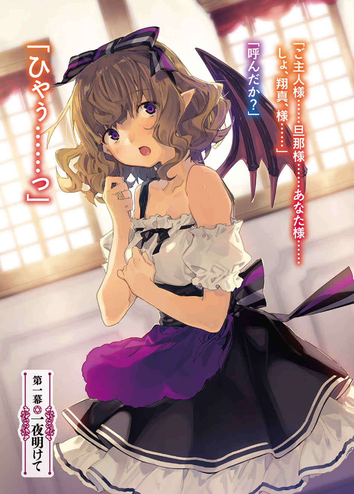
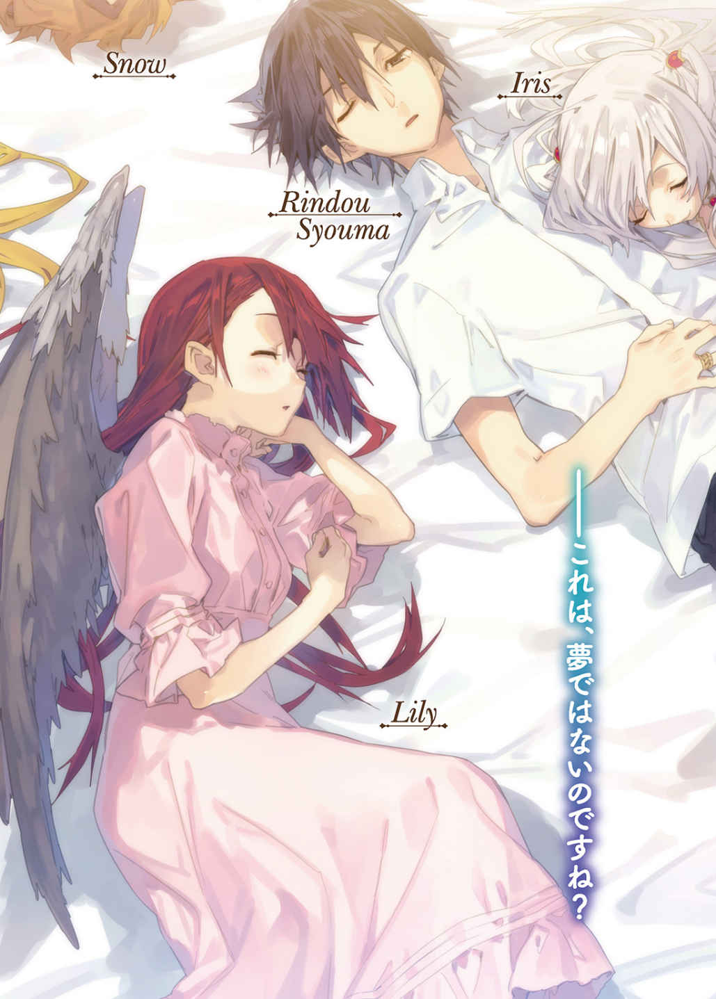
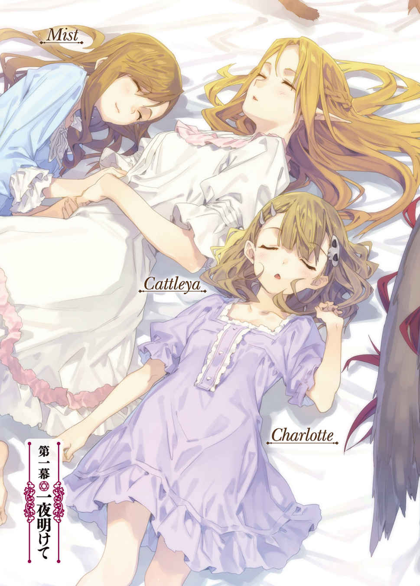
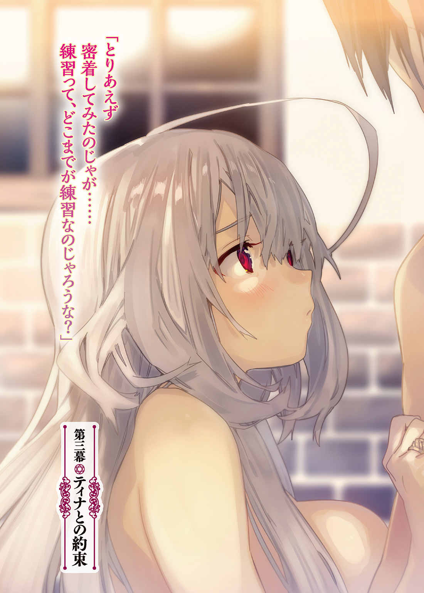
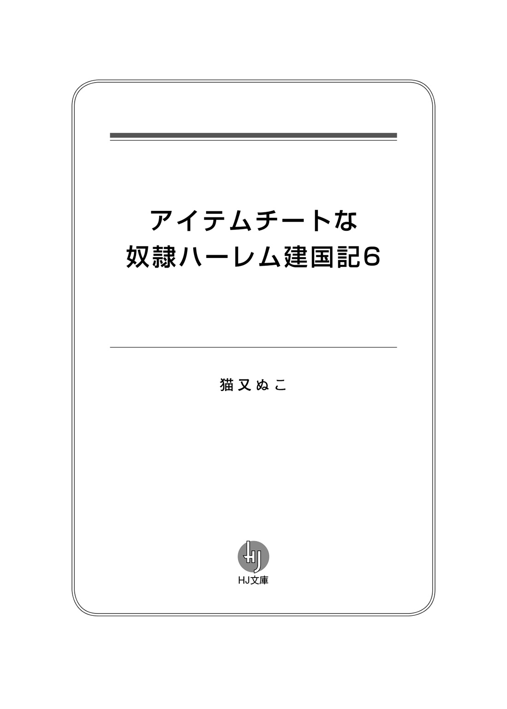
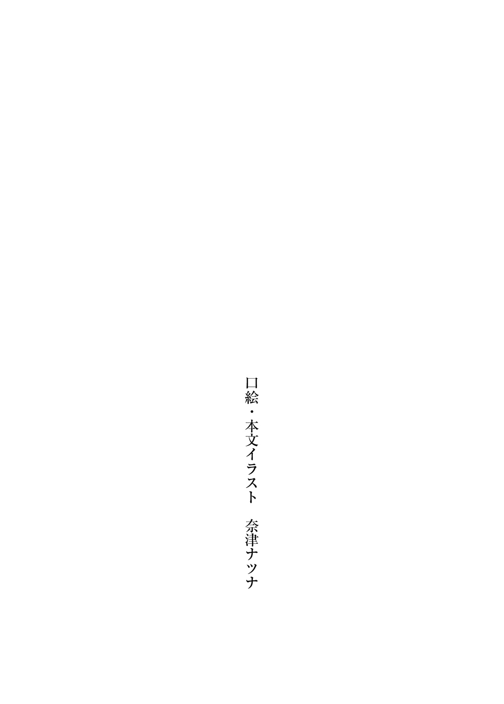
《 序幕 竜 胆 敦 盛 の置 き土産 》
プリィーナ山は、ひとが住むには適さない環 境 である。なぜなら山頂は万年雪に覆 われ、強弱の差はあれど年中吹雪 いているからだ。
雪 化 粧 の施 された山容は、遠方から眺 める分には美しいが、山の麓 は複雑な地形をしているため立ち入ることすら容易ではなく、登山をすれば遭 難 は必至である。運良く山頂にたどりつけても、下山する前に凍 死 するのは目に見えている。
もちろん魔札 があれば話は変わってくるが、だからといって好き好んでプリィーナ山に近づく者などいないだろう――ましてや住もうと試みた者など、アストラルの長い歴史を紐 解 いても存在しないだろう。
プリィーナ山を知る者は、そう思っているはずだ。
山頂に集落があるとは夢にも思っていないだろう。
だからこそ。
神託遊戯 に負けて流 刑 を言 い渡 されない限り立ち寄る者がいないからこそ、竜 胆 敦 盛 は山頂に集落を作ることにしたのである。
もっとも、敦盛が集落の開 拓 に深く関 わっているのは事実だが、滅 多 なことがない限り、彼 は傍 観 に徹 してきた。実際に働いているのは、この山に住まう予定の者たちだ。
とはいえ敦盛はべつに苦行を強 いているわけではない。苦しめるのが目的ではないため、衣食住は用意した。仮住まいを与 え、暖を取るための魔札、豪 雪 地 でも食 糧 を生産できる魔札などを与えている。
それだけが理由ではないが、この地に集 った人々は、誰 ひとりとして敦盛のことを悪く言おうとはしなかった。
どころか、新天地を用意してくれた敦盛のことを神のように崇 め、彼に完成した集落を見せたい一心で――敦盛に安心して旅立ってもらうため、今日も今日とて作業に没 頭 しているのであった。
そうして村人総出で集会堂の建設を始め、村長がそろそろ昼 休 憩 にしようと切り出 した、まさにそのとき。
大勢が働く作業場のそばに突 如 として光 り輝 く門が現れたのだ。人間ひとりくらいなら通 り抜 けられそうな光の穴――。
それを目にした途 端 、疲 れが見 え隠 れしていた人々の顔に明るさが宿った。ひとりまたひとりと持ち場を離 れ、穴に近づいていき、そして......
大勢が見守るなか、光り輝く門からひとりの男が顔を出した。
細身の長身に背広を纏 い、太くて派手なネクタイを締 めている。黒い髪 は一本も乱れることなく七三に分かれ、丸 眼鏡 の奥 では黒い瞳 が輝いていた。
服装といい髪といい、アストラルではあまり見かけない風 貌 だが――その穏 やかそうな顔つきは、見る者に不思議と安心感を与えてくれる。
「敦盛様！」
彼の姿を目にした途端、頭部に牛のようなツノを生やした幼子が明るい声を響 かせた。
雪を踏 みしめて駆 け寄 ってきたその幼子を見て、敦盛はにこりと微 笑 する。
「やあ、ネリネ。元気にしてたかい？」
「はい！ 敦盛様に言われた通り、元気にしてました！」
「それはよかった。風邪 を引くんじゃないかって、心配していたからね」
敦盛に優 しく言葉をかけられ、ネリネは嬉 しそうに目を細める。
敦盛を見て喜んでいるのはネリネだけではない――ここには多くの種族が集っているが、その誰もが騎士門 の敦盛に懐 いているのだ。
なぜなら彼らは、敦盛に救われた元奴 隷 たちなのだから。
ある日突 然 未知の世界に召 喚 され、故郷へ帰るには一〇〇〇〇種の魔札を集めなければならないとわかり、敦盛は寝 る間も惜 しんで神託遊戯に打ちこんだ。
勤労賛美の時代に生まれ、企 業 戦士として過 酷 な競争社会を生きてきた敦盛にとって、この世界の生活はむしろ生ぬるく――労することなく言語を学び、勝利を重ね、全財産を根こそぎ奪 い、大勢の奴隷を手に入れ、そのすべてを解放したのである。
奴隷の多くは故郷へ去っていったが、なかには行き場のない者もいた。
愛する妻に『貴方 のお人 好 しなところに惹 かれました』と評される敦盛は、事実困っている者を見捨てることができない性 分 であった。妻との出会いもこの性分に起因するため、敦盛は自分の性分を愛している――いまさらこの性格を変えるつもりはさらさらない。
行き場のない元奴隷たちを見捨てることができず、しかし一〇〇人を超 える団体を旅につれていくわけにもいかず、かといって放っておけば再び奴隷になるかもしれないため、彼らが安心して暮らせる居場所を作ることにしたのである。
それがプリィーナ山だ。
過酷な環境は絶好の隠れ蓑 。好き好んで訪 れる者などいないプリィーナ山の山頂ならば、悪党に狙 われ、再び奴隷にされることはないと判断したのだ。
「敦盛様！ よくぞご無事で......！」
「敦盛様のお帰りを、心よりお待ちしておりましたぞ！」
敦盛の無事な姿を目にして、民 たちは一様に安 堵 の表情を浮 かべている。なかには気が抜けたようにへなへなと座 りこむ者もいた。
安堵するのも無理はない。
なぜなら敦盛は『これから神を倒 してくるよ』と言い残して旅立っていったのだから。
「心配かけて悪かったね」
敦盛はにこやかに言う。
「見ての通り、私は無事さ。欲 しいものも手に入ったし、これでやっと帰れるよ......」
魔札全種をコンプリートして、最高神アイリスとの神託遊戯に勝利した敦盛は、三つの命令を下せる権利を手に入れ、三種の魔札を創 らせた。
――『最高神をアストラルに干 渉 できなくする魔札』。
――『最高神を五〇年間隔 離 空間に閉じこめる魔札』。
――『竜胆敦盛の生まれ故郷に繋 がる門を開く魔札』。
そのうち二つはすでに使用した。
定期的に災害を引き起こしていた最高神の力と肉体を奪うことで物理的にアストラルに干渉できなくし、隔離空間に閉じこめることで災害を起こしていた自身の行いを悔 い改 めさせることにした。
そして最後の一枚『竜胆敦盛の生まれ故郷に繋がる門を開く』魔札――〈原点回帰 〉を詠 唱 すれば、敦盛は生まれ故郷へと帰 還 できるのだ。
そう考えると、胸のうちから喜びの感情が湧 いてくる。
敦盛はこの日を待ち望んでいたのだ。なぜなら新 婚 生活が始まった直後――愛する妻とキスをして、乗り慣れたバイクで出社している最中に、異世界アストラルへと召喚されてしまったのだから。
遺 されたバイクを見て、妻はどれほど心配しただろう。
広い家にひとり残され、妻はどれだけ寂 しい思いをしているだろう。
敦盛が誕生日に贈 ってもらったネクタイを見て妻を想 っているように、今 頃 妻も敦盛のことを想っているはずだ。
いますぐ家に帰りたい。
そして、愛する妻を抱 きしめ、安心させてあげたい。
その夢がついに叶 うのだ。
妻のもとへ帰る日を夢にまで見た敦盛だったが――
「敦盛様......いなくなるのですか？」
ネリネが寂しげに見つめてきた。敦盛の願いが愛する妻のもとへ帰ることであることは、この場の全員が知っているのだ。
「......そうだね」
アストラルに召喚されて間もない頃 は帰りたくてしかたなかったし、その思いはいまも変わらないが――アストラルに心残りがないわけではない。
得体の知れない自分のことを慕 ってくれる元奴隷たち――。彼らをこの地に残すことが、敦盛にとって唯 一 の心残りなのだった。
それでも、敦盛の決意は揺 らがない。
「私は帰るよ。愛する妻が、私の帰りを待っているからね」
それに、と敦盛は民たちの顔を見まわす。
「最初は不安に感じるだろうけど......それでもきみたちなら、上手 くやっていけるさ」
アストラルには細分化すると一〇〇を超える種族が暮らし、八つの門派 に分かれている。そして八つの門派は自治区 を作り、ほかの門派と小 競 り合 いを続けているのだ。
彼らのためにも、できることなら各門派の仲を取り持ち、争いのない平和な世界にしてあげたかったが......敦盛には世界そのものを改革する手段などなく、その方法をじっくり考える時間もないのであった。
しかし力を合わせて集落を作り上げたことで、この場の面々は異種族同士でありながら家族のような関係を築いている。
獣牙門 と呼ばれる種族のネリネは天 涯 孤 独 の身だったが――いまでは死霊門 の老 夫 婦 が親代わりになっているのだ。
ここは住むには適さない過酷な環境だが、彼らが力を合わせれば、この先も困難を乗 り越 えることができるだろう。
生活に必要な魔札は譲 っているし、彼らはそれを上手に使いこなせている。敦盛がこの世界でやるべきことは、あとひとつだけなのだ。
「ネリネにこれを預けたいんだ」
敦盛はネリネに一枚の魔札を渡した。
「これは......なんですか？」
「私の宝物さ」
ネリネはぎょっとした。
「そ、そんな大切なものを、わたしが預かっていいんですか？」
不安がるネリネに、敦盛はにこりとほほ笑 みかける。
「もちろんさ。ネリネとは長いつきあいだからね。きみならちゃんと管理できると信じているよ」
「敦盛様......」
ネリネは表情を引 き締め、力強くうなずいた。
「敦盛様の宝物、命に替 えてもお守りします！」
「お願いするよ。だけど、そのうち私の宝物を取りに来るひとが現れるだろうから、そのときは、その魔札に書いてある通りに頼 むよ」
「はい！」
ネリネは風に飛ばされないように、魔札を魔導指輪 に保管する。それを見届け、敦盛は満足げにほほ笑んだ。
これをもって、敦盛がアストラルでやるべきことはなくなった。
あとはもう、愛する妻のもとへ帰るだけだ。
「それじゃ、私はもう行くよ。みんな、達者でね」
民たちに安心感を促 すような笑みを向け、敦盛は〈原点回帰〉を詠唱する。
白く輝く雪の上に真 紅 の魔 法 陣 が広がり、目の前に光り輝く門が生まれ――
竜胆敦盛は、アストラルから姿を消した。
これより約五一年後、敦盛の孫である竜 胆 翔 真 がアストラルに召喚されることを、このときはまだ、誰も知らない――......
《 第一幕 一夜明けて 》
その日、竜 胆 翔 真 が目覚めて最初に目にしたものは――落ち着きなくそわそわしている女の子だった。
先 端 の尖 った耳と蝙蝠 に似た翼 を持つ、儚 げな印象の娘 である。緩 く波打つ金 髪 は絹のように繊 細 で、か弱そうな体つきをしているが、胸 元 はパジャマを押 し上 げるようにして膨 らんでいる。
ベッドのそばに佇 み、優しげに垂れた瞳でじぃっとこちらを見つめていたルメリアは、翔真と視線が交わると、途端に頬 を紅潮させた。
うわずった声で、遠 慮 がちに話しかけてくる。
「おはようございます、ごしゅ......」
ご主人様と言おうとしたのだろうが、途 中 で言葉に詰 まってしまう。
「おう。おはよう」
言いつつ、翔真は上半身を起こそうとしたが......胸に重さを感じ、仰 向 けになったまま二の句を継 いだ。
「なにかあったのか？」
問いかけると、ルメリアは伏 し目 がちになる。なにか言いたそうにしているが......唇 を震 わせるだけで、言葉にしようとはしない。
とはいえルメリアとは毎日顔をあわせているため、言葉を交 わさずとも言いたいことは察しがつく。
「首、慣れないのか？」
どうやら正解だったらしく、ルメリアは長いまつげを震わせ、そっと細首に手を当てる。そこには――ルメリアのほっそりとした首には、奴隷の首輪がはめられていなかった。
ルメリアが無理やり外したのではない。そもそも奴隷の首輪は、主人の許可なしに外すことはできないのだ。
奴隷の首輪を外す方法はただひとつ。奴隷の契 約 書 を破 棄 することだ。
そして翔真は今朝、嫁 たちと温泉に入ったあと――ルメリアの前で奴隷の契約書を破り捨てたのだ。
なぜなら翔真は、ルメリアに求 婚 したのだから。
つまりルメリアは奴隷ではなく、翔真の嫁になったのである。
「......はい。まだ慣れません」
「そうか。......ルメリアは、いつから奴隷だったんだ？」
翔真はルメリアの過去を知らない。昔のことを根 掘 り葉 掘 り訊 くとトラウマを刺 激 してしまうと思い、あえて触 れなかったのだ。
だが、知っていることはある。
はじめて奴隷商館を訪れた日、翔真は『奴隷歴一〇年以上』『若い娘』『処女』という条件を提示し、それに合 致 する娘としてルメリアが紹 介 された。
ルメリアは翔真と同い年くらいなので、奴隷歴一〇年以上ということは、六歳 の頃にはすでに奴隷だったことになる。
「その当時のことはあまり覚えていないのですが......物心ついて間もない頃には、首輪をはめられていました」
「だったら慣れないのも無理ねえな」
ルメリアにとって奴隷の首輪は、そこにあって当たり前のものだったのだ。
しかし当たり前のものを失ったとはいえ、それはルメリアにとって悲しむべきことではない。
ルメリアは翔真の奴隷であることを誇 りに思っていると言ってくれたが、求婚したとき彼 女 は幸せそうにほほ笑んでいたし――ベッドに入ったときも、頬を緩ませていた。
だというのに、ルメリアは不安げにしている。翔真を見つめ、そわそわしているのだ。その理由に、翔真は察しがついていた。
「安心しろ。俺 はルメリアを嫁にした――それは夢じゃねえからな」
するとルメリアの顔に、じんわりと明るさが広がっていく。
思った通り、ルメリアは不安に感じていたのだ――奴隷から解放されたのは現実でも、翔真に求婚されたのは夢なのではないかと。ルメリアにとってそれは、翔真に捨てられたことを意味するのだ。
しかし翔真に面と向かって『私はあなたの嫁なのですか？』などとたずねるのは抵 抗 があり――翔真の口から『ルメリアは俺の嫁だ』との言葉が飛び出すのを待っていたというわけだ。
「これは、夢ではないのですね？」
夢でも見ているかのような眼 差 しを向けられ、翔真は微笑した。
「ああ。夢なんかじゃねえぜ。昨日から今朝にかけて起きた出来事は、全部現実に起きたことだ。ま、俺にとっても夢みたいな出来事なんだが......こうしてアイリスに触 ることができるしな」
アイリスは翔真の胸元を枕 代わりにして眠 っていた。美しい光 沢 を放つ銀 髪 を撫 でると、極 上 の手 触 りが伝わってくる。
魔札 全種を集めた翔真は〈神の間〉へ赴 き、アイリスに実体を取 り戻 させることに成功したのだ。
翔真に触れるようになったのがよほど嬉しかったのだろう。アイリスは翔真にべったりくっつき、ベッドに入ってからも離れようとはせず、翔真に抱きついたまま寝てしまったのだ。
寝 苦 しさはあるが、幸せそうなアイリスの顔を見ていると、はね退 けようとは思えない。翔真は仰向けになったまま、大きなベッド上を見まわす。
翔真のまわりでは、多くの娘が寝 息 を立てていた。
そしてそのほとんどが、アストラルにおける重 鎮 である。騎士門 全権代理者 のミスト。獣牙門 全権代理者のスノウと、お目付役のシャロン。巨人門 全権代理者のジュナ。死霊門 全権代理者のシャーロット。森棲門 全権代理者のカトレア。飛翼門 全権代理者のリリー。海妖門 全権代理者のミモザ。そして――
「カンナはどこだ？」
ベッドのどこを見まわしても、〈うさぎ亭 〉の看 板 娘 であるカンナが見当たらなかった。せっかく一 緒 に温泉に入ったのだからと宿 泊 を勧 め、カンナは嬉しそうにベッドにもぐりこんだのだが......
「カンナ様はお仕事に出かけました。私も出かける準備をしなければなりません」
「もうそんな時間か」
ルメリアが仕事に出かける準備をするということは、正午をまわっている頃だ。いつもなら寝 過 ぎたと思うところだが、今回はむしろ早起きの部類になる。
なにせ翔真は明け方まで起きていたのだから。
嫁たちも日が昇 るまで寝ずに翔真の帰りを待っていたし、目覚めるのはしばらくあとになるだろう。
嫁が目覚めると賑 やかになるし、いまのうちに用事を済ませておいたほうがよさそうだ。そうと決めた翔真は、アイリスを起こしてしまわないようにベッドを抜け出した。するとルメリアがなにか言いたげに見つめてくる。
「どうした？」
「いえ、その......な、なんでもありません」
ぺこりと頭を下げ、ルメリアは足早に部屋をあとにする。
いつも静々としているルメリアらしからぬ言動だが、奴隷から嫁になったのだ。きっとルメリアは翔真との接し方で悩 んでいるのだろう。
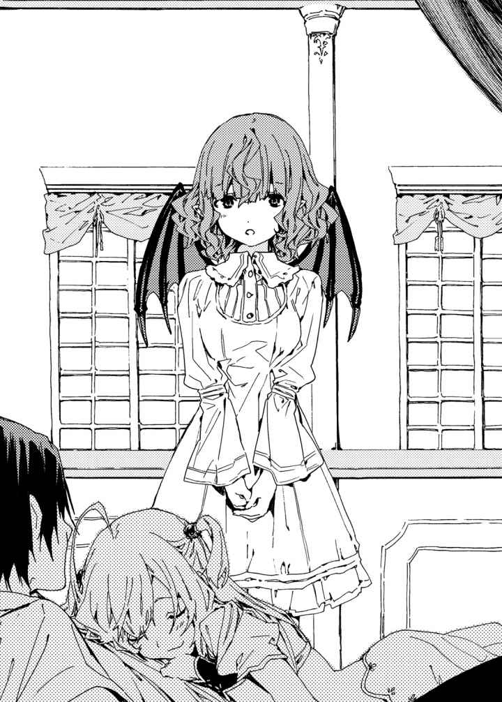
その証 拠 に、翔真は『ご主人様』と呼ばれなかった。
ご主人様と言いかけたが、けっきょくその言葉を呑 みこんでしまったのだ。だとすると、ルメリアは翔真が入浴中に告げた『とある言葉』に悩まされているということになる。
（用事が終わったら、ルメリアの話を聞いてやらねえとな）
翔真は嫁たちをベッドに残し、ひとつ下の階へと向かう。翔真の寝 室 のちょうど真下に位置する部屋に入ると――長身の女性が窓辺に佇んでいた。
柔 らかな銀髪を風になびかせ、窓の外に広がる景色を眺めている。
「よォ、キルシュ。眠れないのか？」
歩み寄りつつ話しかけると、キルシュはハッとした顔で振 り返 った。外の景色に夢中で、足音に気づかなかったようだ。
驚 いたように目をまるくしていたキルシュは、真紅の瞳で翔真を捉 え、じんわりと頬を緩ませる。
「さっき起きたところさ」
そして、穏やかな物 腰 で語りかけてきた。
「そっか。そいつは残念だ」
「きみは僕 の寝 顔 を見に来たのかい？」
「それも魅 力 的 だがな。眠れないなら、添 い寝してやろうと思ったんだ」
翔真が残念そうに肩 をすくめると、キルシュはくすりと笑う。
「僕は甘 えるより、甘えられるほうが好きなのさ。だから、きみがこの娘のように添い寝してくれとせがむなら、特別に添い寝してあげてもいいよ」
からかうような口調で言いつつ、キルシュは愛 おしそうにベッドを見る。
ベッドの上では小 柄 な娘が寝息を立てていた。透 き通るような銀髪をベッドの上に広げ、幸せそうに眠っている。
キルシュの妹――ミリアである。
安心しきった顔で眠っているところを見るに、ミリアはここでの暮らしを不安に感じていないらしい。そばにキルシュがいるだけで、どこだろうとそこが世界で一番安心できる場所になるのだろう。
「俺も甘えられるほうが好きだからな。俺に甘えたくなったら、いつでもベッドに来いよ。早く来ないとベッドが埋 まっちまうぜ」
「きみの寝室は、さぞかし賑やかなんだろうね」
「まあな。つっても、ここと大差ないけどな」
「そうだね」
キルシュは窓を一 瞥 する。
「この賑 々 しさには、しばらく慣れそうにないよ」
わざとらしくため息をこぼすキルシュに、翔真はにやりと笑う。
「だからって、〈密談空間 〉は貸さないぜ。こいつはお前への罰 なんだからな」
昨日、聖神門 の全権代理者たるキルシュとの神託遊戯 に勝利した翔真は、彼女に三つの命令を下した。
一つ目の命令で、翔真はキルシュから魔札を根こそぎ奪い取り。
二つ目の命令で、翔真はキルシュのパンツを見て。
三つ目の命令で、翔真はキルシュを城に住まわせることにしたのだ。
なぜならキルシュは静 寂 を愛し、賑々しさを嫌 っているから。
クヌル平野の中心部に佇むこの城で暮らせば、朝から晩まで賑やかな声が聞こえてくるのだ。
それは静寂を愛するキルシュにとって、耐 えがたい罰なのである。
もっとも。
「これからも、きみが用意したこの罰を甘んじて受け入れるさ」
罰を受けている最中だというのに、なぜかキルシュは幸せそうにしているが......それについては、翔真は追 及 しないことにしていた。
「ところで服のサイズはどうだ？」
翔真はキルシュにたずねた。
神託遊戯で魔札を根こそぎ奪い取ったため、今朝温泉に入ったあと、翔真はキルシュに衣類や食糧の魔札を与えたのだ。
小さいと息苦しいと思い、ぶかぶかのパジャマを譲った。胸元はゆるゆるになっており、少し屈 んだだけで胸の谷間が見えそうだ。
そんな翔真の思 惑 を察したのか、キルシュは艶 やかに唇をつり上げた。
「きみは、僕がしゃがむのを期待しているのかい？」
「どうしてそう思うんだ？」
「きみが僕の身体 に興 味 津 々 なことは、察しがついているからね。図星かい？」
「だったらどうする？」
キルシュは色っぽく目を細める。
「見せてあげるよ。......その代わり、ひとつお願いを聞いてほしいんだ」
ふいに表情を硬 くするキルシュに、翔真は自然と真顔になる。
「願いってのは？」
「僕に、外出の許可を与えてほしいんだ。......僕は、謝 らなくちゃならないからね」
「謝るって、奴隷たちにか？」
キルシュは顔を曇 らせ、うなずいた。
「謝って許してもらえるとは思ってないけど......きちんと謝りたいんだ。それを許可してくれるなら、好きなだけ僕の下着を見せてあげるよ」
誘 惑 するような熱っぽい瞳を向けられ、翔真は肩をすくめた。
「魅力的な提案だが、断るぜ」
「な、なぜだい？ きみは神託遊戯の命令権を使ってまで、僕の下着を見たじゃないか」
「あのときは下着が見えなかったからな。けど、いまは見えるぜ」
「......見える？」
きょとんとするキルシュに、翔真はにやりと笑う。
「気づいてないようだが――お前のパジャマ、透けてるからな」
キルシュは、ほうけたように目をまるくする。
ゆっくりとふくよかな胸に視線を落とすと......薄 手 のパジャマは日差しを浴びて透けていた。
身につけると寝苦しいのだろう、キルシュは上の下着を着用していなかった。
「......っ」
キルシュは咄 嗟 にしゃがみこむ。と、ゆるゆるの胸元から、はっきりと乳 房 が見えた。翔真の視線に気づき、慌 てて胸元を手で隠す。
羞 恥 に顔を赤らめるキルシュに、翔真はにやりと笑いかけた。
「もしかして、恥 ずかしいのか？」
「き、きみは僕をなんだと思ってるんだい？ は、恥ずかしいに決まっているじゃないか......」
「昨日は下着を見せることに抵抗はないとか言ってなかったか？」
「あ、あれは......我 慢 していただけさ」
「けど、風 呂 に入ったときは堂々としてただろ？」
「あれはミリアがいたからさ。ミリアの前では、僕は堂々と振る舞 うと決めているんだ。きみがじろじろと僕を見たとき、ほんとはすごく恥ずかしかったんだよ......」
「なるほどね。つまりミリアを起こしたら、堂々と下着を見せてくれるってことか？」
ちらっとミリアを見ると、キルシュはますます顔を赤くした。褐 色 の肌 に、じんわりと汗 が滲 み出 てくる。
「き、きみはどれだけ欲求不満なんだい？ あんなに多くの嫁がいるのに......」
「それはそれ、これはこれだ。それに言っただろ？ お前は見た目だけはタイプだってな。おまけに、いまじゃ性格もわりと好みだぜ」
するとキルシュが、探 りを入れるような視線を向けてくる。
「じゃ、じゃあ......なおさら、僕の下着を見たいんじゃないかい？」
「まあな。けど、お前の条件を呑む必要はねえよ。〈透視 〉と〈千里眼 〉を併 用 すれば、いつでも下着を見放題だしな」
「だ、だったら......僕の身体を好きにしてくれて構わないよ。だから、僕に外出の許可を与えてほしいんだ。解放したとはいえ......いまもどこかで、僕に怯 えているだろうからね。彼らを見つけて、謝って、誓約書に二度と危害を加えないと記したいんだ」
自責の念に駆られるキルシュに、翔真は眉 をひそめた。
せっかく解放されたのだ。放っておけば移動するだろうが、昨日の今日で遠くへ行けるとは思えない。元奴隷たちは、昨日とほとんど同じ場所にいるはずだ。
だというのに、キルシュは『いまもどこかで』と言った。
それはつまり、元奴隷たちがどこにいるか把 握 していないということだ。
「お前、奴隷をどこに解放したんだ？」
翔真とキルシュは、元々クエストの決勝戦で戦う予定だった。が、互 いに日時の変 更 を求めたことで、決勝戦は延期となったのだ。そしてその際、翔真とキルシュは契約書に『竜胆翔真が〈千里眼〉と二四枚のＳＳＳランク魔札を持って神託遊戯に挑 む代わりに、キルシュはすべての奴隷を無事な姿で安全な場所に解放する』と記した。
精 霊 が発行する誓約書には神託遊戯の命令権と同等の拘 束 力 がある。キルシュが昨日のうちに奴隷たちを無事な姿で安全な場所に解放したのは間 違 いないのだ。
「安全な場所にいるのは間違いないけど......具体的な場所まではわからないんだ」
キルシュの言葉で、翔真は察しがついた。
「なるほどね。つまり〈避難経路 〉を使ったってことか」
確信を持ってたずねると、キルシュはうなずいた。
キルシュが使った〈避難経路〉は『対象の脅 威 が及 ばない場所へ通じる転送門を開く』効果のＳＳランク魔札だ。
キルシュは自分を対象に使ったため、元奴隷たちはキルシュの魔の手が及ばない場所へ転送された――つまり、キルシュの知らない場所に転送されたというわけだ。
今日中に元奴隷たちを保護するつもりだったが、具体的な場所がわからないのでは簡単にはいかない。
「きみの魔札をもってしても、居場所を特定するのは難しいかい？」
「まあな。けど、方法はあるぜ」
「方法？」
「ああ。上手くいく保証はねえけどな。それでも安全な場所にいるのは間違いないし......ま、気長に捜 すとするさ」
申し訳なさそうに顔を強 ばらせるキルシュに、翔真は軽い口調で告げる。
安全な場所にいる以上、急を要する話ではないのだ。安全な場所ということは、翔真の保護を必要としていないということでもあるのだから。
しかし、放っておくわけにもいかない。なぜならキルシュが解放した奴隷のなかには、森棲門の全権代理者にして翔真の嫁であるカトレアの姉――ダリアがいるのだから。
愛する嫁を安心させてやるためにも、ダリアを保護しなければならないのである。
「手間をかけさせて、本当に申し訳なく思ってるよ。きみだけじゃなく、いつかちゃんと、みんなに謝りたいよ」
キルシュは、心苦しそうに顔を歪 める。罪悪感に押し潰 されそうになっている様子だ。
「お前が反省してるってことはわかってるぜ。けど、口だけならなんとでも言えるからな。お前が誠意を持って謝ったところで、お前にひどいことされた連中に信じてもらえるとは限らねえ。いますぐ謝ったところで、怖 がられるか、激 昂 されるだけだろうぜ」
キルシュは悲しげに目を伏せた。
「みんながすっきりしてくれるなら、いくらでも罵 声 を浴びる覚 悟 はできているけど......みんなを怖がらせることになるなら、なにもしないほうがいいのかもしれないね......」
「べつになにもするなとは言ってないぜ」
うつむきがちになっていたキルシュは、翔真のかけた一言に顔を上げる。
「僕にできることがあるのかい？ 僕はなにをすればいいんだい？ 僕にできることならなんでもするよ」
キルシュがすがりつくような眼差しを向けてくる。
「いますぐに謝罪しても、信じてもらえる保証はねえからな。だからまずは言葉じゃなく、態度で謝罪の気持ちを示したほうがいいと思うぜ」
「態度で......？」
そうだ、と翔真はうなずく。
「お前は世界を滅 ぼすつもりだったんだろ？ だったら、その正反対のことをすればいい。お前に怯える連中に『キルシュは平和を愛してる』と思ってもらえるように振る舞えば、いつかは直接謝罪をしても、怖がられることはなくなるだろうぜ」
「平和を......」
キルシュは考えごとをするように黙 りこみ、自信なげにぽつりとつぶやく。
「たとえば......僕が花を育てれば、平和を愛しているように見えるかな？」
翔真は微笑を向ける。
「ああ、見えるぜ。つっても、花 壇 を作ったくらいじゃ大勢には伝わらねえだろうがな。みんなに信じてもらうには、花畑を作るくらいしないとな」
なかには『花を育てたからなんだというのだ！』と激 怒 する者もいるかもしれないが、キルシュの誠意をきちんと理解してくれる者もいるはずだ。
「僕にできることなら、なんでもするよ」
自分にできることが見つかり、少しは気が楽になったのだろう。その気になったらしいキルシュに、翔真は告げた。
「じゃ、まずは城の裏庭に花畑を作ってみろ。魔札を使わず、自分の手で花を育てるんだ。そして泥 だらけになったら、一緒に風呂に入ろうぜ。ミリアも一緒にな」
するとキルシュは、表情を緩ませるようにほほ笑み、こくりとうなずいた。それから、キルシュにガーデニングに必要な道具一式を渡 すと、翔真は部屋をあとにしたのであった。
◆
キルシュの部屋をあとにした翔真は、ひとまず寝室へ戻ることにした。目覚めたときに翔真が見当たらなければ嫁たちがルメリアのように『昨日の出来事は夢だったのでは』と不安がるかもしれないと考えたのである。
「......様」
そうして最上階の廊 下 を歩いていると、か細い声が聞こえてきた。見ると、ルメリアの部屋のドアが半開きになっていた。とするといまのはルメリアの声だ。
そっと隙 間 から覗 きこむと、ルメリアはメイド服のような衣装に身を包 んでいた――〈うさぎ亭〉の仕事着だ。
それを着て、ぶつぶつと独り言をつぶやいている。
「ご主人様......旦 那 様 ......あなた様......しょ、翔真、様......」
「呼んだか？」
「ひゃぅ......っ」
びくっと震え、びっくりしたように目をまるくするルメリア。はじめて見るその表情に、翔真は思わず笑ってしまった。
「驚かせて悪かったな。いまの、俺をなんて呼ぶか考えてたのか？」
ルメリアは胸元に手を当て、小さく深呼吸したあと、こくりとうなずく。
「はい。私はもう奴 隷 ではありませんので......ですので、ご主人様のことを、ご主人様とお呼びすることはできません......」
やはり翔真の思った通りだった。翔真はルメリアに結 婚 を申しこんだ際、『嫁になった以上、ご主人様という呼び方も変えたほうがいい』と告げていたのだ。
翔真は急がせるつもりなどなかったが、ルメリアは焦 ったのだろう。早く嫁らしく振る舞わなければ――でなければ翔真をがっかりさせてしまう、と。
それゆえ翔真の呼 称 を考え、ひとりで練習していたというわけだ。
「ご主人様......私はご主人様のことを、なんとお呼びすればよいのでしょうか？」
「さっき練習してたなかだと、名前呼びが一番よかったぜ」
「お名前、ですか......」
ルメリアは自信なげに目を伏せる。
先ほどひとりで練習していたときも名前呼びだけ上手くいっていなかったのだ。半日前まで主人だった翔真のことを名前で呼ぶのは抵抗があるのだろう。
ひとりのときでさえ、上手く呼ぶことができなかったのだ。こうして翔真を前にして、上手くできるとは思えない。
しかし、このまま放っておくわけにもいかない。放っておけば、ぎくしゃくした関係が続いてしまうのだから。
「仕事まで時間があるなら、ちょっと練習してみようぜ。俺を名前で呼んでみてくれ」
ルメリアの緊 張 感 を少しでも和 らげるため、翔真は明るく笑って告げた。
ルメリアは強ばった顔を縦に振ると、おずおずと言う。
「しょ、しょぅ......」
熱い吐 息 とともにかすかな声がもれるが、上手く聞き取ることはできなかった。翔真の耳が悪いのではなく、ルメリアは最後まで言い切ることができなかったのだ。
ルメリアはしゅんとする。
「申し訳ありません......」
気落ちするルメリアに、翔真はほほ笑みかける。
「気にするな。それより、俺を名前で呼ぶときって、どんな気持ちなんだ？」
「気持ち......ですか？」
「ああ。恥ずかしいとか、緊張するとか、怖いとか、申し訳ないとかさ」
「私は......申し訳なく思います」
申し訳なく感じるということは、主従関係という意識が根強く残っているのだろう。
呼び方を変えなくとも、時間をかければ主従関係は薄 れていくだろうが――時間が解決してくれるのを待つだけでは、夫 婦 生活に慣れるまでかなりの時間がかかりそうだ。
ルメリアの奴隷意識を取り除き、翔真の妻になったことを自覚してもらうには、やはり名前で呼んでもらう必要がある。ご主人様ではなく名前で呼べば、主従関係という意識も薄れていくだろう。
そのためにも、まずは名前で呼ぶ際に感じる抵抗を吹 き飛 ばさなければならない。そう考えた翔真は、ルメリアを抱 き寄 せた。
「ご主人様......？」
ルメリアが戸 惑 うようにか細い声をもらす。
翔真は彼女の髪 をすべるように撫でながら、
「申し訳なく思うことはないぜ。俺は、ルメリアと結婚できて幸せだからな。ルメリアはどうだ？」
「......はい。私、ご主人様に娶 っていただけて幸せです」
「どれくらい幸せだ？」
「それは......言葉では言い表せません」
「そうか。けど俺は、ルメリア以上に幸せに感じてるぜ。俺みたいな男はそこらじゅうにいるが、ルメリアみたいないい女は滅 多 にいないからな」
「そ、そんなこと......ありません。ご主人様は、特別な御 方 です」
「そう言ってもらえると男として自信がつくぜ。けど、ルメリアがとびきりいい女だってことに変わりはねえ。そんなルメリアを、俺は抱きしめることができるんだ。それだけで充 分 すぎるほど幸せだが......実は、もっと幸せになる方法があってな」
そう言って、翔真はルメリアを見つめた。ルメリアが、潤 んだ瞳 で見つめ返してくる。
「それは......どうなさるのですか？」
「子どもを作るんだ」
「私が、ご主人様と......」
ルメリアの華 奢 な身体が、かすかに震える。体温がじわじわと上がり、速くなっていく心臓の鼓 動 が柔らかな胸越 しに伝わってくる。
ルメリアは、自信なげに目を伏せた。
「そんなことが......私に許されるのでしょうか？」
「許されるさ。俺とお前は夫婦だからな。もちろん、ルメリアさえよければだが」
判断をルメリアに委 ねると、彼女はそっと顔を上げた。
熱っぽい眼差しで翔真を見つめ、
「私......ほしいです。ご主人様の赤ちゃんがほしいです」
「そいつはよかったぜ。ところで、俺と子どもを作ることに比べたら、名前で呼ぶのとかたいしたことないんじゃねえか？」
ルメリアは、はっと目を見開く。勇気を振り絞 るように唇を噛 み......上 目 遣 いに翔真を見つめた。
「私......翔真様の赤ちゃんがほしいです」
翔真は微 笑 すると、ルメリアの頭を撫でた。
「上手 く呼べたじゃねえか」
「はい。私、呼べるようになりました」
翔真に褒 められ、ルメリアは嬉 しそうに頬を緩めた。
これから先、翔真を名前で呼ぶたびに主従関係という意識が薄れていき、夫婦になったという意識が強まっていくだろう。
奴隷だった日々が遠い過去のことのように思えるのがいつになるかはわからないが――ともあれ、ルメリアは晴れ晴れとした顔をしている。
これなら仕事中に頭を悩ませる心配はなさそうだ。
そうして翔真がルメリアの悩みを解決したところ、
「おおっ！ そこにおったかっ！ 部屋にいないから心配したのじゃぞっ！ もう離 さぬのじゃ！」
アイリスが明るい声を響 かせて部屋に駆 けこみ、翔真に抱きついてきた。
「寝 起 き早々ハイテンションだな。いい夢でも見たのか？」
「うむっ！ じゃが、夢より現実のほうが幸せなのじゃっ！ だってほら、そなたに触ることができるのじゃからなっ！ そなたはどうじゃ？ わしに触れて幸せか？」
「おう。幸せすぎて倒 れちまいそうだぜ」
アイリスは、ぱあっと顔を輝 かせた。嬉しそうにお尻 を振り、マーキングでもするかのように翔真に身体を擦 りつける。
「そなたさえよければ好きなところを触ってくれて構わぬのじゃぞっ！ なにせそなたはわしの夫なのじゃから――ひゃあっ」
ぺた、と頬に触れると、アイリスはぴくっと肩を震わせた。
「ま、まさか頬を触られるとは思わなかったのじゃ......」
どきどきしている様子のアイリスに、翔真はにやりと笑う。
「どこを触られると思ったんだ？」
「そ、そんなの決まっておるじゃろ......」
「へえ。どこだ？」
「そ、それは......」
アイリスの頬がじんわりと赤らむ。触られるのは平気なのに、口にするのは恥ずかしいようだ。
アイリスは誤 魔 化 すように咳 払 いする。
「そ、それより、そなたにお願いがあるのじゃ！ ルメリアも一緒じゃし、ちょうどいいじゃろ」
ルメリアがきょとんとする。
「私にも関係のあることなのですか？」
「関係大ありじゃっ！ ほら、神託遊戯で結 婚 式 の順番を決めることになったじゃろ？ じゃが、わしとルメリアは神託遊戯用の魔札を持っておらぬのじゃ。じゃから――」
「魔札を貸してほしいってわけか」
「そういうことじゃ。具体的なルールは決まっておらぬが......ルールがどうあれ、魔札がなければ勝ち目などないからのぅ」
「あの、アイリス様......。私が参加してもよろしいのでしょうか？」
ルメリアが遠 慮 がちにたずねると、アイリスは当然とばかりにうなずいた。
「もちろんじゃ。そなたも翔真の嫁なのじゃからな！」
力強く告げられ、ルメリアは顔を明るくさせる。
「はい。私は娶っていただきました」
「じゃろ？ そんなわけで、後 腐 れがないように嫁は全員参加なのじゃ！」
「アイリスらしくねえな。いつもなら、『ライバルはひとりでも少ないほうがいい』とか言って、不参加に持ちこもうとするだろ？」
「実体を手に入れ、わしにも余 裕 ができたということじゃなっ」
アイリスは得意気に言った。余裕ができたのも理由のひとつだろうが、相手がルメリアというのが大きいだろう。
獣牙門最強の魔札使いと謳 われるスノウや、実力で全権代理者に成り上がったリリーが相手なら、あの手この手で不参加に持ちこもうとしたかもしれないが――相手がルメリアなら負けるわけがないと高をくくっているのだ。
「ルメリアは神託遊戯したことあるのか？」
翔真がたずねると、ルメリアは首を横に振る。
「神託遊戯の経験がないということは、そなたは自分の意思で奴隷の契 約 書 にサインしたということじゃろうか？」
奴隷になった経 緯 を根掘り葉掘り訊くのは気が引けるのだろう。アイリスは遠慮がちにたずねた。
「ずっと昔のことですので、あまり詳 しくは覚えてないのですが......お母様を助けようと思っていたことだけは覚えています。そして、気づけば奴隷になっていました」
おおかた『契約書にサインを記せば母を解放する』とでも脅 されたのだろう。幼ければ判断力もないだろうし、ルメリアは口車に乗せられて奴隷にされたというわけだ。
「なるほどのぅ。まあ、わしから訊いておいてなんじゃが、朧 気 にしか覚えておらぬなら無理して思い出 すことはないのじゃ」
アイリスはそう言うと、気を取りなおすように明るい声を響かせる。
「とにかくそんなわけで、わしらに魔札を貸してほしいのじゃ！」
「それは構わねえが、オリジナル魔札は貸さないぜ。不公平になるからな。だから当然、オリジナル魔札を創 るのも禁止だ」
聖神門は特 殊 能力を持っており、アイリスはオリジナル魔札を生み出す〈創造 〉の使い手なのだ。
「問題ないのじゃ！ そもそもわしは病 み上 がりみたいなものじゃし、自由に力を使えるようになるには、もうちょっと時間がかかるのでな。ま、オリジナル魔札などなくとも、わしは優勝してみせるのじゃ！」
アイリスの決意を聞き、翔真は魔導指輪 から二冊の本を具現化させた。
「それはなんじゃ？」
「〈魔札コンプリートのススメ〉だ。ここに載 ってる魔札なら貸してやるぜ」
アイリスは〈魔札コンプリートのススメ〉を受け取り、ぎゅっと胸に抱きしめた。
「最強のデッキを作って、神託遊戯に勝利して、わしが最初に結婚式を開くのじゃっ！ そして翔真とキスをするのじゃ！ あぁ、楽しみじゃのぅ......」
アイリスがうっとりとした顔で語っていると、ルメリアがおずおずとたずねてきた。
「......結婚式では、口づけをするのでしょうか？」
「当たり前じゃろ。キスのために結婚式を開くと言っても過言ではないのじゃ。それともそなた、翔真とキスするのは嫌 なのか？」
ルメリアはふるふると首を振る。
「いいえ、嬉しいです。ですが......怖いです」
「怖いじゃと？」
こくりとうなずくルメリア。
「私、口づけなんてしたことがありません。上手にできるかわかりません。失敗すれば、翔真様に恥 をかかせてしまいます......」
「翔真様じゃと？ そなた、呼び方を変えたのか？」
「はい。翔真様にお手伝いしていただき、上手に呼べるようになりました」
上手く名を呼べたことを嬉しげに語るルメリア。
そんな彼 女 に笑 みを向け、翔真は優 しく語りかける。
「俺 の名前を上手に呼べたんだ。キスだって上手くできるさ。それに俺はルメリアとキスできること自体が嬉しいからな。上手い下手は些 細 な問題だぜ」
「翔真様......」
ルメリアが、うっとりとした顔をする。
するとアイリスが、あわあわと震 えた。ルメリアが翔真といちゃつくのを見て、実体を手にしたことで得た余裕は吹き飛んでしまったらしい。
「も、もう昼過ぎじゃろ！ そなた、仕事に行かなくてよいのか!? 」
アイリスが悲鳴に似た声を上げると、ルメリアは落ち着いてうなずいた。翔真をじっと見つめ、
「帰りは夕 方 頃 になると思います。それでは、お仕事に行って参ります」
ぺこりと頭を下げると、部屋をあとにした。ルメリアを見送り、アイリスは翔真の腕 に自分の腕を絡 める。
「たしか今日は出かけるんじゃったよな？ それって、わしもついていっていい場所なのじゃろうか？」
温泉に入っていたとき、翔真はアイリスにデートしたいとせがまれた。しかし翔真は、用事があると告げて断ったのだ。
「用事ってのは、キルシュが解放した奴隷の保護だ」
「ならばわしもついていくのじゃ！ もう行くのじゃろ？」
アイリスが急 かすように言った。
嫁 たちが目覚める前に、翔真とふたりきりで出かけたいと思っているのだろう。
「そのつもりだったが、予定が変わってな。実は――」
と、翔真はキルシュとのやり取りを話して聞かせる。
「......なるほどのぅ。どこにおるかわからぬ以上、〈千里眼〉だと捜すのに時間がかかりすぎるのじゃ。そなたは、どうやって保護するつもりなのじゃ？」
「まずはカトレアに〈碧落からの語りかけ 〉を使ってもらうぜ。つってもダリアの返事は期待できねえがな」
「なぜじゃ？」
「ダリアが〈守り抜かれる静けさ 〉を使ってる可能性が高いからだ。自由に連 絡 が取れるなら、カトレアはダリアの居場所を把握してたはずだしな」
カトレアは最近までダリアの居場所を知らなかった。おそらくダリアは〈守り抜かれる静けさ〉で、カトレアの〈碧落からの語りかけ〉を打ち消していたのだろう。
「なぜダリアは〈守り抜かれる静けさ〉を使ったのじゃろうな？」
「ダリアが自治区 を失 踪 したからだ。カトレアにマジギレされるのは目に見えてるから、怖くなって〈守り抜かれる静けさ〉を使ったんだろ」
そして〈守り抜かれる静けさ〉は効果を解除しない限り永続的に続くのだ。キルシュの奴隷となり、魔札全種を奪 われたことで、ダリアは〈守り抜かれる静けさ〉の効果を解除することができなくなってしまったのである。
「ならば、どうやって見つけだすのじゃ？」
「ティナがアイリスを見つけるのに使った魔札――〈盟友の導き 〉を使うぜ。カトレアは持ってねえかもしれねえが、俺は持ってるからな」
それを使えば、信 頼 関係を結んでいる相手の居場所を突 き止 めることができるのだ。
「じゃが......カトレアとダリアに信頼関係はあるのじゃろうか？」
「さあな。それを確かめるのは、カトレアが目覚めてからだ」
「じゃな。ならば、カトレアたちが目覚めるまでデートするのじゃ！」
「いや、べつのことをするぜ」
「なにをするのじゃ？」
「探すんだよ。じいちゃんが遺 した宝をな」
敦 盛 は〈神の間〉に一通の手紙を遺していたのだ。それによると、アイリスの不在中に〈神の間〉を訪 れた者のために、宝物を隠 しているらしいのだ。魔札全種を集めた敦盛が『宝』と称 するものがなにか、昨日から気になってしかたがないのである。
「ま、宝を探す前に、まずは宝の地図を解読しなきゃならねえがな」
「ならばわしも協力するのじゃっ！ わしとそなたが協力すれば、宝のありかなどすぐにわかるのじゃっ！」
デートではないが、翔真がそばにいるだけで楽しい気持ちになるのだろう。うきうきと声を弾 ませるアイリスをつれて、翔真は寝 室 へと向かうのだった。
◆
嫁たちがぐっすり眠 る寝室に戻 ってきた翔真は、さっそくテーブルに宝の地図を広げた。
地図上には一目見ただけで山だとわかるイラストが俯 瞰 で描 かれていた。拓 けた場所に数 軒 の建物が描かれ、×印が記されている。そして......
「これって、宝は山の集落に隠されてるってことじゃよな？」
「そうなるな。つっても、山は山でも雪山だがな」
アイリスはきょとんとする。
「なぜ雪山だとわかるのじゃ？ そんなこと、ここには書いておらぬのじゃが......」
「ここに雪のマークがあるだろ」
翔真は地図の左上を指さした。そこには雪の結 晶 が描かれている。意味もなく六角形を描くとは思えないし、雪のマークと見て間違いあるまい。
つまり雪山の集落に宝は隠されているというわけだ。
「これって、雪を意味しておるのか？」
アイリスは理解できないらしい。まじまじと雪の結晶を見て、小首を捻 っている。
「俺の世界じゃ雪を意味してるんだよ」
「なるほど......って、つまりそなた以外がこの地図を手に入れていたら見つからなかったということにならぬか？」
「かもな。けど、宝の地図は俺の手に渡ったんだ。問題ねえだろ」
「言われてみれば、その通りじゃなっ」
アイリスはうきうきと声を弾ませる。
「山の集落は数多いじゃろうが、雪山の集落はそう多くないはずじゃっ。これならすぐに見つかるかもしれぬぞ！」
あっという間に宝の地図の解読が進み、アイリスはハイテンションに叫 んだ。すると、ベッドのほうから物音がする。
その音に、アイリスはびくっと震えた。
「ふわあ......いまの声はなんなの？ アイリスお姉ちゃん、なにを盛り上がってるの？」
むくりと身を起こすスノウに、アイリスは『しまった』という顔をする。
「な、なんでもないのじゃ。なんでもないから、まだ寝 てていいのじゃぞ。よ、よい子はおねんねする時間じゃからな」
スノウは、じっとりと目を細める。
「......怪 しいの」
「べ、べつに怪しくないのじゃ！ いつも通りのわしなのじゃ！」
アイリスが誤魔化すように叫ぶと、寝 息 が完全に途 絶 えた。ベッドで気持ちよさそうに寝ていた嫁たちが次々と身を起こす。
その光景を見て、アイリスがひぃぃと悲鳴を上げた。
「わ、わしの計画が！ 翔真とふたりきりで宝探しデートをする計画がぁぁ！」
すべてを暴 露 するアイリス。
がっくりとうなだれるアイリスをよそに、寝室は賑 々 しさに包まれる。
「やっぱり隠し事 してたの。だけど面白 そうなの！」
「宝探しって、とっても楽しそうですわっ」
「あたしらもまぜろよな！」
スノウとミモザとリリーが宝探しに興味を示す一方で、
「吾 輩 たちに秘密で、そんなことをしようとしていたのかね」
「まったく。あんたって油断も隙 もないわね」
「アイリスさん、抜 け駆 けが得意だものね」
カトレアとシャーロットとジュナがあきれたようにつぶやき、
「我々、どれくらい寝ていたのだ？」
「もしかして、もうお昼過ぎてるんじゃないでしょうか......」
ミストとシャロンが時間を気にしている。
「そろそろ昼飯時だぜ」
ひとまずミストとシャロンの疑問に答えてやると、ふたりは安 堵 の表情を浮 かべた。
「それくらいなら問題ないのだ。てっきり、丸一日寝てしまったのではないかと思ったのでな」
「今日は朝まで起きてましたし、昼過ぎなら許容の範 囲 内 です。さあスノウ様。自治区に帰りますよ」
「嫌なの！」
スノウは即 答 した。
ベッドから飛び降りると、翔真のうしろに隠れてしまう。
「わたし、翔真お兄ちゃんと宝探ししたいの！」
「いけません」
「シャロンは、宝物に興味ないの？」
「そ、それは......まあ、気にはなりますけど。でも、それって本当に宝物なんですか？ というか、そもそもどうして急に宝探しを始めることになったんです？」
「宝の地図を拾ったからだ」
「......それ、ちゃんとした宝の地図なんですか？」
シャロンは疑わしげだ。
「だと思うぜ。なにせこの宝の地図は〈神の間〉で――最高神のところで手に入れたものだからな」
翔真が言うと、嫁たちは驚 いたように目をまるくする。
「それ、ぜったいに宝物なの！」
「いったいなにが隠されているのでしょう。わたくし、気になりますわっ」
「だな！ あたしにも見せてくれよ！」
リリーたちが翔真のまわりに集まってきた。まじまじと地図を眺 め、スノウがぽつりと言う。
「これって、山なの？」
「ああ。山は山でも雪山だがな」
「つまり宝は雪山の集落に隠されておるのじゃ。そなたら、なにか知っておらぬか？」
宝探しデートに持ちこむことはできないと諦 めたのか、アイリスは協力を求めた。
この場の面々は、全権代理者なのだ。自治区の代表である彼女たちなら、雪山の集落に心当たりがあってもおかしくはない。
「わたくしは存じ上げませんわ。海妖門の自治区は、海底にありますもの」
「わたしもわからないの。シャロン、知らないの？」
「うーん......私もわかりませんね。というか、獣牙門ではないと思いますよ。雪山があるなんて聞いたことありませんし」
「巨人門でもないわ。雪が降 る山はあるけど......雪山と呼ばれるほど積もるわけではないもの」
「死霊門はどうだったかしら。翔真がどうしてもって言うなら、調べてあげてもいいんだけど......。その代わり、ふたりきりでお風 呂 に入りたいわ」
「ならばシャーロットの力は借りぬのじゃ！」
「な、なんであんたが決めるのよ！」
アイリスとシャーロットが口論を始めた。そのとなりでは、リリーがあごに手を当て、思案顔をしていた。
「どうした、リリー？ 心当たりでもあるのか？」
翔真がたずねると、リリーは自信なげにつぶやく。
「いや、ここ......プリィーナ山じゃねえかなと思ってさ」
「それは飛翼門の自治区にあるのか？」
「ああ。プリィーナ山は飛翼門自治区の北部にあってな。実際に出向いたわけじゃねえが、昔、空を飛んで眺めたことがあるんだよ。遠くから眺める分には綺 麗 だからな」
そのとき目にした山容が、地図に描かれた山の形状に似ていたというわけか。
「けど、あの山に集落があるなんて話は聞いたことがねえからな。あそこはひとが住める環 境 じゃねえしさ」
「その山に登る奴 とかはいるのか？」
「いねえと思うぜ。死にに行くようなものだしさ。魔札を使えば話はべつだが、それでも好き好んで行く奴はいねえよ」
「なるほどね」
プリィーナ山に立ち寄る者はいないらしい。
集落があるなんて誰 も考えていないらしい。
だとすると――プリィーナ山に集落があるとすれば、キルシュが解放した奴隷たちも、そこにいるかもしれないということだ。
自治区の全権代理者であるリリーが知らないということは、キルシュも知らないということであり――集落があるということは、安全な場所ということになるのだから。
「助かったぜ、リリー」
リリーは照れくさそうに頬 をかいた。
「力になれたなら嬉しいぜっ！ ま、これからも困ったことがあればあたしを頼 れよな！ 嫁として力になってやるからよ！」
「おう。お前もいつでも俺を頼れよな。お前は俺の可愛 い嫁なんだからさ」
にこやかに告げると、リリーの頬に朱 が差した。
「い、いまの、もっかい言ってくれ」
おねだりされ、翔真はリリーの瞳を見つめる。
「お前は俺の可愛い嫁だ」
「て、照れちまうな......」
リリーは嬉しげに頬を紅潮させる。そんなリリーをほほ笑ましく眺めていると、ふいにドアが開け放たれ、うさぎにそっくりな耳としっぽを持つ娘 が駆けこんできた。
「よかった。間に合った！」
カンナである。仕事を抜け出してやってきたのか、彼女はメイド服のような衣装に身を包んでいた。
「よォ、カンナ。そんなに慌 ててどうしたんだ？」
「翔真くん、昨日温泉に入ってるとき、どこかに出かけるって話してたでしょ？ だからお弁当作ってきたのっ！ 力がつくように、お肉をいっぱい詰 めこんだよっ！ もちろん、愛情も詰めこんだよっ！」
カンナが得意気に魔札を渡してくる。魔札化することで鮮 度 が保たれるため、そのまま持ってくるのではなく魔札の状態にしたのだろう。
魔札には、バスケットが描かれていた。
「ありがとな。ちょうど腹減ってたところなんだ。美味 しくいただくぜ」
「うんっ。あたし、気合い入れて作ったからね！ だって人生初の愛妻弁当だもんっ！ って、自分で愛妻なんて言うのもどうかと思うけどね」
「間 違 ってないぜ。俺はカンナを愛してるからな」
「ほんとにっ？ 嬉しいっ！ あたしも翔真くんのこと大好きだよっ！」
カンナはぎゅっと翔真に抱きつき、
「それじゃ、あたしは仕事に戻るね！ もしよかったら、お弁当の感想を教えてくれると嬉しいなっ！」
明るく笑ってそう言うと、部屋をあとにした。あっという間の出来事に呆 然 としていたアイリスとシャーロットは、悔 しげに唸 った。
「あ、あたしも愛妻弁当作ろうと思ってたのに、先を越 されてしまったわ......」
「じゃ、じゃが、キスはわしが一番乗りしてみせるのじゃっ！ 最初に結婚式を開くのはわしなのじゃ！ さあ、早いところルールを決めるのじゃ！」
「大賛成なのっ！ 早くルールを決めて、みんなと神託遊戯で遊びたいのっ！」
「だめですよ、スノウ様。今日はお仕事ですからね」
スノウが唇 を尖 らせる。
「えー。わたしだけ除 け者 は嫌なのっ」
「おめーだけじゃねーぜ。あたしにもやることがあるからな」
「私もなのだ。すでに〈碧落からの語りかけ〉で伝え聞いているかもしれぬが、翔真殿 が世界を救った件について、民 に公布しなければならぬのでな」
「吾輩もそうするのだよ。もっとも、すでに民の多くは知っているだろうがね」
翔真は今朝、クヌル平野の民にキルシュとの神託遊戯に勝利した旨 を報 せた。
ほかの自治区はともかく、森棲門の自治区とは距 離 が近く、交流も盛んに行われているため、カトレアが言うように知っている者も多いだろう。
「てなわけで、神託遊戯の打ち合わせは明日の昼過ぎってことにしようぜ！」
リリーが嫁たちの顔を見まわしながら言う。
「さすがに、こればっかりは抜け駆けしないでしょうね？」
シャーロットにじっとりとした眼 差 しを向けられ、アイリスは素 直 にうなずいた。
「そなたら全員に用事があるなら、そうするしかないのじゃ」
そうして話がまとまると、嫁たちは翔真にお別れのハグを求めてきた。
ひとりずつ抱きしめ、みんなを満足させたところで、嫁たちは〈想い出の地へと続く扉 〉でそれぞれの自治区へ帰っていく。
ただひとり、カトレアを除いては。
「自治区に帰る前に、確かめておきたいのだが......。キルシュは、ダリア姉様の居場所を吐 いたのかね？」
不安げに瞳を揺 らすカトレアに、翔真は安心感を促 すように告げる。
「キルシュはダリアたちを安全な場所に解放したぜ」
「それはなによりなのだよ......」
カトレアは安堵したように吐息する。
ダリアを心配している様子だし、カトレアがダリアに愛情を持っているのは間違いない。信頼は最高の愛情表現とも言うし、少なくともカトレアは、ダリアを信頼しているということだ。
だからこそ、カトレアを悲しませるわけにはいかない。
「それで、ダリア姉様はどこにいるのだね？ 吾輩が連 れ戻してやるのだよ」
「ダリアのことは、ひとまず俺に任せてくれねえか？」
「え」
と、アイリスが驚いたように声をもらす。カトレアは不思議そうにアイリスを一 瞥 し、それから翔真にたずねた。
「しかし、きみは忙 しいのではないのかね？」
「カトレアほどじゃねえさ。それにキルシュが解放した奴 隷 はダリアだけじゃねえからな。大勢が保護を求めてるのに、ダリアだけを連れて帰るわけにはいかねえだろ？」
カトレアは考えるように黙 りこみ、うなずいた。
「では、ダリア姉様のことは、ひとまずきみに任せるのだよ」
「おう。保護したら〈碧落からの語りかけ〉で連絡するぜ」
「きみの連絡を待っているのだよ」
カトレアはそう言うと、〈想い出の地へと続く扉〉で自治区へ帰った。
ふたりきりになったところで、アイリスが戸惑うようにたずねてくる。
「なぜカトレアに〈盟友の導き〉を使わせなかったのじゃ？」
「ダリアたちの居場所がわかったからだ」
「ど、どこなのじゃ？」
「プリィーナ山だ」
アイリスはハッと目を開く。
「言われてみれば、たしかに〈避難経路〉の条件に一 致 するのぅ。......じゃが、念のためカトレアに〈盟友の導き〉を使わせたほうがよかったのではないか？」
「まあな。けど、万が一〈盟友の導き〉に反応がなかったら、カトレアは悲しむだろ？ ダリアから信頼されてないってことになるからな」
「たしかに、ショックを受けるじゃろうな。カトレアは、ダリアを愛しておるようじゃし......」
「だろ？ そんなわけで、カトレアに〈盟友の導き〉を使わせるのはプリィーナ山を隅 々 まで捜 したあとにするぜ。もちろん宝も探すけどな」
「うむっ！ それでは出発なのじゃ！」
ふたりきりで宝探しデートができることになり、アイリスは嬉しげに声を弾ませる。
そうして翔真は〈千里眼〉でプリィーナ山を見つけると――まずはアイリスを転送し、それから〈瞬間移動 〉を使うのだった。
《 第二幕 魔札 使いの弟 子 》
「ぎゃああああ！ 寒い寒い寒い寒い寒いのじゃあああああ！」
豪 雪 吹 きすさぶなか、アイリスの悲鳴が聞こえてきた。
まわりを見るが、アイリスは見当たらない――吹雪 が雪崩 のごとく押 し寄 せてくるため目を開けることすら難しく、おまけにアイリスはまっしろな格好をしているのだ。景色に完全に溶 けこんでいるため、どこにいるのかわからない。
「翔 真 あああああぁぁ！ どこじゃあああああああぁぁ！ ひぎぃぃい！ 飛ばされるのじゃあああああああ！」
ごうごうと鳴る風切り音に紛 れ、アイリスの絶 叫 が聞こえてくる。どうやらアイリスは強風に煽 られているらしい。立っていることすら難しいほどの強風が容 赦 なく殴 りつけてくるのだ。アイリスをこの地に転送してすぐに〈瞬間移動 〉を使ったが――一 瞬 のうちに、アイリスは強風に飛ばされてしまったのだろう。
「寒い寒い寒い寒いぃぃ痛い痛い痛い！」
さすがは人間が住むには過 酷 すぎる環境と言われるだけのことはあり、翔真は氷漬 けにされた気分であった。寒気はすぐに痛みに変わり、じきに身体 の感覚が失われるだろう。
「〈雪風除けの首飾り 〉！ 〈纏わりつく風 〉！」
翔真は魔札を詠 唱 した――びゅうびゅうと吹 き荒 れる雪風は翔真を避 け、温風が全身を包みこむ。さらに〈千里眼 〉に〈透視 〉を併 用 したことで、翔真の視界はクリアになった。
「じぬぅ！ じんじゃうのじゃあぁ！」
アイリスはパニック状態に陥 っている。
最近まで幽 体 として過ごしていたし、頬に触 っただけでびっくりしていたのだ。きっと常人より感覚が鋭 敏 になっているのだろう。
おまけにアイリスは全 裸 と言っても過言ではない格好をしているのだ。自殺行 為 もいいところである。
こんなところで愛する嫁を失うわけにはいかない。
「ちょっと待ってろ！」
「早くじてぇ！」
「落ち着け！」
「落ち着いたらじぬぅ！」
「いま助けてやる！」
声を張り上げ、翔真はあたりを見まわした。と、一〇歩ほど離 れたところにアイリスはいた。強風に吹き飛 ばされたらしく、しりもちをついている。雪を払 う気力もないようで、雪だるまみたいになっていた。
「無事か？」
駆 け寄ると、アイリスはうつろな瞳 を向けてくる。
「も、もうだめかもしれぬ......。あぁ、そなたの赤ちゃんがほしかったのぅ......せめて、キスをしてから逝 きたかったのぅ......。まさか、初デートで凍 え死 ぬとは......。抜け駆けした天 罰 が下ったんじゃのぅ......くひひ」
紫 がかった唇を震わせ、自 嘲 気味に笑う。これだけしゃべれるなら意識ははっきりしているだろう。
「諦めるには早すぎるぜ。ちょっと待ってろ。いま助けてやるからな」
翔真はアイリスに〈雪風除けの首飾り〉と〈纏わりつく風〉を使用する。と、うつろな瞳に生気が宿ってくる。
「わ、わし、生きておるのか......？」
「ああ。生きてるぜ」
アイリスがじんわりと瞳を潤 ませる。
「し、死ぬかと思ったのじゃあぁ......」
「生きててよかったぜ。立てるか？」
翔真はアイリスに手を差 し伸 べた。アイリスは翔真の手を掴 んでよろよろと腰 を浮かし、甘 えるように見つめてくる。
「迷子になるかもしれぬから、手を繋 いで歩きたいのじゃ......」
「お安い御 用 だ。歩けるか？」
アイリスはこくりとうなずく。
「そなたのおかげで風も寒さも感じぬし、それほど雪は積もってないからのぅ。それとも、これからどんどん積もるのじゃろうか？」
「雪は強風に吹き飛ばされちまうからな。風が弱まらない限りは、これ以上積もらないと思うぜ」
それでも、膝 ほどの高さまで積もっているが。暖かさを保つ〈纏わりつく風〉の効果で凍 傷 にはならないが、歩けば瞬 く間 に体力が失われていくだろう。
「飛んでいくか？」
風の抵 抗 は受けないため、飛べば楽に移動できる。
念のためたずねてみると、アイリスは翔真の手をぎゅっと握 りしめた。
「で、できればこのまま歩きたいのじゃ......そなたと手を繋いだほうが、力が湧 いてくるからのぅ」
飛んだままでも手を繋ぐことはできるが、歩くより早く目的地にたどりついてしまう。アイリスはできるだけ長く翔真と手を繋ぎたいのだろう。
「じゃ、歩くとするか」
「うむっ！ こうして手を繋げば遭 難 の心配もないしのぅ！ して、どうするのじゃ？ 宝を探すか、ダリアたちを捜すか......」
「まずは村人を捜すぜ」
敦 盛 が遺した宝の地図には×印が記されていたが、地図の縮尺的に×印の範 囲 だけでも数百メートルはあるのだ。
宝のありかとダリアたちの居場所を確かめるためにも、まずは集落の人間に話を聞き、情報収集しなければならない。
翔真は〈千里眼〉と〈透視〉を併用した瞳であたりを見まわし、人 影 を発見する。
「見つけたぜ」
「村人がおるということは、ここに集落があるのは間違いないのじゃなっ！ それとも、登山者じゃろうか？」
「こいつが登山者かどうかは話してみないとわからねえが、遠くのほうに建物も見えるし、この山に集落があるのは間違いないぜ。こっちだ」
アイリスと手を繋ぎ、ひとのいるほうへ歩いていく。
「にしてもすごい風じゃのぅ。風切り音だけで寒くなってくるのじゃ。リリーの言う通り、こんなところに集落があるとは誰も思わぬじゃろうし......そもそも、なぜこんなところに集落を作ろうなんて思ったのじゃろうな？」
「ほかに住む場所がなかったのかもしれねえな」
「それって誰かに土地を奪われた......とかじゃろうか？ それだけが理由なら、わざわざこんなところに住もうとは思わぬじゃろうが......山はほかにもあるわけじゃし」
「きっとここに住んでる連中は、なにかから逃 げてきたんだと思うぜ」
過酷な自然環境は絶好の隠れ蓑 だ。ここに逃げこめば誰も追いかけてはこないだろう。
もっとも、適切な魔札がなければ逃げたところで待っているのは凍 死 だが――しかし、ここに集落があるということは、村の人々は飢 えと寒さをしのぐ魔札を持っているということだ。
「なにから逃げてきたのじゃろうな？」
「さあな。それは俺 より、あいつに聞くのが確実だぜ」
「あいつ......？」
アイリスは翔真の視線を追いかける。
猛 吹雪 が舞 うなか、うっすらと人影が見えた。
「よ、よく見えぬのじゃ......」
「俺の目にははっきりと見えるぜ」
そこにいたのは、あどけない顔立ちの小 柄 な娘である。肩 のあたりまで伸ばされた灰色がかった髪 の毛 から二本のツノが伸び、背中にはワシのような翼が見えた。
もこもことした毛皮服を着ているため胸の膨 らみがわからず、一目見ただけでは性別はわからないが――魔札を併用した翔真の瞳には、彼女の性別がはっきりと見えていた。
「もっと近くに行くのじゃ。どうせ話しかけるのじゃしな」
翔真とアイリスは、娘のもとへ歩いていく。
「むむっ！ 怪しい奴ですね！」
と、翔真たちに気づいたのか、娘が眉 をつり上げた。慣れた足取りでこちらへ歩み寄り、はっきりと顔立ちが見える距離にまで近づいたところ、びしっと翔真を指してくる。
「お前があいつらが言ってたキルシュって奴ですか！」
幼い声で問いかけられ、翔真は微 笑 した。
「俺は翔真だ。キルシュじゃねえぜ」
「じゃあ、お前が......」
ほっそりとした指先をアイリスに向け......娘は、あんぐりと口を開けた。
「お、お前っ！ そんなかっこうでなにしてるんですか！ 死んじゃいますよっ！ ま、待ってなさい！」
娘が上着を脱 ぎ始める。喧 嘩 腰 で挑 んできたが、悪い娘ではなさそうだ。
「落ち着け」
「落ち着いてなどいられますか！ 目の前に凍死寸前のひとがいるんですよ！ むしろ、お前は落ち着きすぎです！」
「だいじょうぶだっての。俺とこいつ――アイリスは、魔札で暖を取ってるからな」
娘が目をぱちくりさせる。
「ウ、魔札ですか！ 暖を取る魔札のなかには、身につけるものもあるんですかっ!? 」
「おう。〈雪風除けの首飾り〉っつってな。この首 飾 りがそうだ」
「その首飾りですか！」
テンションを高め、興味深げにまじまじと首飾りを見てきた。魔札のなかには身体ではなく建物を温めるものもある。彼 女 はそれしか知らないのだろう。
「とにかく、俺たちはキルシュじゃねえぜ」
「わかりました！ お前たちをキルシュだと勘 違 いしてすみませんでした！」
娘が腰を曲げて謝罪する。言 葉 遣 いはやや乱暴だが、礼 儀 正 しい娘のようだ。
「お前、名前は？」
「私はボタンです！」
大きな声で名乗るボタン。
風音にかき消されないようにしゃべっている間に、自然と声が大きくなったのだろう。つまり、この山で長く暮らしているということだ。
ボタンなら、翔真が知りたいことを知っているはずだ。
「あっ！ そういえばお前たち、キルシュじゃないならなぜここに来たのですか！」
「探しものをしていてな。それより、どうしてボタンはキルシュを捜してるんだ？」
ボタンはよくぞ聞いてくれたとばかりに胸を張る。
「昨日、突 然 この村にたくさんのひとたちが現れたんですよ！ みんなキルシュって奴に怯 えてましたからね！ 私が倒 してやることにしたんですよ！ そんなわけで、見まわりしてたんです！」
「それって、ダリアたちのことじゃよな？」
「むむっ！ ダリアというのは誰ですかっ！ あのなかに、お前たちの知り合いがいたのですか！」
「まあな。そいつらのところに案内してくれねえか？」
「構いませんよ！ そろそろ寒くなってきたところですからね！ お前たちを無事に集会堂まで送り届けてやりますよ！ こっちです！」
ボタンに続き、翔真たちは雪を踏 みしめ歩いていく。――と、ボタンが数歩歩くたびにチラチラとこちらを見てくる。
「そなた、なぜわしらをチラ見するのじゃ？」
「聞こえません！ もっと大きな声ではっきりとしゃべってください！」
「なぜわしらをチラ見するのじゃ！」
「迷子になると大変ですからね！」
キルシュを倒すために見まわりをしたり、翔真たちがちゃんとついてきているか確かめようとしたり......ボタンは正義感と責任感が強い娘のようだ。
「頼 もしいぜ。ところで、ボタンはずっとここで暮らしてるのか？」
「生まれて一三年ずっとここで暮らしてますよ！ ネリネばあちゃんが村の外に出るなと言いますからね！ 退 屈 でしかたありませんよ！」
「退屈って、話し相手はいないのか？」
「おしゃべりの相手はたくさんいますよ！ 私はおしゃべり上手ですからね！」
ボタンは得意気に言う。
「なるほどね。この村のことが、なんとなくわかってきたぜ」
翔真はアイリスにだけ聞こえるように言う。
「なにがわかったのじゃ？」
「ボタンの頭と背中を見てみろ」
「頭と背中......？」
アイリスは吹雪が舞うなか、ボタンを見る。そして、ハッとした。
「飛翼門 だと思っておったが......頭にツノが生えておるのじゃ」
「ああ。ボタンは、獣牙門 と飛翼門の混血種 ってわけだ」
混血種はあらゆる種族から忌 み嫌 われる存在だ。
アストラルの常識で考えれば、ボタンは迫 害 されて生きているはず。なにも悪いことをしていないのに迫害され続ければ、荒れた性格になるか、陰 気 な性格になるだろう。
しかしボタンは明るく正義感に満ちた性格で、話し相手も大勢いるらしい。
「つまりこの集落には、差別がないってことだ」
「わしとそなたの夢は――アストラルを差別のない平和な世界にするという試みは、この雪山にも影 響 を与 えたのじゃなっ」
アイリスは嬉 しげだ。
「いや。この集落は、最初から異種族共存の場所だぜ。俺がこの世界に来て、まだ一年も経 ってないからな」
「......言われてみれば、ボタンは一三年間この集落で暮らしておるわけじゃしな。しかし......『最初から』というと、つまりこの集落は、異種族たちの手によって作られたというわけじゃな？」
「そうなるな」
この山に好き好んで立ち寄る者はいないのだ。元々あった飛翼門の集落に、ひとりまたひとりと異種族の訪問者が訪 れ、異種族共存の自治区 になったとは考えにくい。
つまりこの集落は、異種族たちの手によって、作るべくして作られたのだ。
「なぜよりによってこんなところに集落を作ろうと思ったのじゃろうな？」
「安心して暮らせる場所がほしかったんだろうな。クヌル平野みたいにさ」
クヌル平野に最初に移住してきた人々の多くは、元奴隷だった。
二度と奴隷にされる怖 れのない安住の地を求め、彼 らはクヌル平野に集まった。翔真の指揮のもと働き、自分たちの力で楽園を作り上げたのだ。
「じゃが、ここはクヌル平野以上に住むには適さぬ場所なのじゃ。クヌル平野はそなたがいたからいまの姿があるが――元奴隷が、こんなところに集落を作れるとは思えぬのじゃ。魔札がなければ集落を作るどころか、山頂にたどりつくことさえできぬのじゃからな」
「そうだ。つまり、指揮した奴がいるってことだ」
「それって......」
アイリスは、指揮した人物に心当たりがあるようだ。
おそらくアイリスは、翔真と同じ人物を思 い描 いているだろう。
多くの奴隷を解放するだけの力を持ち。
雪山に安全な集落を作るほどの魔札を持ち。
差別意識を持っておらず。
この集落の存在を知っている。
その人物の正体に、翔真とアイリスはひとりしか心当たりがなかった。
「お前たち、つきましたよ！」
ボタンが立ち止まるなり声を張り上げた。見ると、そこには立派な造りをした木組みの建物が佇 んでいた。
「ここが集会堂です！ お前たちの捜してるひとは、ここにいますからね！ さあ、私についてきなさい！」
重 厚 な扉を開けるボタンに続き、翔真とアイリスは集会堂に踏みこんだ。
広々とした集会堂は大勢のひとでごった返していた。床 を埋 め尽 くすほどの集団がその場に座 りこみ、不安そうにうつむいている。
ざっと見まわしただけでも飛翼門に獣牙門、森棲門 に海妖門 が目についた。甘い香 りが漂 っているため死霊門 がいるのは間違いなく、騎士門 と聖神門 は特 徴 が似ているため外見だけで判断することはできないが――これだけの人数がいるのだ。巨人門 以外の全門派 が揃 っていてもおかしくはない。
「さあ、案内しましたよ！ このなかにお前たちの知り合いはいますか！」
ボタンが声を張り上げると、元奴隷たちが驚いたように顔を上げ、こちらを見てくる。
「ア、アイリス様！ アイリス様ではありませんか！」
「ほ、ほんとだ！ アイリス様！」
どこからか歓 喜 するような声が聞こえてきた。見ると、十数人の男女が立ち上がるなり、人 垣 をかき分けてこちらへ駆け寄ってくる。
騎士門に似ているが、アイリスを知っているということは、彼らは聖神門と見て間違いあるまい。
「お前の知り合いか？」
「名前は覚えておらぬが、何人かは見覚えがあるのじゃ。遠い昔にな」
以前聞いた話によると、アイリスは遥 か昔に民たちに懇 願 され、すべての聖神門に不老不死の力を授 けたらしい。見知った顔と言うことは、こちらに駆け寄ってきた彼らは近年生まれた聖神門ではなく、遠い昔にアイリスの力を授かった者たちということだ。
権力闘 争 を体験した彼らならば、キルシュの怖ろしさは誰よりも理解しているだろうし、それに勝利したアイリスのことを心から敬っているだろう。
聖神門たちはアイリスの前にひざまずき、神に祈 りを捧 げるかのように両手を組んだ。
「おぉ、アイリス様......！ まさかこのようなところでお目にかかれるとは......！」
「できることならもう一度、アイリス様にお目通りしたいと願っておりました......」
「アイリス様がいてくだされば、キルシュなど......」
キルシュの名を口にするのが怖ろしいのか、彼は口をつぐんでしまった。
アイリスは慈 愛 に満ちた笑 みを浮 かべ、彼らに告げる。
「安心するのじゃ。ここにいる翔真の手によって、キルシュの脅 威 は去ったからのぅ」
すると聖神門ばかりか、近くにいた人々の顔にも戸 惑 いの色が浮かんだ。
「アイリス様。そ、それは真ですか？」
「その御 方 が、あのキルシュを......？」
アイリスは得意気にうなずく。
「うむ。翔真は最強の魔札使いじゃからな！ 正妻であるわしを守るため、そして世界を救うため、キルシュと一 騎 打 ちを行い――見事勝利したのじゃ！」
アイリスの勝利宣言を聞き、ざわめきが広がる。アイリスを心から信じているのだろう、聖神門たちは翔真に深々と頭を下げた。
「翔真様。キルシュを倒してくださり、本当に......本当にありがとうございます」
「気にするな。それより――〈神秘的な語りかけ 〉！」
翔真はシャーロットとジュナとの神託遊戯 で手に入れた『声が通りやすくなる』効果のＳＳＳランク魔札を詠唱すると、ざわついている元奴隷たちに告げる。
「キルシュは俺が倒した！ そんなわけで、これからお前たちに三つの選 択 肢 を与える！ よく聞け！」
人々の顔を見まわしつつ、翔真は二の句を継 ぐ。
「帰る場所がある奴は、〈想い出の地へと続く扉 〉で送り届けてやる！ 帰る場所がない奴は、〈瞬間移動〉で俺の自治区――異種族共存の自治区に送り届けた上で、住みこみの仕事を紹 介 してやる！ 俺の言葉を信じられない奴は、好きにしろ！ まずは帰る場所がある飛翼門！ 俺のところに来い！」
しん、と水を打ったように静まりかえる。そして......ひとり、またひとりと立ち上がり、救いを求めるように翔真のもとへ集まってくる。
希望と不安の織り混ざった顔をする彼らに、翔真は明るい声で告げる。
「一日以上滞 在 したことのある場所を思い描け。俺がそこに転送してやる。まずはお前だ――〈想い出の地へと続く扉〉！」
翔真のとなりに光 り輝 く穴が生まれた。翔真に指さされたカラスのような翼を持つ男は、ごくりとのどを鳴らす。翔真と穴を交 互 に見つめ......
「あ、ありがとうございます」と言った。
翔真はにこりと笑う。
「気にするな。俺に感謝する暇 があるなら、早く帰って残りの人生楽しく過ごせ」
「は、はいっ！ 本当にありがとうございます！ この御 恩 は一生忘れません！」
ぺこぺこと頭を下げ、男は光り輝く穴へと駆けこんだ。
「次、お前！」
と、そんな調子で繰 り返 していき、一つ目の選択肢を選んだ飛翼門たちを送り届けると、死霊門、海妖門、騎士門、獣牙門、聖神門、森棲門の順番で転送する。
それが終わると、翔真は残る面々を見まわした。帰る場所がある者がほとんどだったが、それでもまだ五〇人は残っている。
そしてそのうちのひとりに、カトレアとルメリアを足して二で割ったような顔立ちの美女がいた。
緩 やかにウエーブがかったブロンドヘアは腰まで伸び、青白く痩 せ細 った身体は病衣のような衣装に包まれ、せっかくの美 貌 が鬱 屈 とした表情で台無しになっている。
敦盛を追って失 踪 したということは、ダリアは五〇歳 を越 えているが、仙人族 は常人の三倍長生きするのだ。あれくらいの外見年 齢 でもおかしくはない。
森棲門たちを転送した際、ひとりひとりに名前と年齢を確 認 したが、そのなかにダリアらしき人物はいなかった。
当然あとで確認するが、あの娘がダリアで間違いあるまい。
「最初に説明した通り、俺の自治区は異種族共存だ！ 元奴隷の連中が楽園を求めて自分たちの力で作った町だから、お前らのことも心から歓 迎 してくれる！」
帰る場所がない彼らにとって、歓迎してくれる人々がいるというのは喜ばしいことなのだろう。
彼らは希望に満ちた顔で、翔真の話を聞いている。
「これからお前たちを広場に転送する！ そこにいる青い翼を持つバルティアって男に『住みこみの仕事を紹介してくれ』と伝えろ！ 三つ目の選択肢を選んだ奴 は、その場に座りこめ！」
その言葉に従う者はいなかった。
残る全員が、翔真の言葉を信じたというわけだ。
「じゃ、ひとりずつ転送するぞ」
翔真は〈碧落からの語りかけ 〉でバルティアに連 絡 を取り、〈千里眼〉で彼を見つけ、〈瞬間移動〉で残る面々を次々と転送していく。
そして、最後のひとりとなった娘 に問いかけた。
「ダリアか？」
彼女は戸惑うようにまつげを揺らし、翔真の視線から逃 れるように伏 し目 がちになり、小さくうなずいた。
「は、はい......。わたしは、ダリアです......」
ひとりだけ取り残され、さらに名前を言い当てられたことで、不安がっている様子だ。
その不安を取り除くべく笑みを浮かべ、翔真は告げた。
「俺は竜 胆 敦盛の孫で、カトレアの夫だ」
ダリアはきょとんとしたあと......垂れ目がちな瞳を潤ませた。
「......ご、ごめんなさい」
「謝 る相手は俺じゃねえぜ。それにカトレアはお前のことを心配してるからな。ちゃんと謝れば失踪したことも許してもらえるさ」
「ご、ごめんなさい......」
ダリアは消えそうな声で謝った。申し訳なく思っているというのもあるのだろうが――長らく奴隷生活を送ったことで、謝罪がくせになっているのかもしれない。
「とにかく、カトレアのもとに送るぜ。それとも、ここに残るか？」
ダリアは、迷いなく首を振 った。
「い、いいえ。わたしは、謝らなければなりません。謝って、謝って、謝って......そしていつの日か、カトレアに許してもらえたなら、生き別れの娘を捜しに行きます」
「念のため訊 いておくが、その娘ってじいちゃんの――竜胆敦盛の娘じゃねえよな？」
「い、いいえ。わたしはついぞ敦盛様を見つけることができませんでしたので......」
「それならいいんだ。カトレアに許してもらったら、娘を捜すのを手伝ってやるよ」
「ほ、ほんとうですか？」
「おう。カトレアの姉の娘ってことは、俺の親 戚 ってことだからな。それくらいのことはするぜ」
「あ、ありがとうございます」
曇 っていた顔に光が差したところで、翔真はダリアをカトレアのもとへ転送する。
「さて、これでキルシュの件は落着じゃな！ あとはのんびり宝探しデートを――」
「確認があります！」
と、ボタンの声が響 いた。
一部始終を黙って見ていたボタンは、待ってましたとばかりに叫 ぶ。
「お前、敦盛様の孫というのは本当ですか！」
敦盛『様』ということは、やはりこの集落の建設には、敦盛が深く関 わっているようだ。
「おう。竜胆敦盛は俺のじいちゃんだぜ」
ボタンが目を輝かせる。
「す、すごいですね！ お前は伝説の英 雄 の孫なのですね！」
「英雄ってことは、やっぱりこの集落はじいちゃんが作ったのか？」
ボタンはこくこくとうなずき、興奮気味に語る。
「敦盛様は行き場のないネリネばあちゃんたちを保護し、安住の地を与えてくれた偉 大 な英雄です！」
「なるほどね。ところで俺たちは、その英雄の遺 した宝を探してるんだ。知らないか？」
「宝なんて知ら......」
そこまで言って、ボタンはなにかを閃 いたようにハッとした。
「実を言うと、私は宝のありかを知ってます！ 敦盛様の宝が欲 しければ、村一番の魔札使いである私を倒すしかありません！」
翔真はにやりと笑う。
「望むところだぜ！」
キルシュを倒し、世界を救ったことで、翔真に神託遊戯を挑む者はいなくなるだろう。こちらから勝負を挑んだところで、断られるのは目に見えている。
そんな翔真にとって、ボタンの提示した条件は、まさに一石二鳥であった。神託遊戯を楽しむことができ、さらに敦盛の宝を手にすることができるのだから。
もっとも、ボタンが本当に宝のありかを知っているのかは怪 しいが。それでも、勝負の誘 いを断る理由はないのであった。
そうして翔真とボタン。双 方 のあいだで神託遊戯の合意がなされた――そのとき。
両者のあいだに真 紅 の魔 法 陣 が広がり、そこから小さな女の子が現れた。
幼い顔立ちの小柄な娘だ。ぷにっとした頬 にくりっとした瞳で、金 髪 をツインテールにまとめ、その上で天使のごとき輪っかが燦 然 と輝いている。
アイリスが〈神の間〉にて暇を持てあましていた際、おしゃべり相手として生み出 した精 霊 ――神託遊戯の審 判 を務めるニンファであった。
「お前、誰 ですか！」
ボタンが警 戒 するように叫ぶ。
「ニンファなのです！ 神託遊戯の審判を務めるニンファなのです！」
自己紹介され、ボタンは安心した様子だ。
「ニンファですね！ 私はボタンです！ 審判よろしくお願いします！」
「お任せなのです！ それで、ルールは決まってるですか？」
「ルールってなんですか！ 自由に決めてもいいんですか！」
「ルールはひとりにつき三つまで決められますけど......ボタンさん、神託遊戯ははじめてなのです？」
「私は村一番の魔札使いです！ ルールくらい知ってます！」
誤 魔 化 すように叫び、ボタンは探 りを入れるように言う。
「えっと、じゃあ......持ちこめる魔札はお互 い五枚まで......というルールです」
「それでいいぜ」
自信なげにしていたボタンは、安 堵 したように顔を明るくさせた。
「翔真さんはどうするですか？」
と、ニンファ。いつも神託遊戯の審判を務めてくれる彼女は、翔真が毎回同じルールを設けることを知っているし、そのルールを設ける必要がなくなったことも知っているのだ。
これまでの神託遊戯では、アイリスは翔真とともにバトルフィールドへ転送されていた。参加者として転送されるわけではないため、肉体的損傷を肩 代 わりするライフポイントが設けられず、死んでしまう怖れもあった――幽体とはいえ、魔札の影響は受けるのだから。
しかし、〈神の間〉で実体を取 り戻 したことで、翔真への取り憑 きは解除されたのだ。翔真がバトルフィールドへ飛ばされても、アイリスが勝手に転送されることはない。
「アイリス、俺についてくるか？」
「わし......そなたについていってもよいのか？ 迷 惑 になるのではないじゃろうか？」
不安げなアイリスに、翔真はほほ笑みかける。
「迷惑どころか、来てくれると嬉しいぜ。愛する嫁 が見守ってくれるんだ、いつも以上に力が湧いてくるからな」
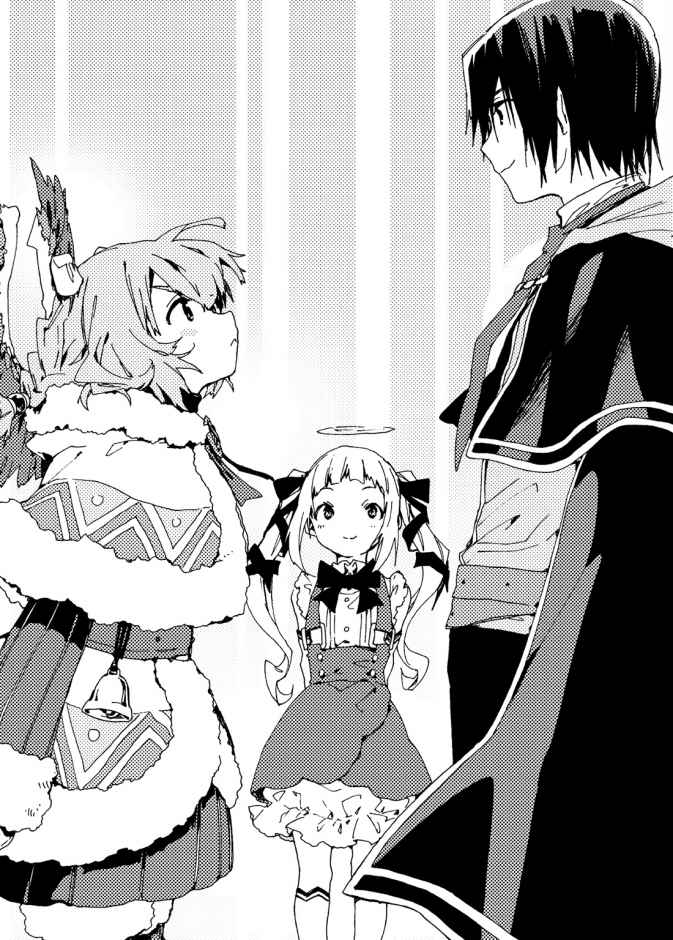
アイリスは満面の笑みになる。
「ならばそなたについていくのじゃっ！ 正妻として、夫のかっこいい姿は近くで見たいからのぅ！」
「決まりだな。てなわけで、俺のルールは二つだ」
翔真はいつものルールをニンファに告げ――アイリスとともにバトルフィールドへ転送されたのであった。
◆
バトルフィールドに三名の参加者を転送したニンファは、ふわふわと宙に浮かびながら幼い声を響かせる。
「それでは、ルールの最終確認をするのです！」
バトルフィールドは緑豊かな草原地帯である。丘 陵 のない草地が地平線の彼方 まで続き、まだらな雲が穏 やかな風に流されている。
「すごいですね！ 緑なんてはじめて見ましたよ！ この草って持って帰れますかね！ みんなに見せたら驚 きますよ！」
翔真の一五メートルほど向こうでは、ボタンがはしゃいでいた。雪山生まれのボタンは興味深げに草原を見まわしている。
これから戦うとは思えないはしゃぎっぷりだ。
そんなボタンに翔真は親近感を抱 いた。いまのボタンは、はじめてバトルフィールドに転送されたときの翔真とよく似ている。
つまり。
「お前、神託遊戯したことねえのか？」
ボタンはびくっと震 えた。
「なにを言ってるんですか！ 私は村一番の魔札使いです！ 神託遊戯くらいやったことあります！」
うわずった声で言い返され、翔真は肩をすくめた。
「そうか。疑って悪かったな。だったら、早いところ戦おうぜ！」
「望むところです！」
翔真とボタンはニンファを見上げる。
ニンファはこくりとうなずき、よく通る幼い声でルール説明を始めた。
「今回新設されたルールは――」
【１】竜胆翔真は神託遊戯にアイリスをつれていく。
【２】竜胆翔真を倒せばボタンの勝ち。
【３】デッキの上限は五枚まで。
「――以上の三つで間 違 いないですね!? 」
翔真とボタンがうなずくと、アイリスが警戒するように耳打ちしてきた。
「翔真よ、油断は禁物じゃぞ。あのボタンとかいう娘、そなたと同じ匂 いがするのじゃ」
「ああ。俺もそう思うぜ。ボタンとは気があうってな」
ボタンには欲が感じられない――神託遊戯に勝利してなにかをしたいと思うのではなく、純 粋 に神託遊戯を楽しんでいるのだ。
好きこそものの上手なれ。これまでの人生、ボタンが神託遊戯を楽しみ続けてきたなら、その実力は警戒して然 るべきだ。
「気をつけるのじゃぞ、翔真。そなたの同類ということは、怖ろしく強いということじゃからな」
「だと嬉しいんだがな」
と、翔真たちがやり取りする一方で、ボタンはぐしぐしと目を擦 っていた。
「むむっ！ 目に変な数字が浮いてます！ 擦っても擦っても消えません！ なんですかこれは！」
「それはライフポイントなのですっ！ ライフポイントがあるおかげで、参加者は怪我 をしないのです！ そして相手のライフポイントを先にゼロにしたほうの勝ちなのです！」
「教えてくれてありがとうございます！ お前は親切ですね！」
「審判として当然のことをしたまでなのですっ！」
ボタンに礼儀正しく礼をされ、ニンファはにっこり笑う。
「......のぅ、翔真よ。あれって、わしらを油断させるための演技じゃろうか？ それとも......」
「お前の言いたいことはわかるぜ。ま、ボタンのあれが演技であれなんであれ、俺がやるべきことはひとつだ」
「わしにかっこいいところを見せてくれるのじゃなっ」
「おう」
うっとりとするアイリスに笑みを向けると、翔真はニンファを見上げた。すると彼女はうなずき、ボタンを見下ろす。
「ボタンさん、準備はいいですか！」
「準備は万 全 です！ 私は村一番の魔札使いですからね！ 早く神託遊戯したいです！」
ボタンがわくわくとした口調で言うと、ニンファはごほんと咳 払 いをして――
「それでは――神託遊戯スタートなのです！」
バトルの邪 魔 にならないように号令とともに姿を消した。その瞬 間 ――
「〈収穫上手な頬袋 〉！」
ボタンが魔札を詠 唱 する。そして魔法陣から出現した小型犬ほどのハムスターを見て、ボタンは勝 ち誇 るように笑う。
「先制攻 撃 のチャンスです！ さあ、竜胆翔真に襲 いかかりなさい！」
だが、ハムスターは動かない。
当然である。なぜなら〈収穫上手な頬袋〉は、『近くに落ちている食べ物を収 穫 する』効果のＥランク魔札であり、神託遊戯の場ではまったく役立たないのだから。
「な、なにをしてるんですか！ 早く戦いなさい！」
ボタンはしゃがみこみ、ばしばしと地面を叩 きつつ、ハムスターに叫びかける。するとハムスターはきょろきょろとあたりを見まわし、ぱぁっと光の粒 子 となって消 滅 した。
「なぜ消えるんですか!? 」
愕 然 とするボタン。
無論、収穫すべき食 糧 がないから消えたのである。これが翔真を油断させるための演技ならたいした役者だが、とてもそうは見えない。
一枚目に〈収穫上手な頬袋〉を詠唱したことは、奇 策 として受け入れることもできるが、翔真を戸惑わせるどころか、自分が戸惑っているのだ。奇策ではなく、戦力として〈収穫上手な頬袋〉を持ちこんだのだろう。
だとすると、残る四枚も同じような魔札である可能性が極 めて高い。ならばこれ以上、神託遊戯を長引かせる必要はない。
「――〈雷帝の裁き 〉！」
翔真は魔札を唱えた――頭上に真紅の魔法陣が展開され、その中心に強 烈 な閃 光 が発生。蓄 積 された光源が稲 妻 として放たれ、ボタンに直 撃 ――轟 音 とともに眩 いばかりの閃光がまき散らされた。
対象に一〇〇〇ダメージを与える稲妻の直撃を受け――ボタンはバトルフィールドから姿を消したのであった。
「......これって、そなたが強すぎただけじゃろうか？」
あっけなく勝負が終わり、アイリスがぽかんとしている。
「持ちこめる魔札は五枚までなんだ。相手が強力な魔札を持ちこんでることは予想できる。その対策をまったくしなかったってこたぁ、ボタンが弱すぎたってことだ」
神託遊戯の実力がないことに加えて、そもそもボタンは強力な魔札に対 抗 できる魔札を持っていなかったのである。
「では、やはり......」
「ああ。ボタンは神託遊戯をしたことがなかった――どころか、ルールすら知らなかっただろうな」
ボタンの言動には、おかしなところがいくつもあった。審 判 精 霊 を見て驚いていたし、ルール決めの際に戸惑っていたし、バトルフィールドを訪れてはしゃいでいたし、ライフポイントの存在を知らなかったし、神託遊戯では役立たない魔札を持ってきたのだから。
「つまりボタンは『神託遊戯』って言葉しか知らなかったんだ」
「ならば村一番の魔札使いというのは、でたらめだったのじゃな」
「さあな。この村に神託遊戯をする奴がいなければ、村一番を自 称 しても嘘 にはならねえだろうぜ」
あれだけ興味を持ちながら、ボタンは神託遊戯の経験がなかったのだ。あの集落には、神託遊戯を嗜 む者はいないのだろう。
「神託遊戯のルールを知らぬということは、当然このあとに待ち受けるあのことも知らぬのじゃよな？」
「だと思うぜ。ま、悪いようにはしないさ」
翔真がそう言ったところで、試合終 了 を告げるニンファの声が草原に響いたのであった。
◆
バトルフィールドから集会堂に戻ってきた途 端 、ボタンがはしゃいだ。
「ほんっとすごかったですねっ！ 大 迫 力 ですよ！ 神託遊戯ってすっごくすっご～っく楽しいですねっ！」
知らない者がこの場を訪れれば、勝者はボタンだと勘違いするだろう。神託遊戯に敗北したとは思えないほどの喜び方だ。
「ところでお前！ どうやって私を攻撃したのですか！」
ボタンが興味深げに訊いてきた。
「攻 撃 魔札っていう、バトルフィールドでしか使えない魔札を使ったんだ」
「攻撃魔札ですか！ 私の〈収穫上手な頬袋〉とは違 うんですか！」
「あれは食糧を集めるための魔札だからな。神託遊戯じゃ役に立たないぜ」
「だけど動物の姿をしてます！ 噛 みつくことだってできますよ！」
「けど、相手にダメージを与えるとは書かれてないだろ」
「攻撃魔札にはダメージを与えると書いてあるんですか！」
口ぶりからして、ボタンは攻撃魔札を持っていないようだ。
攻撃魔札の存在はアストラルでは常識だが、この雪山で生まれ育ったボタンにとっては衝 撃 的 なことらしい。
元奴 隷 の集落ということは神託遊戯の経験者もいるはずだが、ボタンのようにルールを知らず、あえなく敗者になり、奴隷にされてしまったのだろうか。
それとも、あえてボタンになにも教えなかったのだろうか。
「攻撃魔札にはそう書いてあるぜ。たとえば――」
と、翔真は〈雷帝の裁き〉を具現化させ、ボタンに見せてやる。
「俺 はこいつを使って、お前を倒したんだ」
「うわあっ！ かっこいい絵が描かれてますねっ！ しかも威 力 一〇〇〇って！ それがあればぜったいに勝つじゃないですか！ そんな魔札を持ってるなんてすごいです！」
ボタンが尊敬の眼 差 しを向けてきた。
「ぜったいに勝てるってわけじゃないぜ。攻撃を防 御 する魔札もあるし、跳 ね返す魔札もあるし、打ち消す魔札もあるからな」
「そんなものがあるんですか！」
「おう。相手のルールを聞いて、相手の戦略を予測して、戦術を練って、デッキを組む。それが神託遊戯だ」
「神託遊戯は奥 深 いですね！ もっと知りたいです！ 教えてください！」
キラキラと目を輝かせるボタン。彼 女 が神託遊戯に対して並々ならぬ興味を持っていることは明らかだ。同じく神託遊戯を愛する身として、いくらでも話してあげたくなる。
が、その前にやるべきことがある。
「あのぅ、そろそろいいです？」
ニンファがおずおずと切り出した。
翔真がうなずくと、ニンファは幼い声を張り上げる。
「さて、ボタンさんはルールをひとつ設けたのです！ よって翔真さんは、ボタンさんにひとつだけ命令を下せるのです！」
ボタンがぎょっと目を見開いた。
「命令ですか!? 」
「そうなのです！ 神託遊戯の勝者は、敗者に絶対遵守の命令を聞かせることができるのです！」
ボタンはハッとする。
「そ、それってまさか......奴隷にできたりするんですか!? 」
「奴隷にもできるのです！」
ボタンはがくがくと膝 を震わせた。
くりっとした瞳 に、じわじわと涙 が浮かんでくる。
「やはりそなた、神託遊戯に負けたらどうなるかを知らなかったのじゃな？」
ボタンはこくこくうなずいた。瞳から、ぽろっと涙がこぼれる。
「し、知りませんでした！ 私......私、とんでもないことをしてしまいましたあああああああああああああ！」
ボタンはへなへなと座りこみ、号 泣 した。泣きじゃくるボタンを前にして、アイリスがおろおろする。
「お、落ち着くのじゃ、ボタンよ。翔真はべつに――」
「ごべんなさいいいいいいいいいいいいいいいいいいいいいいいいいいいいいい！」
泣き声が響き渡 ったそのとき、扉 が開かれた。集会堂に冷風がなだれこみ、アイリスがぶるりと震える。集会堂は魔札によって暖められているようだが――バトルフィールドに転送されたことで、身に纏 っていた魔札の効果がリセットされてしまったのだ。
「こ、これはいったい何事ですか！ 皆 さんはどこに消えたのですか！ それにボタン、なぜ泣いているのですか！」
集会堂にやってきた老 婆 は驚きの声を上げた。頭に牛のようなツノを持つ老婆は戸惑うようにこの場の面々の顔を見まわし、ニンファを目に留めた瞬間、すべてを察したように顔面蒼 白 になる。
「あ、頭に輪っか！ まさか審判精霊!? ま、まさかボタン！ お前、神託遊戯をしたのですか!? 」
「しちゃいましたあああああああああああああああああああああああああああああ！」
「な、なんということを......」
老婆はくずおれるように膝をつき、翔真に懇願するような眼差しを向けてくる。
「あ、あなた様がボタンと神託遊戯をしたのですね？ で、でしたら、どうか命令は私にしてください！」
「嫌 だああああああああああああああああああああああああああ！ ネリネばあちゃんが奴隷になるのは嫌だああああああああああああああああああああああ！」
「ど、どうかお慈 悲 を！ このネリネ、見た目は老いてますが若い者には負けません！ 六〇歳にしてボタン以上に体力があります！ まだまだ働き盛りです！」
「ネリネばあちゃんが奴隷になるのは嫌だああああああああああああああああああ！」
「どうか私を奴隷にしてください！ どうかボタンは許してやってください！ どうか、どうかお慈悲を......！」
「いや、あんたを奴隷にする気はねえよ」
「そ、そこをなんとかお願いします！ 私を奴隷にしてくださるのでしたら、ここにある三〇〇人分の食糧をお渡しします！」
三〇〇人分の食糧を普 段 から持ち歩いているとは思えないし、ここにいたダリアたちに食糧を持ってきたところ、この状 況 に出くわしたのだろう。
「食糧はいらねえ。俺の魔導指輪 には食糧が大量にあるし、愛妻弁当もあるからな」
翔真が魔導指輪をかざして見せると、ネリネが目を瞬 かせた。信じられないものを見るように指輪を見つめ、声を震わせる。
「そ、それは......まさか虹 色 の魔導指輪ですか!? で、では、あなた様が敦盛様の仰 っていた......」
「敦盛じいちゃんを知ってるのか？」
「じいちゃんですと!? 」
「おう。俺は竜胆翔真――竜胆敦盛の孫だ」
名乗った途端、ネリネが涙を流した。じわじわと顔に喜びを滲 ませていく。それが悲 涙 ではなく感涙であることは一 目 瞭 然 だ。
「お、お孫様ということは......敦盛様は、愛する奥 様 のもとへ無事にお帰りになられたのですね......幸せになられたのですね......」
どうやらネリネは、敦盛と直接会ったことがあるようだ。ボタンが奴隷にされることを過 剰 に怖 れているし、ネリネは敦盛に解放された元奴隷なのだろう。
「敦盛じいちゃんの孫の俺が、あんたらを奴隷にすると思うか？」
翔真が真 剣 な眼差しで問いかけると、ネリネはふるふると首を振った。
「い、いいえ。敦盛様のお孫様が、そのようなことをするとは思えません」
翔真はにこりと笑う。
「だろ？ だから、そろそろ泣くのをやめねえか？ ボタンに命令したいことは、なにもねえんだからさ」
「ほ、ほんと......ひっく......ですか！」
「おう。俺は神託遊戯さえできればそれで満足だからな。そんなわけで、ニンファはもう帰っていいぜ。審判ご苦労だったな」
「はいなのです！ ではでは、さよならなのです～！」
明るい笑 顔 を振りまき、ニンファは魔法陣に包まれて精霊本部へと帰っていった。
ネリネが深々と頭を下げてくる。
「このたびは孫 娘 がご迷惑をおかけしまして、たいへん申し訳ありませんでした......！ ほら、お前も謝るんですよ！」
「ごべんなさい！」
涙でぐちゃぐちゃになった顔を向けられ、翔真は優 しくほほ笑んだ。
「気にするな。神託遊戯ができて楽しかったしな。むしろ挑 んでくれて感謝してるぜ」
「わ、私も......ひっく、楽しかったです！ ま、また......ひっく、したいです！」
顔を明るくさせるボタンに、ネリネが目を剥 いた。
「なにを言ってるんですかボタン！ 神託遊戯は二度としたらいけません！」
「で、でも......わ、私も英雄になりたいんです！ 神託遊戯で敦盛様みたいな英雄になりたいんです！」
ボタンは涙ながらに叫んだ。
この集落に住まう者は敦盛を英雄として扱 っているのだ。神託遊戯で奴隷たちを救った敦盛の英 雄 譚 を聞き、その活 躍 に憧 れ、神託遊戯をしてみたくなったのだろう。
が、奴隷だった過去を持つネリネは、神託遊戯を過剰に怖れている。ボタンがこれ以上神託遊戯に興味を持たないように神託遊戯に関する情報を口にしなかったというわけだ。
「いまここで説教したいところですが、翔真様にお見苦しいところをお見せするわけにはいきません！ とにかくいまは翔真様にお礼を言いなさい！ 奴隷にしないでくださってありがとうございましたと言いなさい！」
「奴隷にしないでくださってありがとうございました！」
「気にするな。それより、ひとつ訊きたいことがあるんだ。俺はじいちゃんの宝を探してここに来たんだが......じいちゃんからなにか聞いてないか？」
ボタンは『村一番の魔札使いである私を倒 すことが宝を渡す条件』と言ったが、あれは神託遊戯したいがためについた嘘だろう。
そもそも宝を渡す条件は、宝の地図を手にした時点で満たしているのだから。
「知っております！ 敦盛様は私を......私などを信用してくださり、宝を預けてくださいましたから！ 虹色の魔導指輪を持つ者が現れたら宝をお渡ししろと、そう言付けられております！」
当時を思い出すように語ると、ネリネの手元に青白く輝くカードが現れた。魔導指輪に保管されていた魔札を、ネリネは翔真に差し出す。
「これが敦盛様の宝です......！」
「これが......」
魔札には木箱が描 かれていた。中身がなにかはわからないが、テキストには説明書きが記されている。
「――『貴 殿 に嫁がいる場合、中身は見ないほうがいい。本当に愛しあっているのなら、一 緒 に中身を確認することをお勧 めする』か。なら問題ねえな。俺たちは、愛しあってるわけだしさ」
「じゃなっ。さっそく中身を確かめるのじゃ！」
「確認は俺の可愛 い嫁たちが揃 ってからにするぜ。一緒に確認しろって書いてあるしな」
「なにが入っておるか楽しみじゃのぅ！」
「じいちゃんの遺した宝なんだ。とんでもない宝に違いないぜ！」
期待を膨 らませつつ、翔真は魔導指輪に宝の魔札を保管した。
「さて、それじゃ帰るか」
「ま、待ってほしいです！」
ボタンが慌 てて言った。
ぐしぐしと涙を拭 い、真剣な眼差しを向けてくる。
「私もつれてってほしいです！」
「なにを言ってるんですか！ 村の外へ出てはだめだと言ってるじゃないですか！」
ネリネに叱 られ、ボタンは言い返す。
「嫌です！ 私、外の世界で暮らしたいです！ もっと魔札のことを知りたいんです！ そしていつの日か神託遊戯で勝てるようになるんです！」
あんなに命令を怖 がっていたのに、神託遊戯への興味は欠片 も失っていなかった。
元々は英雄に憧れて神託遊戯に興味を持ったのだろうが――実際に翔真と戦ったことで、神託遊戯が大好きになったのだろう。
「神託遊戯なんてさせません！ さあ、お家 に帰りますよ！」
「嫌です！ 私、外で暮らすんです！ ネリネばあちゃんは意地悪です！」
「お前のために言ってるんですよ！」
「全然私のためになってないです！」
「落ち着け、ボタン」
目の前で口論を始められ、翔真は仲 裁 する。
「お前のばあちゃんが、お前のためを想 ってるってのは本当だ」
敦盛に救われるまで雪山の外で暮らしていたネリネは、混血種がどういう扱いを受けているのか知っているのだ。
この村ならボタンが蔑 まれる怖れはないため、ネリネは孫を集落の外に出したくないのである。
「で、でも私、外に出てみたいです......」
「わかってる。だから、俺の自治区で暮らすといいぜ」
「ほ、ほんとですか！ いいんですか！」
翔真がうなずくと、ネリネがおずおずと言う。
「で、ですが翔真様。ボタンは、その......」
ネリネは曖 昧 に言葉を濁 した。ボタンに混血種がどういう扱いを受けているかは教えていないのだ。この集落にいる限り、迫 害 されることはないのだから。
「安心しろ。俺の自治区は異種族共存――って言えば、わかるだろ？」
「そ、それは本当ですか？ この村のような場所が、ほかにもあるのですか？」
「あるぜ。いま見せてやるよ」
翔真はあらためて〈千里眼〉を使うと、さらに『詠唱者の見ている光景を映す』効果の〈視界の映し鏡 〉を詠唱した。
「ここが俺の自治区だ」
クヌル平野の光景が映し出された手鏡を見せると、ネリネたちは息を呑 んだ。ネリネの顔から不安の色が消えていき、ボタンの顔に笑 みが広がっていく。
「私、そこに住みたいです！ こんなにたくさんのひとがいれば、毎日神託遊戯できますからね！」
「残念ながら、それは難しいぜ。そもそも神託遊戯ってのは揉 め事 を解決するためのものだし、こいつらは毎日仕事で忙 しいからな」
「じゃ、じゃあ、神託遊戯はできないんですか？」
「そんなことねえさ。実は俺も神託遊戯の相手探しで困っててな。ボタンさえよければ、俺が相手になってやるぜ。もちろん、すぐにはしないがな」
ボタンは興味を示したように見つめてきた。
「ど、どうすれば神託遊戯してくれますか！ 私、また神託遊戯したいです！」
「そのためには神託遊戯の勉強をして、あとはとにかく金を貯 めて魔札を集めろ」
ボタンはこくこくうなずく。
「私、いっぱい勉強します！ だから......そうだ！ 私、お前の弟 子 になりたいです！」
「こ、こらボタン！ 翔真様をお前呼ばわりとは何事ですか！ それに弟子なんて......！ これ以上翔真様に迷惑をかけてはいけません！」
「で、でも私、弟子になりたいです！」
ボタンが真剣な眼差しでお願いしてくる。
「いいぜ、弟子にしてやるよ」
翔真がにこやかに告げると、ボタンはぱあっと顔を輝 かせた。
「いいんですか！ 嬉 しいです！ ありがとうございます、師 匠 ！」
嬉しそうに声を弾 ませるボタンのとなりで、ネリネが不安げな顔をする。
「よ、よろしいのですか？」
「おう。俺が面 倒 を見たほうがあんたも安心できるだろうし、俺としても強い魔札使いと神託遊戯できれば万 々 歳 だからな」
翔真は神託遊戯を愛している。どんな相手だろうと楽しめるが、相手が強ければ最高に幸せだ。
が、翔真はこれまで自分を苦しめるほどの強敵と出会ったことがない。キルシュでさえ、翔真には一 撃 もダメージを与 えることができなかったのだ。
強敵がいないなら、自分の手で育てるしかないのである。
「師匠がこう言ってるんです！ 村を出てもいいですよね！」
ボタンに期待の眼差しを向けられ、ネリネは諦 めたようにため息をついた。
「いいでしょう。ただし、翔真様に迷惑をかけてはいけませんよ！」
「迷惑なんてかけません！ ぜったい良い子にしますよ！」
そう言って、ボタンは嬉しそうに跳 びはねた。
「んじゃ、カンナの弁当を食って帰るとするか」
するとアイリスが、名残 惜 しそうに言う。
「わ、わしはまだ帰りたくないのじゃ。のぅ、翔真よ。帰るのは明日でもよいのではないかのぅ。今日はのんびりふたりきりで過ごすのも悪くないと思うのじゃが......」
アイリスは翔真とのデートを続けたいようだ。
今日はほかにやることがないし、キルシュたちにはあらかじめ食糧の魔札を渡している。仕事が終わる頃 に連 絡 を入れれば、ルメリアも心配はしないだろう。
「いいぜ。たまにはふたりきりで過ごすってのも悪くないしな」
「うむっ！ みんなと一緒なのも賑 やかで好きじゃが、そなたとふたりきりで過ごすのも大好きなのじゃ！」
お泊 まりが決まり、アイリスはうきうきしている。
それをほほ笑ましく眺 め、翔真はボタンたちに告げた。
「そんなわけで俺たちは雪山に家を建てるから、ボタンは今日一日ばあちゃんとのんびり過ごせよな」
「わかりました！ 今日はいつも以上にネリネばあちゃんのお手伝いをしますよ！」
これからの楽しい生活に思いを馳 せているのだろう。ボタンは嬉しげに声を弾ませるのだった。
《 第三幕 ティナとの約束 》
プリィーナ山を訪 れて一夜が過ぎた。
「あぁ、気持ちいいのじゃ......」
その日の朝。翔 真 のとなりで、アイリスはとろんとした顔をしていた。だらしなく口を半開きにして、やる気を根こそぎ奪 われたように頬 を弛 緩 させている。
アイリスは、一糸まとわぬ姿であった。
「そなたはどうじゃ？ 気持ちよいじゃろうか？」
「おう。最高に気持ちいいぜ」
集会堂のそばに屋 敷 を建て、その最上階にある見晴らしのいい浴室でまったりしているところだ。
外の景色が一望できるよう浴室はガラス張りだが、窓は曇 りきっているためなにも見ることはできない。
「翔真よ。外はどうなっておるのじゃろうな？」
「ちょっと待ってろ。――〈病的な曇り好き 〉！」
翔真が魔札 を詠唱すると、窓辺にてのひらサイズの妖 精 が現れた。半 透 明 のハネを持つ妖精は曇りきったガラスを見て「ぴぃ！」とご馳 走 を前にしたかのように歓 喜 するような声を上げ、でろんと長い舌を出 す。
その舌で、ぺろぺろと曇りを舐 め取っていき――湯気で曇った窓が拭 かれ、外の景色が露 わになった。
がたがたと揺 れる窓の外では、吹雪 が舞 っていた。
昨日よりは弱めだが、あいかわらず凍 えるような景色だ。アイリスは寒気を感じたのか、暖を取るように翔真に密着すると、甘 えるようにささやいてきた。
「わし、そなたと離 れたくないのじゃ......。ずっとこうしていたいのじゃ......」
「のぼせちまうぞ」
「もうのぼせそうなのじゃ......」
翔真の肩 にふっくらとした胸を押 しつけるアイリス。谷間で肩を挟 み、誘 惑 するように擦りつけてくる。
ほかに嫁 がいないため、アイリスはやりたい放題であった。
「運動したら疲 れたのじゃ......」
「なら、のんびりして疲れを落とさないとな」
「うむっ」
やりたい放題できて満足したのだろう。アイリスは胸を押しつけるのをやめ、ぼんやりとした眼で天 井 を眺める。
「ふぅ......。今日はどうするのじゃ？ もう一泊 くらいしてもよいと思うのじゃが......」
「今日は嫁トーナメントの打ち合わせだろ」
「そうじゃった。幸せすぎて、すっかり忘れておったのじゃ。トーナメントが終わって、結 婚 式 が終わったら、すぐに新 婚 旅行したいのぅ。そして......できればその日に子作りをしたいのじゃ」
アイリスが熱っぽい眼差しで見つめてくる。
「翔真よ。わしと赤ちゃんを作ってくれるか？」
「おう。いいぜ」
アイリスはぱあっと顔を輝かせる。
「いざそのときが訪れると急に恥 ずかしくなるかもしれぬから、いまのうちに練習するのじゃっ」
アイリスが正面にまわりこむ。翔真のあぐらの上にお尻 をつけ、抱きつくような体勢になった。
お互 いに裸 のまま見つめあうと、アイリスの顔がじわじわと赤く染まっていく。
「とりあえず密着してみたのじゃが......練習って、どこまでが練習なのじゃろうな？」
「抱 きしめるのは練習の範 疇 なんじゃねえか？」
「で、では抱きしめてほしいのじゃ」
「お安い御 用 だ」
抱きしめてやると、柔 らかな乳 房 がぐにっと形を歪 めるように押し潰 され、熱を帯びた下腹部が翔真の身体 にぐっと押し当 てられる。
その途端、アイリスがこれまで見せたことのない表情を見せてきた。
「翔真ぁ......わし、もう我 慢 できぬのじゃぁ......」
半開きの濡 れた瞳でじぃっと見つめ、甘い吐 息 をもらすアイリス。小さな唇 をすぼめ、おねだりするように物 欲 しげな表情をする。
そのときだ。
『起きているかね？』
翔真の脳内にカトレアの声が響 いた。
「カトレアから連絡が入ったぜ」
翔真が告げた瞬間、アイリスは夢から醒 めたようにハッとした。慌てて窓の外を見る。
「ま、まさか見られておったのじゃろうか？ カトレアよ！ わし、違うのじゃ......！ べ、べつに抜 け駆 けするつもりはなかったのじゃ！」
取り乱しつつ弁明を始めるアイリスに、翔真は苦 笑 する。
「安心しろ。見られてるわけじゃねえし、キスはしてねえからな。怒 られるようなことはしてないぜ」
「じゃ、じゃなっ。危ないところだったのじゃ......。正妻として、約束を違 えるわけにはいかぬからのぅ。結婚式までは我慢、我慢じゃ！」
アイリスが落ち着いたところで、翔真はカトレアに返事をする。
「――起きてるぜ。どうした？」
言葉にせずとも返事はできるが、アイリスが興味深げに見ているため、声に出すことにしたのだ。
『返事まで間があったが......やはり寝 ていたのかね？』
「起きてたぜ。いまはアイリスと風 呂 に入ってるところだ」
『あの女、また抜け駆けしたのかね......』
カトレアは嫉 妬 している様子だ。
「安心しろ。カトレアとも一緒に入ってやるからな」
『う、うむ。楽しみにしているのだよ......きみさえよければ、吾 輩 を好きにしてくれても構わないのでね』
「好きにってのは、具体的にどういうことだ？」
『そ、それは......きみの好きにという意味なのだよ。きみがやりたいことを、吾輩は受け入れるのだよ......そ、その結果、子宝に恵 まれたら、吾輩は嬉しいのだがね......』
カトレアは消え入りそうな声で言う。いまごろは恥ずかしさに身もだえしているだろう。
「翔真よ。わしの耳には、カトレアを口説いておるように聞こえるのじゃが......」
アイリスがじっとりと見つめてきた。拗 ねている様子だ。
長話をすればいずれのぼせてしまうだろうし、そろそろ本題に入るとしよう。
「で、どうしたんだ？」
翔真が促 すと、カトレアは本題に入った。
『ダリア姉様を保護してくれて、本当に感謝するのだよ』
「気にするな。美女を保護するのは当然のことだからな」
『......吾輩とどっちが可愛いかね？』
探 りを入れるように問われ、翔真は苦笑する。
「カトレアに決まってんだろ」
『嬉しいのだよ。でも......昔のダリア姉様を見ていれば、そんなことは言えないのだよ』
「昔はもっと美女だったのか？」
『美しすぎて、嫉 妬 心 すら湧 いてこなかったのだよ。......ダリア姉様は、老 けてしまっていたのだよ』
「あれでか？」
せいぜい二〇代後半ほどの若々しい姿をしていたが......疲 労 が溜 まっているのは確かだ。肌 は青ざめ、頬はこけ、顔色は悪く、目の下には大きなくまができていたのだから。
「おそらく精神的疲労で、老けたのだと思うのだよ」
「そっか。なら、あまり説教はしてやるなよな」
ダリアは全権代理者 でありながら失 踪 したのだ。その後処理に追われたカトレアにしてみれば何日説教しても足りないだろうが――ダリアは長いこと奴隷生活を強 いられてきたのだ。もう充 分 すぎるほど罰 は受けている。
『わかっているのだよ。最初は説教する気満々だったのだがね。ダリア姉様の顔を見て、そんな気持ちは湧いてこなかったのだよ。いまはもう、とにかく無事だったことが嬉しいのだよ。......まあ、二度と失踪しないように再三注意しておいたがね』
「そいつはご苦労だったな。で、ダリアと話したってことは、娘 の話も聞いたのか？」
『うむ。実は、その件できみに連絡をしたのだよ』
「娘の捜 索 を手伝ってくれってんなら、もちろん引き受けるぜ。俺の親 戚 みたいなものだからな」
『それなのだが......親戚ではなく、きみの嫁かもしれないのだよ』
翔真は訝 しげに眉 をひそめた。
「嫁だと？」
翔真の嫁は――アイリス、ミスト、スノウ、シャーロット、ジュナ、リリー、ミモザ、カトレア、ルメリア、カンナの一〇名だ。そのなかでダリアの娘としての特 徴 を持つ者は、ひとりしかいない。
『ダリア姉様の娘は、ルメリアというらしくてね。飛翼門 とのあいだに授 かった娘らしく――特徴を聞いたところ、きみの嫁のルメリアに酷 似 しているのだよ』
「なるほどね」
実際、ダリアはルメリアに似ていた。おまけにルメリア自身も、母親と生き別れているのだ。
もちろん確 認 はするが、ダリアとルメリアは母 子 関係にある可能性が極 めて高い。
『吾輩の知っているルメリアで間 違 いないと思うのだが......一応、直接確かめさせたいと思ってね。きみに連絡をしたというわけなのだよ』
「わかった。んじゃ、俺のほうからそっちに行くから、準備が整ったらまた連絡するぜ」
翔真はそう告げると、カトレアとの連絡を終えた。
「なにを話しておったのじゃ？ 娘がどうとか、嫁がどうとか言っておったが......」
「実は、ダリアの娘の正体が、ルメリアかもしれねえんだ」
「な、なんじゃと!? じゃ、じゃが......言われてみれば似ておったのぅ。ルメリアも母と生き別れたと言っておったし......」
「とにかく今日は城に帰るぞ」
「わかったのじゃ。では、あと一〇〇秒数えたら上がるのじゃっ」
「んじゃ、いまのうちにボタンに連絡するぜ」
翔真は〈碧落からの語りかけ 〉でボタンに連絡を取る。
「ボタン。俺だ。起きてるか？」
『うわあっ！ 師匠の声が聞こえます！ 近くにいるんですか！』
「落ち着け。声を送る魔札で連絡を取ってるだけだ」
『魔札ですか！ いきなり師匠の声がしたからびっくりしました！ ネリネばあちゃんもびっくりしてます！』
それはボタンの声に驚 いただけだろう。
「とにかくいまのうちに準備しとけ。もうちょっとしたら迎 えに行くからな」
『わかりました！ 師匠を待ってます！』
ボタンは大声で返事をする。彼女を弟子にして最初に教えるべきことは、〈碧落からの語りかけ〉を使うときくらいは小さめのトーンでしゃべらせることかもしれない。
「さて、もう上がるぜ」
翔真が腰 を浮 かすと、アイリスは名残惜しそうに見つめてきた。
「最後に、わしを思いきり抱きしめてほしいのじゃ」
そう言って立ち上がったアイリスを、翔真は強めに抱きしめる。
「痛くねえか？」
「これくらい強くされたほうが抱きしめられてる感じがして好きなのじゃ。あぁ、実体があるって幸せじゃのぅ......」
とろんとした顔のアイリスを見ていると、翔真のほうまで幸せになってくるのであった。
◆
宝探しデートを終えてクヌル平野の居城に戻 ってきた翔真は、窓の外を見て大はしゃぎするボタンを静かにさせると、〈碧落からの語りかけ〉でルメリアに連絡を取った。
「俺 だ。いま城に戻ってきたんだが、ルメリアはいまどこにいるんだ？」
『お帰りなさいませ、翔真様。私は裏庭に来ています』
「裏庭に？ てことは、キルシュも一緒にいるのか？」
『はい。キルシュ様とミリア様にガーデニングの仕方を教えてほしいと頼 まれましたので、一緒に裏庭へとやってきました。まずは草むしりの必要がありそうです』
「ルメリアは草むしりを手伝ってるのか？」
『いえ。手伝うと申し出たのですが、断られてしまいました』
自分たちの力でやり遂 げなければ罪 滅 ぼしにはならない――。キルシュとミリアはそう考えたのだろう。
「そっか。なら、俺の部屋に来てくれ」
『かしこまりました』
そう返事をしてほどなく、ルメリアが部屋にやってきた。
「お待たせしました、翔真様。アイリス様もお帰りなさいませ。それと......」
ルメリアがちらっとボタンを見る。
「こいつはボタン――俺の弟子だ」
「はじめまして、ボタン様。私はルメリアと申します」
「ボタンです！ よろしくお願いします！」
深々とお辞 儀 をするボタンに、ルメリアはさらに頭を下げた。
ふたりが頭を上げたところで、翔真はルメリアに告げる。
「実は雪山で保護した元奴 隷 のなかに、カトレアの姉のダリアって女がいてな。そいつがルメリアの母親かもしれねえんだ」
「......え」
単刀直入に告げると、ルメリアの顔に動 揺 の色が広がっていく。無理からぬ話である。母親が保護されただけでも驚くに値 するのに、それが知り合いの姉だったのだから。
「カトレア様のお姉様が、私のお母様なのですか......？」
「確定したわけじゃねえがな。それを確かめるために、カトレアの屋敷に行きたいんだが......お前の母親って、ダリアって名前だったのか？」
確認を取ると、ルメリアは静かに首を振 る。
「お母様の顔は、うっすらと覚えているのですが......名前までは......」
名前を覚えていないということは、ルメリアの近くにダリアの名を呼ぶ者がいなかったということになる。
つまり、父親とは離 れ離 れに暮らしていたというわけだ。
「そっか。とにかく、ダリアが一度会ってお前と話したいそうだ。ルメリアは......母親に会いたいか？」
翔真と出会う以前のことは、ルメリアにとってもトラウマだろう。ダリアに昔のことを質問されれば、トラウマが蘇 るかもしれないのだ。ルメリアが会いたくないと言うのなら、今回の話はなかったことにするつもりだった。
だが、
「はい。私もお会いしたいです」
昔のことはトラウマでも、母と過ごした日々は幸せだったのだろう。ルメリアが再会を望み、翔真は微 笑 した。
「んじゃ、俺とルメリアはカトレアのところに行ってくるからな」
「師匠！ 私はどうすればいいですか！」
「アイリスとおしゃべりしてろ。ちなみにアイリスは、俺と同じくらい魔札に詳 しいぜ」
なにせアイリスは魔札の生みの親なのだから――とは言わないでおく。アイリスが最高神であることは、嫁たちにも秘密にしているのだから。
「ほんとですか！ アイリスさん、私とおしゃべりしてほしいです！」
「やれやれ。しょうがないのぅ」
ボタンに慕 われ、アイリスはまんざらでもない様子だ。そんなふたりを部屋に残して、翔真はルメリアとともに瞬間移動 でカトレアの屋敷へと向かうのだった。
カトレアの屋敷はガンドラ川を隔 てた対岸にあった。
代々の全権代理者が住まう屋敷なのだろう。歴史を感じる古い屋敷で、室内には古びた木の香 りがほんのりと漂 っている。心が安まる香りの漂うカトレアの寝 室 からは、陽光を受けて美しく輝くガンドラ川を眺めることができた。
そんな景色には目もくれず、ダリアはまっすぐにルメリアを見つめている。疲労が深く刻まれたその顔に、じわじわと明るさが広がっていく。
「......お母様？」
ルメリアが自信なげにたずねると、ダリアの瞳 から涙 がこぼれた。
「ルメリア！」
歓喜の声を響かせ、ルメリアに抱きつく。
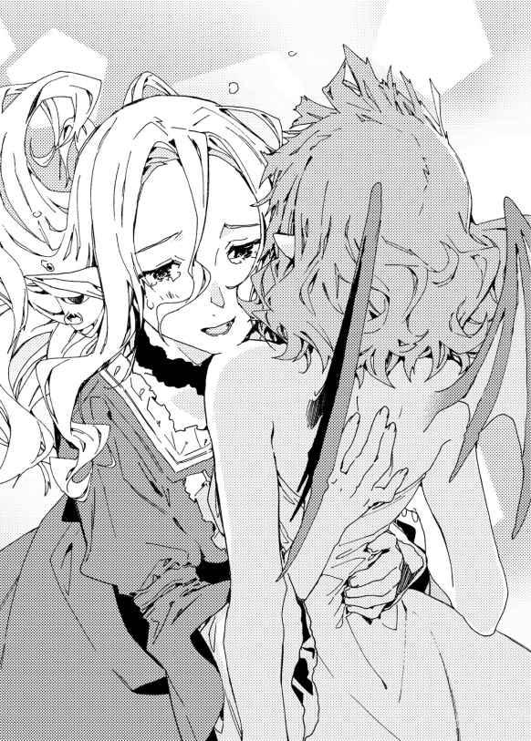
「よかった！ 生きていたのね！」
「ルメリアで間違いないのか？」
「もちろんです。愛する娘を、見 間 違 えるわけがありません。あぁ、私の可愛いルメリア......ほんとうに、生きててよかった......」
一夜明け、ダリアは昨日とは違う装いだった。薄 っぺらい病衣ではなく、胸 元 から肩にかけてのフリルが特 徴 的 な衣装に身を包 んでいる。
母の腕 に強く抱かれ、柔らかそうな服に顔を包まれ、ルメリアはおとなしくしている。翔真のもとで暮らすようになり、感情が豊かになってきたが――曖昧な記 憶 しか残されていないため、なかなか母と再会したという実感が湧いてこないのだろう。
「お母様？ 私はどうして、お母様と離れ離れになってしまったのですか......？」
「あぁ、ルメリア。なにも覚えてないのね。無理もないわ。あんなに幼かったんですもの。あなたは私を助けるために、キルシュに言われるがまま、奴隷の契 約 書 にサインをしたのですよ」
となると、ルメリアを産んだのは奴隷になったあとということだ。
出産後に奴隷にされた可能性も考 慮 していたが......奴隷としてルメリアを産んだということは、ルメリアの父も奴隷だったはずだ。
「俺が解放したなかに、ルメリアの親父 はいなかったのか？」
「いいえ。彼 は、私がルメリアを産んですぐに病気で......。だから、私にはルメリアしかいなかったのです。ルメリアさえいてくれたら、私は幸せに過ごすことができました......。なのにキルシュが......あなたを奴隷にして、売 り払 って......」
ダリアに個人的な恨 みがあったわけではないだろう。キルシュはアイリスだけが幸せな人生を送っていることが許せず、権力闘 争 を引き起こした。アイリスから笑顔を奪い取 るため、全人類を殺し尽 くそうと企 てたのだ。
奴隷でありながら幸せそうなダリアが許せず、娘と引 き離したのだろう。
もっとも、キルシュはルメリアのことを覚えていないようだったし、当時のキルシュにとって他人の幸せを潰すのは日常的なことで、特段記憶に残るようなことではなかったのだろうが。
「奴隷にされて、つらかったでしょう？ ひどいことはされませんでしたか？」
ダリアに気 遣 うような眼 差 しを向けられ、ルメリアは首を振った。そして、愛 しそうに翔真を見つめる。
「翔真様が、私を救ってくださいました。私などを娶 ってくださいました。つらいことはありましたが......私は、とても幸せです」
ルメリアはほほ笑みを浮かべて言った。
幸せそうに振る舞う娘を見て、ダリアは目を細めた。
「翔真さんが、ルメリアを幸せにしてくださったのですね......」
「俺もルメリアには幸せにしてもらってるけどな。もちろん結 婚 した以上、これから先も幸せにすると約束するぜ。だから、俺とルメリアの結婚を祝福してくれるか？」
「もちろんです。あなたになら、安心して娘を任せられます。キルシュが生きていても、あなたがいてくだされば、ルメリアに手出しはできませんから......」
ダリアはキルシュに怯 えている。トラウマを刺 激 するのは申し訳ないが、これから先もキルシュの影 に怯える人生を歩ませるのは心苦しい――ならば、いまのうちにキルシュの件について話しておいたほうがいいだろう。
「ダリアは、ルメリアのそばで暮らしたいと思ってるか？」
ダリアはうなずく。
「新婚生活を邪 魔 するわけにはいきませんが......たまにルメリアの顔を見たいです」
「ルメリアはどうだ？」
「翔真様さえよろしければ、お母様とお話ししたいです。それに......翔真様の赤ちゃんを授かったら、たくさんのことをお母様にお聞きしたいです。私は赤ちゃんを育てたことがありませんから......」
「俺としても、子育ての経験者が近くにいるのは心強いぜ。てなわけで、ダリアには城の近くの家を譲 ってやるよ。そしたら、いつでも好きなときに会えるだろ？ カトレアも、それでいいか？」
カトレアは、ダリアとの再会を望んでいたのだ。同じ家で過ごしたいと思っているかもしれない。
「吾輩は、ダリア姉様が幸せならそれで構わないのだが......きみにそこまでさせるのは、申し訳なく思うのだよ」
「俺のことは気にするな。ダリアは俺の義母でもあるしな。これくらいのことは喜んでするぜ」
微笑を浮かべてそう言うと、翔真は真 剣 な眼差しでダリアを見た。
「俺の自治区 に引っ越 す前に、ひとつだけ言っておかなきゃならねえことがある。俺は、キルシュを城にかくまってるんだ」
幸せそうだったダリアの顔が、瞬 く間 に青ざめていく。
「キルシュが、城に......？ で、では、ルメリアのそばにいるのですか？」
「ああ。ルメリアとキルシュは仲良くしてるぜ」
「仲良く......？」
キルシュが誰 かと仲良くする姿など思 い浮かばないのだろう。ダリアは困 惑 するように、ルメリアの顔を見る。
ルメリアは安心感を促すように、穏 やかな口調で言った。
「キルシュ様は、昔は怖い方だったのかもしれません。ですが、いまは違います。とてもお優 しい笑みを浮かべる方です」
「キルシュが、ですか......？」
信じられないといった様子のダリアに、翔真はうなずいてみせた。
「何年後か、何十年後かはわからねえが、いつかキルシュのほうから謝罪に訪れるだろうから――そのときは真剣にキルシュの話を聞いてやってくれ。その結果、許すかどうかは、ダリアの判断に委 ねるがな。とにかく、いまのキルシュに害はないってことだけは信じてくれ」
真剣な口調で告げると、ダリアは静かにうなずいた。
「翔真さんとルメリアがそう言うのでしたら、私はそれを信じます」
「そいつはよかった。んじゃ、俺たちはそろそろ城に戻るからな。家のことはまた後日に連絡するぜ」
「お世話になります。ところで、その......おふたりの結婚式には、私も参列してよいのでしょうか？」
「おう。ルメリアの結婚式はもちろん、カトレアとの結婚式にも来てくれると嬉しいぜ」
「はいっ。ルメリアとカトレアの結婚式が見られるなんて......夢みたいです」
ダリアの顔に明るさが広がっていく。
しばらくカトレアのもとで過ごせば、やがては顔に深く刻まれた疲労も消えるだろう。
クヌル平野への引っ越しを促すのは、それ以降にするとしよう。
「吾輩も、これから翔真の城に行くのでね。ダリア姉様はもう一 眠 りするといいのだよ。昨日はあまり眠れなかったようなのでね」
きっとルメリアのことが気がかりだったのだろう。元気そうな娘を見ることができたし、今日は安 眠 できるはずだ。
「また会える日を待ってます」
笑 顔 のダリアに見送られ、翔真たちはクヌル平野の居城へ瞬間移動した。そして部屋に戻ってきた瞬間――
「あっ！ 翔真お兄ちゃんが帰ってきたの！」
賑やかな声に出 迎 えられた。
真っ先に翔真に気づいたスノウが、お腹 に抱きついてくる。そのうしろにはお目付役のシャロンのほか、シャーロットとミストがいた。
アイリスはボタンに質問攻 めにされたのか、ぐったりとソファに沈 んでいる。
「聞いたわよ。あんた、この娘 を弟子にしたんですってね。弟子にするのはいいけど......あたしと過ごす時間が減るのは嫌 よ」
シャーロットが甘えるように言う。
「心配するな。シャーロットと過ごす時間はたっぷり取るからな」
「ほんとでしょうね......？」
「もちろんだ」
「じゃあ、嘘 じゃないなら、あたしを抱きしめてくれる？ そしたらお礼をあげるわよ」
翔真はシャーロットを抱き寄 せた。熟した果実のような甘い香りが一 際 強くなる。
ほっそりとした腰に手をまわすと、シャーロットはぴくっと震 えた。くすぐったいのか、甘い吐息をもらす。
「これで信じてくれるか？」
「ん......。いいわ、信じてあげる」
満足げにそう言うと、シャーロットが魔札を差し出してきた。
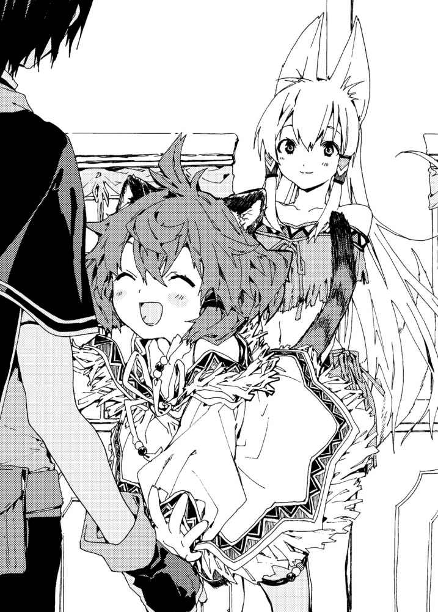
「これは？」
「あ、愛妻弁当よ」
恥ずかしげにもじもじするシャーロットに、翔真は微笑する。
「わざわざ作ってくれたんだな。嬉しいぜ」
「そ、そうよ。あんたが好きそうなものをたくさん詰 めこんだわっ！ ほら、以前うちの自治区に来たとき、お肉が美味 しいって褒 めてくれたでしょ？ それをいっぱい入れたわ。もちろん、あんたは生肉が食べられないから、あたしが焼いてあげたわ。だから、残さず食べてくれると嬉しいわ」
「わ、私もたくさん詰めこんだのだ！」
と、ミストがうわずった声を張り上げた。
「ミストも作ってくれたのか？」
「う、うむ。カンナ殿 のように上手 くはできぬが......い、一応、完成したので持ってきたのだ。翔真殿には長生きしてほしいから、野菜をたくさん詰めこんだのだ！ だけど......美味しくないかもしれぬし、やっぱりいいのだ」
「そんなこと言うなよ。せっかく作ってくれたんだ。食わせてくれよ」
「翔真殿......」
ミストは嬉しそうに頬を緩 ませ、翔真に魔札を渡 してくる。それを受け取ると、彼 女 は太ももの前で手をもじもじさせ、物欲しそうにチラチラと翔真を見る。
最近積極的になってきたとはいえ、ミストはうぶなのだ。みんなが見ている前で、自分からおねだりすることはできないのだろう。
そう考えて、翔真はミストを抱き寄せた。
「わっ。翔真殿......そ、そこ......わ、わき......んんっ」
翔真の指先が、ミストのわきに触 れてしまったらしい。
「ああ、悪い」
「こ、こちらこそ、汚 いところを触 らせてしまって申し訳ないのだ......」
「ミストの身体に汚いところなんかないさ」
「で、でも、緊 張 して汗 をかいてるのだ......私、汗臭 くないだろうか？ も、もし汗臭いなら、無理して抱きしめなくてもいいのだ......」
「そんなことないさ。ミストはいい匂 いがするぜ。ま、ミストが離れてほしいなら、そうするがな」
「は、離れてほしくないのだっ。そ、それに、わきに触ってもいいのだ。翔真殿の好きにしていいのだ......」
ぎゅっと目を瞑 り、恥ずかしさを堪 えるミスト。
できることなら好きにしたいところだが、このままだとミストが卒 倒 してしまいそうだ。おまけにシャロンが、チラチラとスノウを見ている。スノウの教育によろしくないことをするのではないかと不安がっている様子だ。
翔真はそっと抱 擁 を解き、
「ほかのみんなは来てないのか？」
とミストにたずねた。
「私が来たときには、シャーロット殿しかいなかったのだ」
「せっかく一番乗りしたのに、肝 心 のあんたがいないんだもん。でも、いいわ。あたしのことを優しく抱きしめてくれたものっ」
シャーロットはにこにこしている。翔真に抱きしめられたことで、すべての不満が吹 き飛 んでしまったらしい。
「ところで、カトレアのところでなにしてたわけ？ ルメリアも一 緒 だったってことは、ふたりきりでいちゃついてたわけじゃないんでしょうけど......」
「端 的 に言うと、吾輩の姉――ダリア姉様は、ルメリアの母だったのだよ」
「ふぅん。てことは、ルメリアにとって、あんたは叔母 さんってことになるのね。ふふ。嫁同士なのに叔母さんって、なんだかおかしいわ」
シャーロットはおかしそうに笑っているが、カトレアは渋 い顔をしている。叔母さんと呼ばれることが、あまり嬉 しくないようだ。
「それじゃ俺はボタンに町を案内してやるぜ。お前らはのんびり打ち合わせしてろよな」
「おおっ！ 師 匠 が町案内してくれるんですか！」
「おう。ついでに飯も奢 ってやるぜ。もちろん、俺は愛妻弁当を食うけどな」
「食べたいです！ 行きたいです！ 私、お腹ぺこぺこです！」
そうして翔真は嫁たちに見送られ、ボタンとともに街中へと向かうのであった。
◆
ボタンをつれて城をあとにした翔真は、東区の大通りへと繋 がる小道を歩いていた。
「師匠！ 建物はいっぱいあるのに、ひとはいませんね！ も、もしかしてみんなバトルフィールドにいるんですか！」
ボタンは羨 ましそうに言う。
「ここは住宅区だからな。いまはこの向こうにある商業区で働いてるか、さらにその先の更 地 で建設の真っ最中ってわけだ」
クヌル平野の中心部に佇 む翔真の居城――それをぐるりと取り囲むように住宅区があり、さらにそれを囲むように商業区が広がっている。
共同作業で親 睦 を深め、世界が平和になったこともあり、クヌル平野の民 たちは次々と結婚し、子どもを産んでいくだろう。
人口が増えると予想されるため、商業区を取り囲むように新たに住宅区を作り、さらにそれを囲むように商業区を作る予定である。
ガンドラ川沿いの北西部には住宅区でも商業区でもなく、田畑が広がっているのだが、基本的には、住宅区と商業区が幾 層 にも重なった、バームクーヘンのような町を目指しているのであった。
「住宅区ってことは、まさか私が住むことになるお家につれてってくれるんですか！」
「お前の家は城だ」
「私、お城で暮らせるんですか！ すごいですね！」
ボタンは他人 事 のようにはしゃいでいる。城に住むという実感が湧かないのだろう。
「お前のばあちゃんに約束したからな。お前は俺が責任を持って育てるってさ。つっても、食って寝るだけの生活を送らせるわけじゃねえがな」
「私、そんなもったいないことできないです！ 食べる間も寝る間も惜 しいです！ 神託遊戯 がしたいです！」
「そうか」
翔真はボタンの髪 をわしゃわしゃと撫 でまわす。ボタンはびっくりしたように目を開き、上 目 遣 いに翔真を見つめる。
「ど、どうして頭を撫でるんですか？」
「お前が嬉しいことを言ってくれたからだ。ほんと、お前は俺にそっくりだな」
ボタンは顔中に笑 みを広げる。
「師匠とそっくりなのは嬉しいです！ 私も師匠みたいに強くなりたいです！」
「俺もお前には強くなってほしいと思ってるぜ。だから当然、神託遊戯のコツは伝授してやる。だが、魔札は自力で手に入れろ」
ボタンは困ったように眉 根 を下げた。
「だけど師匠！ どうやって手に入れればいいんですか！ もしかして道 端 に落ちてたりしますか！」
きょろきょろとあたりを見まわすボタン。しかし清 掃 が行き届いているため、石 畳 には魔札どころかゴミひとつ落ちていない。綺 麗 に清掃されているのはいいことだが、どこか殺風景に感じるのは、翔真も気にしていることである。
「神託遊戯以外で魔札を手に入れるには、魔札専門店に行かなきゃならねえんだ」
「魔札専門店ですか！」
ボタンが目をキラキラと輝 かせた。神託遊戯が大好きなボタンにとっては夢のような店なのだ。
「特に精 霊 管 轄 区 の魔札専門店は品 揃 えが豊富でな。Ａランク以上の魔札が欲 しいなら、そこに行くしかないってわけだ」
「すごいです！ Ａランクって、たしか上から四番目の入手難易度ですよね！ アイリスさんが教えてくれました！ そんな魔札が手に入ったら、神託遊戯で勝ち放題です！」
「べつに高ランクだから強いわけじゃねえぜ。神託遊戯で重要なのは、魔札の組みあわせだからな。そんなわけで、お前にこれを渡しておくぜ」
翔真は〈魔札コンプリートのススメ〉を具現化させると、ボタンに渡した。
「これはなんですか？」
「〈魔札コンプリートのススメ〉だ。そこには一〇〇五〇種の魔札の効果が載 ってるんだ。それを読んで魔札の効果を暗記しつつ、毎日ひとつコンボを考えろ。それを日課にすれば、戦術が組みやすくなるからな。......ちなみに、文字は読めるか？」
「読めます！ ネリネばあちゃんが教えてくれました！ これ、ほんとにもらっていいんですか！」
「おう。大事に使えよ」
「もちろんです！ 師匠からのプレゼント、大事に大事に使います！」
ボタンは力強くうなずき、大切そうに本を胸に抱 きしめる。
それからしばし歩いたところで住宅区を抜け、ふたりは商業区にやってきた。人通りが多くなり、そこかしこから賑 々 しい声が聞こえてくる。
翔真は小道から大通りへ移り、民たちに挨 拶 を返しつつ、綺麗に整備された石畳の道をまっすぐに歩いていく。
「商業区に来たってことは、まさか魔札専門店に行くんですか！」
「残念ながら、うちに魔札専門店はないぜ。それにお前、金を持ってないだろ？」
「持ってないです！ 私、このままでは魔札が買えません！ どうしたらいいですかね、師匠！」
「さっき課題を出 しただろ？ ボタンの考えたコンボが成立していれば銀貨 を一枚やる。それが複雑なコンボだったら金貨 一枚で、俺が思いつきもしないコンボだったら白金貨 を一〇枚やる」
「その銀貨とか金貨はどう違うんですか！」
ボタンは貨 幣 の価値を知らないらしい。
あの集落では金銭での取り引きが行われていなかったというわけだ。
「銀貨が一枚あれば、Ｅランクの魔札なら三枚は買えるぜ」
「三枚も買えるんですか！」
「おう。金貨が一枚あればＥランク魔札なら一〇枚は手に入るし、Ｄランク魔札も一枚は手に入るぜ」
「Ｄランク魔札が買えるんですか！ じゃ、じゃあ、白金貨はどうですか？」
期待を膨 らませるボタンに、翔真は告げた。
「白金貨が一枚あれば、Ｃランク魔札は確実に手に入るぜ」
「Ｃランク魔札が!? すごいです！ 私、ほしいです！」
喜び方を見るに、ボタンはＤランク魔札までしか持っていないのだろう。そんな彼女にとって、Ｃランク魔札はとんでもないお宝なのだ。
「で、でも、Ｃランク魔札より上があるんですよね！ 一番上の魔札を......ＳＳＳランク魔札を手に入れるには、どれだけお金を貯 めなきゃいけないんですかっ！」
「金じゃ手に入らないぜ。なにせ五一種類あるＳＳＳランク魔札は世界に一枚しかないし、俺がすべて持ってるからな」
「師匠が独 占 してるんですか!? すごいですっ！ わ、私、とんでもないひとに弟 子 入りしたんですね！」
ボタンが鼻息を荒 くして翔真を見つめる。このまま歩くと転んでしまいかねないため、翔真はひとまず立ち止まった。
「とにかくＳＳＳランク魔札がほしければ俺を倒すしかねえし――神託遊戯がしたければ、魔札を集めるしかねえってわけだ。精霊管轄区にはつれてってやるから、金が貯まったら俺に言え」
「わかりました！ 私、毎日コンボ考えます！」
ボタンはいまにも〈魔札コンプリートのススメ〉を読み始めそうな雰 囲 気 だ。食い入るように表紙を見つめ、ページを開きたそうにしている。
「コンボを考えるには頭を使うからな。まずは腹ごしらえをしたほうがいいぜ」
「はい！ あっ、だけど師匠！ 私、お金持ってないです！」
顔を曇 らせるボタン。そんな表情豊かな彼女の頭を、翔真は撫でまわす。
「言っただろ？ 世話はするって。お前は衣食住の心配はするな。とにかく毎日、朝から晩まで魔札のことだけを考えろ」
「そ、そんな夢みたいな暮らしができるんですか！」
「お前には早く強くなってほしいからな。そんなわけで、なにか食いたいものがあったら教えろ」
「私が食べたいものでいいんですか！」
「俺は愛妻弁当があるからな」
「ええと、ええと......じゃ、じゃあ......う、うわあ！ そこらじゅうから美味 しい匂 いがします！ ま、迷います！」
ボタンは興奮しきった様子であたりを見まわす。
こんなに多くの選 択 肢 を与 えられるのは生まれてはじめてなのだろう。
『――翔真さん。いまお時間ありますか？』
ボタンをほほ笑ましく眺 めていると、翔真の脳 裏 に涼 やかな声が響 いた。
いまの声は――
（どうしたティナ？）
アイリスの妹――ティナだ。最高神代理としての連 絡 かもしれないため、翔真は脳内で受け答えることにした。
『キルシュの件で、できれば翔真さんに直接会ってお礼を言いたいのですが......いまってお忙 しいですか？』
（ティナみたいな美女と会えるんだ。時間なんざいくらでも作ってやるぜ）
『そ、それ、アイリス姉様のそばで言ってませんよね？』
（安心しろ。俺の声は、ティナにしか届いてねえよ。とにかくすぐに行くから、城の正門前で待っててくれ）
ティナに告げると、翔真はボタンに話しかけた。
「店は決めたか？」
「決めました！ 私、ここに入りたいです！」
ボタンが指さしたのは、すぐそばに佇んでいた店――食事処 〈うさぎ亭 〉であった。
目の前にあるがゆえに一際強い匂いを放っているため、ボタンは〈うさぎ亭〉を選んだのだろうが......
「まさか、ここまで気があうとは思わなかったぜ」
「もしかして、師匠のお気に入りの店ですか！」
「おう。俺の嫁 がふたり働いてる店でな。最高に上手い肉料理が味わえるぜ」
「お肉ですか!? お肉なんて滅 多 に食べられませんよ！ すごいですね！」
これ以上ないほど興奮するボタンに、翔真は追い打ちをかけるように〈碧落からの語りかけ〉を渡した。
「お前にこれをやる」
「ええ!? くれるんですか！ 私、なにもコンボ考えてないですよ!? 」
喜びと戸 惑 いの織り混ざった顔で翔真を見つめるボタン。
「いつでも連絡が取れたほうがいいからな」
「うわあ！ ありがとうございます師匠！ って、Ｂランク魔札じゃないですか！ こ、これ、私宝物にしますっ！」
面白 いくらい喜んでくれるボタンに、翔真は笑みを向ける。
「ところで、俺はこれから行くところがあってな。金は渡しとくから飯を食い終わったら〈碧落からの語りかけ〉で連絡してくれ」
ボタンの小さな手に金を握 らせると、彼女は喜んで〈うさぎ亭〉へ駆 けていく。それを見届けると、翔真は城の正門前へと瞬間移動したのであった。
翔真が正門前にやってきて間もなく、目の前に真 紅 の魔 法 陣 が浮かび上 がった。そしてそこから、ひとりの娘 が現れる。
透 き通 るような白い肌 に清 楚 な衣装を纏 う小 柄 な娘だ。青みがかった髪を肩 まで伸 ばし、まじめそうな印象の顔をこちらに向けた途 端 、
「翔真さんっ！」
ふにゃっと表情を緩め、ティナが人 懐 っこい笑みを浮 かべる。
はじめて顔を合わせたときは、翔真に対して敵対心を露 わにしていたが、いまではその面 影 は見受けられない。ティナはすっかり翔真に心を許しているのだ。
「世界を救ってくださって、ありがとうございましたっ！」
さっそく礼を告げられ、翔真はにこやかに笑いかける。
「気にするな。俺は個人的にキルシュとの神託遊戯を楽しんだだけだからな」
「翔真さんは本当に神託遊戯が大好きなんですねっ。ところで......」
ティナはきょろきょろとあたりを見まわす。
「アイリス姉様が見当たりませんが、ひょっとして......」
なにかを期待するようなティナに、翔真はうなずいてみせた。
「アイリスは実体を手に入れたぜ」
「ついに元通りになったんですねっ！」
「おう。いまは部屋で嫁トーナメントの打ち合わせ中だぜ」
ティナは小首を傾 げる。
「嫁トーナメント......ですか？」
「結 婚 式 の順番を神託遊戯で決めることになってな。その打ち合わせだ」
「アイリス姉様なら優勝するに決まってますっ！ ......ところで、その結婚式って、わたしも参加していいんですか？」
翔真はにこりと笑う。
「もちろんだ。――約束通り、ちゃんと下着姿で来いよな」
ティナがぎょっと目を見開いた。
伏 し目 がちになり、おずおずとたずねてくる。
「も、もしかして......あの約束のこと、覚えてました？」
「ったりめーだろ。一 瞬 たりとも忘れたことはねえぜ」
はじめてティナと出会った日。翔真はティナと約束を交 わしたのだ。翔真が魔札全種を集めることに成功した暁 には、ティナは下着姿で結婚式に参加する、と。
「誓約書に記したわけじゃねえが――まさか最高神の代理様が約束を破る、なんてことはしないよな？」
にやっと笑うと、ティナは頬 を赤らめる。
「わ、わたしがそんな破 廉 恥 な格好で出席したら、アイリス姉様の結婚式が台無しになりませんかね......？」
「注目を集めるのは間 違 いねえし――ティナが主役みたいになっちまうかもな」
「そ、そんなのだめですっ！ 結婚式がそんなことになったら、アイリス姉様が発 狂 してしまいます！」
だろうな、と翔真はうなずく。
「俺 としても、結婚式を成功させたいからな。だから、提案があるんだ」
「提案......ですか？」
嫌な予感がしたのか、ティナは探 りを入れるようにたずねてくる。
「それって、なにをすればいいんですか......？」
「いまここで、俺に下着を見せてくれ」
「こ、ここでですか!? 」
ティナは慌 ててあたりを見まわした。
正門からまっすぐ続く道の先に、住宅区が広がっている。遠目からではなにをしているかはわからないだろうが、なかには目が良い種族もいるのだ。そんな種族が通りかかれば、痴 女 がいたと噂 が広まり、ティナは一生恥 を背 負 って生きていくことになる――ティナはそう考えたのか、
「せ、せめて城のなかじゃだめですか？」
と提案してきた。
「ティナの下着が見られるなら、どこへだって行くぜ」
話がまとまり、翔真とティナは城内に身を移す。バタンと扉 が閉まる音が響き、静 寂 があたりを包みこむ。
「じゃ、見せてくれ」
「だ、誰も来ませんよね？」
チラチラと扉を横目に見るティナ。
「言っただろ。アイリスたちは部屋で打ち合わせ中だってな。けど、早くしないと誰かがその扉から入ってくるかもしれねえぜ」
ティナは白くほっそりとしたのどをごくりと鳴らし、か細く震える声を出す。
「わ、わかりました......」
あどけなさの残る顔を恥 ずかしげに歪 め、ティナはスカートの裾 をそっと掴 む。羞 恥 に頬を染めつつも、震える手でゆっくりとスカートをたくし上げていく。瑞 々 しい太ももが露わになり、淡 い青の下着が少しずつさらけ出されていく。
「こ、これで......満足ですか？」
なだらかなお腹が見えるところまでスカートをめくり、潤 んだ瞳を向けてくる。
まじまじと下着を見つめると、太ももがしっとり汗ばんできた。
ティナが太ももをもじもじと擦 り合 わせる。
「......み、見るだけですよね？」
「触ってほしいのか？」
「だ、だめです。そんなところを誰かに見られたら、わたし......」
恥ずかしげに身もだえするティナ。
「誰にも見られない場所なら、触ってもいいってことか？」
「そ、そういう意味では......」
下着を見せたまま、上目遣いに見つめてくる。
「で、でも、翔真さんは、世界を救ってくれましたし......い、痛くしないなら、触ってもいいですけど......」
「そっか。でも、ティナが嫌なら触るのはやめとくぜ」
「えっ。さ、触らないんですか？」
「約束は下着を見ることだからな。それとも、触ってほしかったのか？」
からかうように言うと、ティナは唇 を噛 んだ。
「そ、そんなこと......で、でも、最高神の代理として、それくらいのお礼はしないと......いけないような気がしますし......」
「ティナはまじめだな」
「は、はい。わたしはまじめです......翔真さんに触ってもらうのは、最高神代理としての仕事です。し、仕事だから、ちゃんとしないといけません......」
太ももを擦り合わせつつ、ティナが甘 えるように見つめてくる。
恥ずかしさのあまり頭が沸 騰 し、自分でもなにを言っているのかわからなくなっているのだろう。
約束は果たしてもらったので、翔真はスカートを下ろさせることにした。
そのときだ。
「いっぱい草むしりできたね！ 休 憩 したらまた草むしりしようね！」
「そうだね。早く草むしりを終わらせないと、花を育てられないからね」
楽しげにおしゃべりしつつ、キルシュとミリアが城内に帰ってきた。
バタンと扉の閉まる音が響き、静寂があたりを支配する。
ふたりの視線は――頬を赤らめてスカートをたくし上げるティナに向けられていた。
「い、いやああああああああああああああああああああああああああああああああ！」
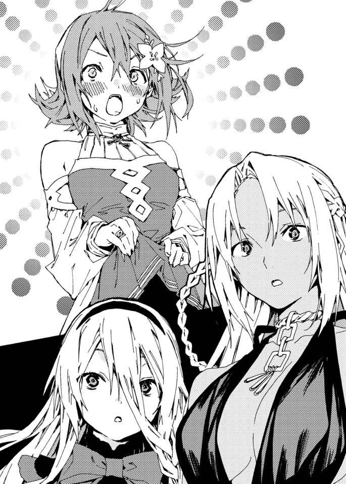
ティナが張 り裂 けそうな悲鳴を上げた。大 慌 てでスカートを正し、キルシュとミリアを交 互 に指さす。
「なんでキルシュがここにいるんですか!? どうしてミリアがここにいるんですか!? 」
「俺が保護したんだ」
「保護!? キルシュとミリアを!? な、なぜですか!? 」
ティナが戸惑いの声を響かせる。一方、キルシュは顔を曇らせていた。ミリアが困ったように眉根を下げ、キルシュとティナを見比べている。
「キルシュ姉様......」
「だいじょうぶさ。僕 がついてるからね」
不安げに瞳 を揺 らすミリアの髪を、キルシュは優しい手つきで撫でる。そして、真剣な面 持 ちでティナのもとへ歩み寄った。
キルシュと対 峙 するのが怖 いのか、ティナが翔真の手を握ってきた。
「安心しろ。キルシュは無害だからな」
「ですが、キルシュは世界を滅 ぼそうと......」
「ああ、わかってる。けど、そのキルシュはもういないぜ。ここにいるのは平和を愛するキルシュだ」
「平和を......？」
「そうだ。キルシュはいま、ミリアと協力して城の裏庭に花畑を作ってるんだ。こんなに汗まみれ、泥 だらけになるまでな」
ティナは、怖 々 とキルシュの姿を見る。
キルシュの肌を汗が伝い、手足は泥で汚 れていた。
そんなキルシュが一歩前に出ると、ティナはびくっと身を竦 めた。怯 えるティナを見て、キルシュは悲しげに眉 を寄せつつも、口を開いた。
「......ティナ。いままでのことは、謝 るよ」
「謝る？」
キルシュの口から謝罪が飛び出てくるとは思わなかったのだろう。ティナは、ますます困 惑 顔 をする。訝 しむようにキルシュを見つめ、
「あなたが......謝る？」
キルシュはうなずき、ゆっくりと言葉を選ぶように言う。
「きみに許してもらえるとは思わないよ......。僕はきみにひどい言葉を浴びせたからね。クエストのときも、きみのことを、なんの取 り柄 もない妹だと言ったけど......できることなら、なかったことにしてほしいんだ。できることなら。ほんとうに、できることならでいいんだけど......昔みたいに、僕のことを姉として慕 ってくれると......そうしてくれると、嬉しいんだけど......」
キルシュの声が、しだいに小さくなっていく。許してもらえるなどとは思っていないのかもしれないが、それでも言わずにはいられなかったのだろう。
キルシュの話を黙 って聞いていたティナは、はっきりとした声で言う。
「わたしは、あなたのしでかした悪 魔 のような所業を忘れません」
キルシュは悲しげに顔を歪め、うつむきがちになる。
「......わかっているさ。僕は、許されざることをしたからね」
「ひとの話は最後まで聞きなさい」
幼子を叱 るように告げられ、キルシュは驚 いたように顔を上げる。
「......わたしは、あなたのしでかした悪魔のような所業を忘れません。でも......あなたと過ごした幸せな日々を、忘れたこともありません」
キルシュの瞳に、じんわりと涙 が浮かぶ。
なにか言いたげに口を開きかけるが......キルシュはなにも言わずに、ティナの話に耳を傾 ける。
「わたしは、アイリス姉様が大好きです。アイリス姉様と過ごしていると幸せです。......ですが、一番幸せだったのは、わたしと、アイリス姉様と、ミリアと......キルシュ姉様と。四人で過ごした日々です。最高神代理として、欲をかくことはできませんが......ひとりの人間として、わたしはもう一度、あの幸せな日々を過ごしたいと思っています。悪夢のような日々を忘れることができるような......そんな幸せな日々を過ごしたいと。わたしは、そう思っています」
だから、とティナは翔真の手を離 し、キルシュの泥だらけの手をそっと包みこむ。
「わたしは、あなたを許します」
「ティナ......お姉ちゃんが悪かった......悪かったよ......」
くずおれるように膝 をつき、ぽろぽろと涙をこぼすキルシュに、ティナは困ったような顔をする。
「泣かないでください......。わたしはいつも慰 められる側で......お姉様の慰め方 なんて、わかりませんから......」
「ご、ごめんね、ティナ。ごめんね......」
「......お姉様を甘やかすのは、これが最後ですからね」
ティナは優 しく微 笑 し、キルシュの髪をそっと撫でる。そして、ちらりとミリアを見た。
「ミリアのことも......許してくれる？」
おずおずとたずねるミリアに、ティナはにこりとほほ笑みかける。
「お姉ちゃんは、妹を許すものです」
ミリアはぱあっと顔を輝かせた。明るく笑うミリアを見て、ティナはにこりと笑い......翔真と目があった瞬 間 、思い出したように顔を赤らめる。
ごほんと咳 払 いをして、
「ひ、ひとつだけ約束してください」
キルシュとミリアの顔を交互に見比べ、必死そうな口調で言う。
「さっき見たこと、ぜったい誰 にも言わないでください。特にアイリス姉様には秘密です。いいですね？」
キルシュは涙を拭 い、慈 愛 に満ちた瞳でティナを見つめた。
「どんな性 癖 でも、お姉ちゃんはティナのことが大好きだよ」
「ミリアも言わないよ！ ティナ姉様がえっちな妄 想 をするの大好きだなんてぜったいに言わないよ！」
「言ってるじゃないですかっ！ そんな妄想しません！ それに変な性癖はありません！ わたしは四人姉妹で一番まじめなんですから！」
心外そうに叫 びつつも、どこか嬉しげなティナだった。
《 第四幕 敦 盛 の宝 》
嫁トーナメント当日。
「いよいよですね、師匠！」
クヌル平野に悠 然 と佇む古びた城。その最上階の一室で、ボタンは落ち着かない様子でソファに座 っていた。
いつもは嫁で賑 わっている寝 室 には、翔 真 のほかにはボタンしかいない。嫁たちは城のなかにはいるものの、それぞれ違 う部屋にいる――精神を研 ぎ澄 ませ、バトルフィールドへと転送される瞬間を待っているのだ。
「おう。いよいよだな」
「誰が勝ちますかね！」
ボタンは誰が勝ち残るのか気になるらしいが、翔真はさほど勝敗は気にならなかった。無論、嫁トーナメントには関心があるが、勝敗には興味ないのだ。
なぜなら翔真は嫁たちを平等に愛しているのだから。特定の嫁を応 援 する気がない以上、勝敗など気にならないのだ。
もちろん勝敗に興味がないからといって、結婚式をないがしろにするつもりはないが。翔真とて愛する嫁との結婚式は楽しみにしているのだから。嫁の要望を聞き、その希望を極力叶 え、幸せな想 い出 を作りたいと思っている。
「ちなみにですけど、私はスノウさんが優勝すると思います！ シャロンさんが自 慢 してましたからね！ スノウさんは獣牙門 最強の魔札 使いだと言ってましたからね！ 師匠はスノウさんと戦ったことありますか！」
ボタンが雪山を旅立って半月以上経 つが、声の大きさはあいかわらずだ。まあ、元気がいいと好意的に解 釈 することもできるため、注意する気は起きないが。
「俺が神託遊戯 したのは、アイリスとミストとシャーロットとジュナだけだ」
「どっちが勝ったんですか！」
「もちろん俺が勝ったぜ」
「さすが師匠です！ そのなかで一番手 強 かったのは誰ですか！」
「そうだな......。強 いてひとりを挙げるとすれば、アイリスだな」
アイリスは敦盛を倒すために、五〇年間作戦を練っていたのだ。ほかの嫁――特に神託遊戯の経験がなかったジュナよりは強かった。
もっとも、いずれにしても勝負に際して思考を働かせた時間は大差なく、一 撃 も食 らうことなく翔真が勝利したのだが。
「だったら、アイリスさんと神託遊戯してみたいです！」
ボタンは一番強いと評されたアイリスとの神託遊戯を望んだ。勝ち負けにこだわらず、純 粋 に神託遊戯を楽しみたいと――相手が強ければ強いほど面白い勝負ができると考えているのだ。
「そしていつか、師匠と戦うんです！」
そんなボタンにとって、最も理想とする対戦相手は翔真である。翔真としてもボタンと神託遊戯したいと思っているが、まだそのときではないのだ。
「そのためにも、まずは魔札を集めねえとな」
ボタンの手持ち魔札は五枚なのだ。おまけにそのすべてが神託遊戯では役に立たない。誰と神託遊戯するにせよ、このままでは敗北は必至。ゆえに、いまはとにかく神託遊戯の勉強をしつつ、魔札を集めなければならないのだ。
「はいっ！ あ、そうだ師匠！ 私、あと銀貨 が一〇枚貯まったら魔札専門店に行きたいです！」
ボタンは二〇枚の銀貨を持っている。先日〈魔札コンプリートのススメ〉を与えてからというもの、毎日魔札の効果的な組み合わせを考え、そのすべてがコンボとしてちゃんと成立していたのだ。
複雑な組み合わせは思いつかないらしいが――最近まで魔札の知識が欠けていたことを考えると、著 しい成長と言える。
「ところで、今日はまだコンボを聞いてねえな」
翔真が急 かすように言うと、ボタンはびくっと震 えた。
「わ、わかってます！ いま考えてるところです！」
ボタンは慌ただしく〈魔札コンプリートのススメ〉に目を通した。眉 間 にしわを寄せて熟考している様子だが......どうも落ち着かない。
そわそわと身体 を震わせ、チラチラと窓の外を気にしている。
風に吹 かれてカーテンが揺れる窓の外からは、いつも以上に賑々しい声が聞こえてくる。まるで祭りが催 されているかのような賑わいだ。
実際、クヌル平野はお祭り騒 ぎだった。
その原因は〈うさぎ亭〉の看 板 娘 ――カンナにあった。
カンナの両親が店を訪 れた客たちに、愛 娘 が翔真に嫁 入 りしたことを嬉しげに自慢し、嫁トーナメントの話をした。
その話が瞬 く間 に民たちのあいだで広まり、近いうちに全権代理者 たる翔真の結婚式が催されるという話になり、町を挙げてのお祭り騒ぎが始まったのだ。
民たちは『誰が優勝するか』という話題でも盛り上がっているが、誰が優勝するにせよ、彼 らにとっておめでたいことに変わりはないのであった。
「うわああっ！ だめです！ なにも思いつきません！」
ボタンが悲鳴を上げた。頭を抱 え、足をばたばたさせる。
「どうしましょう師 匠 っ！ 私、すべてのコンボを思いついてしまいました！ もうないです！」
「そんなことないさ。お前が気づいてないだけで、コンボは山のようにあるぜ」
「山のようにですかっ！ 私、早く見つけたいです！ そしてバトルフィールドで試 してみたいです！」
ボタンの気持ちはよくわかる。翔真も幼い頃 は、コンボを思いつくたびに敦盛に勝負を挑 んだものだ。必死に考案したコンボが上手 くはまったときほど嬉 しかったことはない。
「試してみたいなら、まずはコンボを考えないとな」
「はいっ！」
と、元気に返事をしたものの、ボタンはそわそわしている。祭りに気を取られ、集中が乱されているのだろう。
集中できないまま〈魔札コンプリートのススメ〉とにらめっこしても時間の無 駄 だし、じきに昼飯時である。気分転 換 もかねて町をぶらつくとしよう。
「せっかくの祭りだし、出かけるか？」
ボタンは顔を輝かせた。
「いいですね！ 師匠、それ名案ですよ！」
「んじゃ、行こうぜ」
翔真はボタンをつれて城をあとにした。城外に出ると、明るい陽光が降り注いできた。まだらに雲が広がっているが、日差しを遮 るほどではない。
「ちょっと寄り道していいか？」
「もちろんです！ 師匠の行くところなら、どこへだってついていきます！」
明るい声を響かせるボタンを伴 い、翔真は裏庭へまわる。――と、だだっ広い空き地の端 っこに、娘たちの姿があった。
キルシュとミリアとティナだ。
伸び放題だった草むしりが終わり、レンガを積み上げて花 壇 を作っているところである。手作業で組み立てているため、手元は泥だらけになっていた。
「よォ、作業は順調か？」
うしろから声をかけると、キルシュたちは驚いたように振 り返 る。作業に没 頭 しすぎて誰も足音に気づかなかったのだ。
キルシュは頬を伝う汗 を拭い、清 々 しい笑 みを浮かべた。
「順調そのものさ。ミリアとティナが手伝ってくれたからね」
「ティナ姉様はすごいんだよ！ 草むしりの達人なんだよ！」
キルシュが感謝し、ミリアが誇 らしげにティナを自慢する。
先月までは考えられないことだが、ガーデニングを通して、仲 違 いしていた姉妹たちは親 睦 を深めたらしい。
「わたしは、こういう作業が得意ですからね。それにキルシュ姉様はともかく、ミリアの草むしりを黙って見ていることはできませんでした。だって千切ってるだけでしたからね。こういうのは根っこから引 っこ抜 かないと意味ないんです」
「ティナ姉様すっごーい！ 博識だね！ 草むしりの天才だね！」
「これくらい常識です」
ミリアに絶賛され、ティナは気をよくしたようだ。ご機 嫌 そうに頬を緩 ませ、得意気に胸を張っている。
そんなティナを、キルシュが愛 おしげに見つめた。
「ティナはまじめだから、こつこつ作業するのが得意なんだよね。なのに僕は......能力の強さだけで、きみを見下してしまって......」
キルシュはクエストの場にてティナのことを『なんの取り柄もない娘』と罵 ったことを悔 いている様子だ。
悲しげに目を伏せるキルシュに、ティナはため息をつく。
「そんな顔をするのはやめてください。こっちまで気が滅 入 ってしまいますよ。キルシュ姉様は、いつも堂々としてないとだめなんです」
「そうだよキルシュ姉様！ ミリアは悲しい顔のキルシュ姉様より、笑った顔のキルシュ姉様のほうが好きだよ！」
妹たちに励 まされ、キルシュは瞳を潤ませた。ふたりの頭をそっと撫 で、優しげにほほ笑みかける。
「ありがとう、ティナ、ミリア。きみたちがいてくれて、僕は幸せだよ......。なのに僕は、アイリスに嫉 妬 するあまり、自らの手で幸せを捨ててしまって......」
「もうっ！ 悲しい顔はやめてって、言ってるじゃないですかっ！」
「そうだよキルシュ姉様！ ミリアは悲しい顔なんて見たくないよ！ ほら、花壇の続きしようよ！ おっきな花壇作って、綺 麗 な花を育てようよ！」
元気づけようと明るい声を響かせるミリアに、キルシュはうっすらと微笑する。
「そうだね。ガーデニングを再開しよう」
「ガーデニングするのはいいが、水分補給はこまめにしろよな」
いまは城の影 に隠 れているが、じきに日が真上に昇 り、日差しに晒 されるのだ。足音に気づかないくらい作業に没頭すれば、そのうち熱 中 症 で倒 れかねない。
「僕たちのことを心配してくれるのかい？」
「お前らは嫁の姉妹なんだ。心配するのは当然だろ。早く謝りたいって気持ちはわかるが、無理は禁物だぜ」
キルシュはうなずき、穏 やかな笑みを浮かべる。
「早く謝りに行きたいという気持ちはもちろんあるけど......いまはそれ以上に、妹たちと花を育てるのが楽しいのさ」
「ミリアも楽しいよ！ キルシュ姉様とふたりきりでも楽しいけど、ティナ姉様がいるともっと楽しいよ！ ここにアイリス姉様がいてくれたら、もっともっと楽しいよ！」
「ですね。もう一度あの幸せな日々を送るのに、アイリス姉様は欠かせませんから。ねえ、翔真さん。アイリス姉様はいまどうしてるんですか？ たしか、今日ですよね？」
「ああ。嫁トーナメントは正午開幕だからな。ちょうどバトルフィールドに飛ばされた頃だと思うぜ」
「アイリス姉様は、誰と戦うんですか？」
「アイリスの初戦の相手は、ミモザだ」
「だとすると、オリジナル魔札を封 じられても、勝つのはアイリスだね」
アイリスに優勝してほしいと願っているのだろう。キルシュは安心したように言う。
実際、アイリスとミモザでは勝負にならない。なにせアイリスは神託遊戯の生みの親で、ミモザは神託遊戯をしたことがないのだから。
もちろん、アイリスがわがままを言ってミモザを初戦の相手に選んだわけではない。
嫁トーナメントの対戦相手は、厳正なるくじ引きで決まったのだ。
試合はふたつのグループに分かれて行われる――Ａグループは『アイリスＶＳミモザ』『シャーロットＶＳカンナ（勝利した娘ＶＳリリー）』。そしてＢグループは『ルメリアＶＳミスト』『スノウＶＳジュナ（勝利した娘ＶＳカトレア）』で、その後ＡグループとＢグループの勝者同士で決勝戦を行うのである。
さらに打ち合わせの結果、今回の神託遊戯では新規ルールを設けないことが決まった。
奴 隷 にされる怖 れがあると危 惧 しているわけではない。神託遊戯の経験がないミモザやルメリアのため、極力シンプルなルールにすることになったのである。
「翔真さんは、アイリス姉様が優勝すると思いますか？」
ティナが肯 定 してほしそうに見つめてくる。
「さあな。けど、アイリスが強いことは疑いようのない事実だぜ。なにせあいつは――」
◆
城の一室にて瞑 想 していたアイリスは――次の瞬間、夕日に彩 られた荒 野 に佇 んでいた。嫁トーナメントが幕を開け、バトルフィールドへと転送されたのだ。
赤茶けた大地には無造作に岩が転がり、草木の類 は見当たらない。殺風景な荒野には、ふたりの人 影 を捉 えることができた。
審 判 を務めるニンファと、対戦相手のミモザだ。
「わたくし、ついに神託遊戯できるんですのねっ！ 翔真様が楽しそうにお話しするのを聞いて、いつかしてみたいと思っておりましたの！ アイリス様、今日はよろしくお願いしますわねっ！」
ミモザはご機嫌だ。
宝石のような鱗 に覆 われた尾 ひれを引きずり、アイリスに握 手 を求めてきそうな雰 囲 気 である。
（やりにくいのぅ）
友好的なミモザに、アイリスは戦意が削 がれそうになる。相手がシャーロットのように好戦的な娘なら思う存分に戦えるが、ミモザはお祭り気分だ。
無 邪 気 なミモザを攻 撃 するのは気が引ける。
（だめじゃだめじゃ！ 弱気になってはだめなのじゃ！）
アイリスはかぶりを振って弱い気持ちを追 い払 う。
（わしはぜったい翔真と最初に結婚式を開くのじゃ！）
初戦で負けても、アイリスの結婚式が一番最後になることはない。
なぜなら初戦で負けた娘は、翔真と結 婚 した順に結婚式を開くことになるのだから。
つまり最初に娶 ってもらったアイリスは、初戦に負けても早めに結婚式を催せるというわけだ。
が、アイリスは正妻だ。正妻である以上、結婚式は誰よりも早く開かなければならない。誰よりも早く翔真の唇を奪 わなければならないのだ。
「ミモザよ！ この勝負、わしが勝たせてもらうのじゃ！」
「はいっ！ わたくし、アイリス様を応援してますわっ」
アイリスは度 肝 を抜かれた。対戦相手のミモザに応援される意味がわからない。
「お、応援じゃと!? そなたいま、応援すると言ったのか!? 」
「はいっ！ だってわたくし、アイリス様のことが大好きですものっ！ アイリス様は、翔真様と一 緒 に、あの素 敵 な町を作り上げたんですものっ！」
箱 入 り娘として育てられたミモザは、世間知らずを極 めている。つい最近まで異種族の存在を知らず、クエストに参加するため地上を訪れ、いがみあう人々を見て、彼 女 は心を痛めたのだ。
そんなミモザにとって、異種族共存を謳 うクヌル平野は夢のような町だった。その町の開発に尽 力 した翔真とアイリスのことを、心から慕っているのである。
「わしもそなたのことは好きじゃが......優勝を目指さなくてよいのか？」
「わたくし、順番にはこだわりませんわっ！ 翔真様と結婚式ができるだけで、満足ですものっ！」
「......相手がミモザでよかったのじゃ。そなたなら、恨 みっこなしで倒せるのじゃ！」
ミモザを倒すことに、アイリスは罪悪感を抱 かない。
ミモザは勝っても負けても満足してくれるのだから。
「準備はいいですかっ!? 」
と、ニンファの幼い声が響 いた。
「いつでもいいのじゃ！」
「わたくし、早く神託遊戯したいですわっ」
ふたりの返事に、ニンファはこくりとうなずき、
「それでは――神託遊戯スタートなのです！」
号令とともにパッと姿を消した。
次の瞬間、
「ええと、それでは、まずは〈浮遊 〉を使いま――」
「〈雷帝の裁き 〉じゃ！」
アイリスの頭上に展開された魔 法 陣 から稲 妻 が放たれたのとほとんど同時に轟 音 が響き、ミモザは一瞬でバトルフィールドから敗退した。
あっけない幕切れだが、アイリスにとっては予想通りだ。
なぜならアイリスは常に翔真のそばに漂 い、嫁 たちを監 視 していたのだから。嫁たちの考えることは、すべてお見通しなのである。
「ミモザよ！ そなたは初心者で、おまけに相手を罠 にかけるような小 狡 いことを企 てる娘 ではないからな！ 反射を使わず、いつもの癖 で最初にとりあえず浮 こうとすることは察しがついておったのじゃ！」
思った通りの結果に、アイリスは勝利の雄 叫 びを上げるのだった。
◆
キルシュたちと別れた翔真は、ボタンを伴い大通りを歩いていた。
昼飯時とあって大通りは通行人であふれ、色とりどりの装 飾 が施 された露 店 に彩られ、祭りの様相を呈 している。
「次はなにを食べますか！ 私、まだまだ食べられますよ！」
串 焼 き肉を頬 張 りながら、ボタンが話しかけてきた。口のまわりをタレでべたつかせ、ぐしぐしと袖 で拭いている。
「ボタンの好きなものを食わせてやるぜ」
「いいんですか！ 今日の師匠、めちゃくちゃ優しくないですか！」
「それだけお前に期待してるってことだ」
「ええっ!? 師匠、私に期待してくれてるんですかっ！」
ボタンが嬉しげに見つめてくる。
「もちろんだ。じゃなかったら弟 子 になんてしないぜ。期待を裏切らないよう、帰ったらしっかり勉強しろよな」
「もちろんです！ 私、めちゃくちゃ強くなりますよ！」
やる気を滾 らせつつも串焼き肉にがっつき、もぐもぐしながら露店を見まわす。多くの露店があるため、目移りしてしまうようだ。
「あっ！ 翔真じゃねえか！」
立ち止まると通行人の邪 魔 になるため、歩きながら次の店を探していると、ふいに声をかけられた。
斜 め前 に、狼 のような風 貌 の男が立っていた。
「師匠の知り合いですか！」
「スノウの兄貴だ」
「スノウさんのお兄さんですか！ はじめまして、ボタンです！」
明るく挨 拶 をされ、スノウの兄――フレイクは面食らっている。
「な、なあ。こいつ誰だ？ おめーの嫁に、こんなのいたか？」
「ボタンは俺 の弟子だ」
「私、師匠のもとで最強の魔札使いを目指してます！」
翔真とボタンの話を聞き、フレイクはハッとした。
「おめーに聞きてえんだが......弟子に優しくしようと思う瞬間っていつだ？」
「成長したときだ」
翔真は即 答 した。
ボタンが考えるコンボはどれも単純だが、優 劣 はある。なかでも、四枚の魔札を使ったコンボを考えてきたときは、よく思いついたと頭を撫でまわしたほどだ。
「成長か......。てこたぁ、必死に仕事に打ちこむしかねえってことか」
「そういうこった。ところで、仕事は順調か？」
翔真はフレイクに住みこみの仕事を紹 介 した――いくつかの選 択 肢 を与 え、フレイクは建設の仕事を選んだのだ。
フレイクは、ムッと眉をつり上げる。
「ちっとも順調じゃねえぜ！ 毎日怒 られてばかりだからな！ まだ雑用としてしか役に立たないって言われてよォ！ いまもこうして先 輩 連中の飯を買ってきたところだ！」
フレイクの両手には魔札が握 られていた。イラストは見えないが、弁当の魔札だろう。
「建設の技術は一 朝 一 夕 じゃ身につかねえだろうしな。けど、偉 いじゃねえか。まじめに仕事しててさ」
フレイクは権力に固 執 し、お家騒 動 を引き起こしたのだ。使いっ走りに甘んじるなど、かつてのフレイクでは考えられないことだ。
「ったりめーだろ。あの日オレはスノウに誓 ったんだ。まっとうに生きるってな。当然、雑用のまま終わるつもりはねえけどよォ。先輩連中から技術を盗 んで、独立して、いつか自分の店を持ってやるぜ！」
夢を語るフレイクは、生き生きとしていた。
「ところで、いまスノウの結 婚 式 の順番を決める戦いをしてるんだってな。あいつが優勝したら、結婚式っていつやるんだ？」
「そいつはスノウしだいだが......少なくともアイリスが優勝したら、結婚式は明日になるだろうぜ」
「明日か。なあ、それってオレも参加していいのか？ アイリスの結婚式なんかに興味はねえが、スノウの晴れ舞 台 は見たくてな」
「いいぜ。つっても、俺が許可しなくても、スノウのほうから誘 うだろうがな」
スノウに誘われると聞き、フレイクは嬉しげに頬 を緩ませた。
「そ、そうか！ よっし！ そうと決まれば今日もバリバリ働くぜ！」
フレイクはうきうきとした歩調で混雑したひとの群れをすり抜けていく。
「で、なにを食べるか決めたのか？」
「はい！ 私、あれが食べたいです！」
「魚の串焼きか。いいじゃねえか」
「あなた様っ！」
露店のほうへ向かっていると、ミモザが漂ってきた。翔真の目の前にふわりと舞 い降 り、満面の笑みを向けてくる。
「捜 しましたわっ。お会いできて嬉しいですわっ！」
「俺もだ。ここにいるってことは、神託遊戯はもう終わったのか？」
「はいっ。わたくし、アイリス様に負けてしまいましたわっ」
負けたとは思えない清々しい笑みだ。
ミモザとしては、結婚式の順番などどうでもよく、仲の良い友達と神託遊戯ができればそれで満足なのだろう。
「楽しめたならなによりだ」
「ですが、ちょっぴり残念ですわ。わたくしも、早くあなた様と口づけしたいですもの」
「俺もだ。けど、それは結婚式まで取っておこうぜ」
翔真が慰めるように青みがかった髪 を撫でると、ミモザがじっと見つめてきた。口元を袖で隠し、か細い声で言う。
「結婚式で口づけをして......そのあとは、たくさん可愛 がってくださいますの？」
「もちろんだ。ミモザが好きなだけ可愛がってやるぜ」
「......わたくし、なんだかどきどきしてきましたわ」
「だったら、落ち着けるところに行くか？ ちょうど飯を食うところでな。露店で済ますつもりだったが、疲 れてるなら店に入るぜ」
「はい。わたくし、あなた様のおそばにいさせてほしいですわ」
「決まりだな」
話がまとまり、翔真たちは香 ばしい焼き魚の香 りが漂う店内へと身を移した。
『翔真さん。いまどこにいるの？』
そのとき、脳内にジュナの声が響いた。迷子になった子どものような、頼 りない声だ。翔真が立ち止まると、ミモザがきょとんとした顔を向けてくる。
「どうなさいましたの？」
「ジュナから連 絡 だ。先に席に座って注文しててくれ」
「わかりましたわっ。行きましょう、ボタン様」
「はい！ 師匠はいっぱい食べるはずだから、いっぱい注文します！」
「ですわねっ。わたくしもたくさん食べますから、たくさん頼 みましょう！」
賑 々 しく言葉を交 わしながら店の奥 へと入っていくのを見届けると、翔真はひとまず〈飛翔 〉で空を舞う。
「俺は南区にいるが、どうした？」
『わたし、負けちゃったから......翔真さんと、一緒に過ごしたいと思ったの』
ということは、スノウが勝ったということだ。
『もしかして、忙 しかった？』
「そんなことないさ。ジュナのためならどこへだって飛んでいくぜ」
落ちこんでいる嫁を慰めるのは夫である翔真の務めだ。ジュナが甘 えたいと言うのなら、喜んで慰めるとしよう。
「ジュナはいまどこにいるんだ？」
『翔真さんの城の正門前にいるわ。わたし、バトルフィールドで大きくなっちゃったから......』
基本的に、神託遊戯が終わると転送前にいたところに送り返される。
バトルフィールドに転送されると、魔札の効果はリセットされるのだ。ジュナの身長は一二メートルはあるため、そのまま部屋に返されると惨 事 になってしまう。そのため審 判 精 霊 に頼み、屋外へ転送してもらったというわけだ。
翔真が〈千里眼 〉で正門を見ると、ジュナはそこにいた。
先日アイリスに頼んで創 らせた身長を自由に変化させる指輪型の魔札を使ったようで、ジュナは小さくなっていた。
「ちょっと待ってろ」
翔真は〈瞬間移動 〉で正門に飛ぶ。するとジュナが、華やかに笑った。翔真に抱きつき、甘えるようにささやいてくる。
「わたし、負けちゃった......」
「そっか。けど、負けないように頑張ったんだろ？」
「うん。翔真さんと早くキスしたかったから......。それに、翔真さんの赤ちゃんも、早くほしいし......翔真さんも、ほしいよね？」
「もちろんだ。ジュナの子どもなら何人でもほしいぜ」
「嬉しい......。たくさん愛してくれるのね......。わたし、元気な赤ちゃんを産めるように頑張るわ。はじめてだから、上手にできるかはわからないけど......」
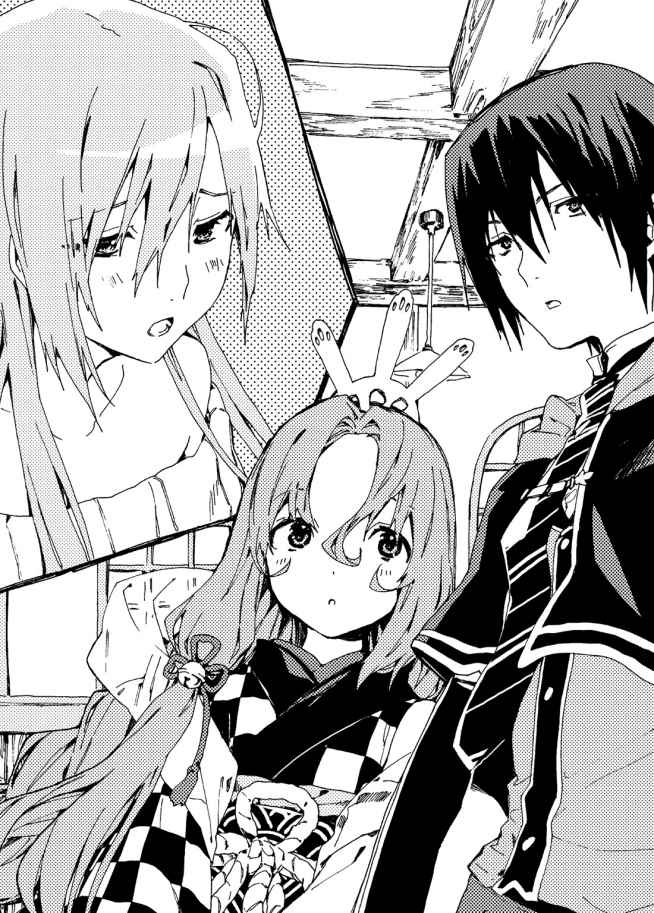
「心配するな。ちゃんと優しくするからな」
優しく語りかけ、桃色がかった髪を撫でてやる。するとジュナは、唇 をほころばせた。
「うんっ。でも、慣れてきたら、翔真さんの好きにしてくれてもいいけど......」
「俺の好きにしてもいいのか？」
ジュナは小さくうなずき、恥 ずかしげに頬を染める。
「わたしね、翔真さんに喜んでもらえるなら、なんでもするわ。恥ずかしいけど......翔真さんが喜んでくれると、幸せな気持ちになるもの」
「俺もジュナが喜んでくれるならなんでもするぜ。だから、結婚式の要望があれば、ぜひ教えてくれよな」
「わたし、翔真さんとキスできるなら、それだけで幸せだよ」
「俺もだ。早くジュナとキスしたくてしょうがないぜ」
「翔真さん......」
ジュナが熱っぽく瞳 を潤ませ、物 欲 しげな表情で見つめてきた。
「わたしも、翔真さんとキスしたいわ......。でも、それはまだ許されないことだから......だから、翔真さんと手を繋 ぎたいな。ねえ、わたしと繋いでくれる？」
「それくらいならお安い御 用 だぜ。これでいいか？」
ジュナの柔 らかな手をそっと握ると、彼女は嬉しそうにはにかんだ。神託遊戯に負けた悲しみは、すっかり吹き飛 んでしまったようだ。
「んじゃ、手を繋いだまま飛んで行こうぜ。店にボタンとミモザを待たせてあるからな。お前も腹減ってるだろ？」
「うんっ。ちょっと気が早いけど、元気な赤ちゃんを産むためにも、たくさん食べなきゃいけないもんねっ」
幸せな未来を想起しているのだろう。うっとりとした表情のジュナと手を繋ぎ、翔真はクヌル平野の上空を飛んでいくのであった。
◆
緑豊かな草原に佇み、アイリスは緊 張 に顔を歪 めていた。
（いよいよじゃ......）
ミモザに勝利したアイリスは、その後の第二試合で辛くもリリーに勝利した。さすがは実力で全権代理者に成り上がっただけのことはあり、リリーは難敵であった。
勝敗を決したのは相性だった。
リリーは戦況に応じて作戦を立てる戦術型の魔札使いだ。対してアイリスは勝負の前に必勝の戦略を練るタイプである。
翔真の所有する魔札を借りることで、あらゆる戦況に応じた戦略を立てることができた。それでも驚異的な頭の回転速度で戦術を立ててくるリリーに追いこまれる場面はあったが、ダメージを受けることは想定済みだ。
アイリスは取り乱すことなく落ち着いて戦略通りに事を進め、二五〇のライフを残してリリーに勝利したのであった。
リリーを倒した瞬 間 に湧 いた喜びの感情は、ミモザに勝利したときの比ではなかった。ミモザには勝って当然だったが、リリーとの神託遊戯は負ける可能性もあったのだから。
だが、リリーに勝利したあと部屋に舞い戻り、アイリスはすぐに冷静さを取 り戻 した。真の強敵があとに控えていることを知っていたからだ。
そしていま、アイリスはついにその瞬間を迎 えたのであった。
「アイリスお姉ちゃんとの神託遊戯、楽しみなのっ！」
無邪気な声が草原に響く。
一試合目にジュナを破り、二試合目にカトレアを破り、三試合目にミストを破り、決勝戦へと駒を進めた幼い娘――。
できることなら途 中 で敗退してほしかったが、誰 かに敗れるようではそもそも警 戒 などしない。
さすがは獣牙門最強の魔札使いと謳われているだけのことはあり、アイリスが想定し、危惧していた通り、スノウと最終決戦を迎えることになったのだった。
「勝つのはわしじゃ！」
アイリスは力強く叫 んで緊張感を振り払う。
スノウが勝ち進むことは予想できていたのだ。当然、そのための戦略を用意している。スノウに対 抗 するため、嫁トーナメントの打ち合わせが終わってからというもの毎日遅くまで熟考し、デッキを構築してきたのだ。
ここで負けても、二番目に翔真との結婚式を開くことができるが......
スノウを急かせば明日にも結婚式を開くだろうし、アイリスは明後日には翔真と口づけすることができるが......
それではだめだ。
二番目ではだめなのだ。
「正妻はわしじゃ！ 正妻であるこのわしが、翔真と最初にキスをするのじゃ！」
自身を鼓舞するように叫び、アイリスは気合いを注入する。
「わたしも翔真お兄ちゃんが大好きなの！ ちゅーしたいの！」
するとスノウが、満面の笑みで言った。
その並々ならぬ余 裕 が、アイリスは怖ろしかった。
この状 況 を楽しんでいるスノウは、きっと神託遊戯のことが好きなのだろう。好きこそものの上手なれ――実際にスノウと神託遊戯をしたことはないが、翔真と同じタイプだとすると、想像していた以上の強敵である可能性が高い。
想像上のスノウにすら苦戦していたアイリスが、現実のスノウに勝てるだろうか。
（いや、勝てるかどうかではないのじゃ！）
アイリスは最悪のイメージを振り払うようにかぶりを振ると、決意の眼 差 しでスノウを見据えた。
「勝つのじゃ！ 勝つのはわしじゃ！」
「わたしも、せっかくだから勝ちたいのっ。だって、勝ったらシャロンが喜ぶし、翔真お兄ちゃんが頭を撫でてくれるのっ！」
「負けても翔真は頭を撫でてくれるのじゃ！」
「でも、ちゅーはしてくれないの」
「キスはわしのあとでいいじゃろ！」
「わたしは、それでもいいのっ」
「じゃ、じゃったら――」
「でも、どうせだから勝ちたいのっ」
「くっ......！ わしに一番乗りを譲るつもりはないのじゃな！」
交渉は決裂だ。優勝を譲 ってくれると言うのであればありがたく話を受け入れるつもりだったが、戦うしかないようだ。
アイリスは鋭い眼差しで上空を見上げた。
アイリスの気合いが伝染したのだろう。ふわふわと宙を舞っていたニンファは、力強くうなずいた。
「おふたりとも、準備はいいですね!? 」
「いつでもいいのじゃ！」
「早く遊びたいのっ」
裂 帛 の気合いで叫ぶアイリスと、楽しげに声を弾 ませるスノウ。
ふたりの返事を聞き入れ、ニンファは大きく息を吸いこみ――
「それでは――神託遊戯スタートなのです！」
嫁トーナメント決勝戦が幕を開けたのであった。
◆
その日の夕方。
鮮やかな夕焼けに彩られた城の一室には、七人の嫁が集 っていた。
「どっちが勝つかしらね！」
「どっちが勝っても祝福するぜっ」
シャーロットが誰が優勝するかで盛り上がると、リリーが朗らかに笑う。
「ま、あんたはそうでしょうね。どっちが勝とうが四番目に結婚式を開けるんだもの」
シャーロットは羨ましげに言った。シャーロットは一試合目にカンナを倒したが、続く二試合目でリリーに敗れたのだ。そしてリリーはシャーロットを倒したあと、アイリスに負けたのである。
「ていうか、まさかリリーが負けるとは思わなかったわ。あんた、めちゃくちゃ強かったじゃない。あたし、あんたにまったくダメージを与えることができなかったのに......」
「リリーさんって実力で全権代理者に成り上がったんですよね！ 師匠に聞きましたよ！ 私もいつかリリーさんと神託遊戯したいです！」
尊敬の眼差しを向けてくるボタンに、リリーは照れくさそうにはにかむ。
「そのうちな。けど、自 慢 するわけじゃねえが、シャーロットの言う通りだぜ。これでもけっこう自信あったんだ。中盤はあたしのほうが優勢だったしな」
そのときのことを思い出 したのか、リリーは悔しそうにする。
「なあ、翔真。アイリスって、あんなに強かったのか？」
「俺と戦ったときはそうでもなかったが――アイリスは、お前らにとっては強敵だろうな。なにせあいつは常に俺のそばで、お前らを監視してたんだからさ」
常に嫁たちを見ていたアイリスは、彼女たちの性格を熟知している。どういった作戦を考えてくるかは、手に取るようにわかるのだ。
「おまけにアイリスは、いつも俺のそばで神託遊戯を見ていたからな。言うなれば、常に神託遊戯の勉強をしていたようなものだ」
翔真に取り憑いていたアイリスは、いつも一緒にバトルフィールドへ飛ばされてきた。何度となく翔真の勝ち筋を見てきたのだ。
神託遊戯の実力は、かつて戦ったときとは比べものにならないほど上達しているだろう。
「それってつまり弟子ですね！ アイリスさんは師 匠 の弟子みたいなものなんですね！ てことは、優勝はアイリスさんで決まりですね！」
「それはわからないわ。わたしを倒したミストさんが、スノウさんに負けたんだもの」
ジュナが言うと、ミストがうなずく。
「私はアイリス殿 と直接戦ったことがないゆえ、確かなことは言えぬが......ひとつわかるのは、スノウ殿は一筋縄ではいかぬということなのだ」
準決勝でスノウに敗れたミストの言葉に、カトレアが同意するようにうなずいた。
「あの歳 であの強さ......。正直、末恐ろしいのだよ。翔真が不在で、スノウが野蛮な性格であれば......アストラルは、獣牙門に統一されていてもおかしくなかったのだよ」
その意見に異を唱える者はいなかった。
なぜならスノウは、ジュナを倒したときも、カトレアを倒したときも、ミストを倒したときも、ノーダメージで勝利を飾ったのだから。
「スノウさん、そんなに強いんですかっ！」
「はいっ！ スノウ様は強いです！」
シャロンが自慢げに言う。
スノウが決勝戦まで勝ち進み、一番ご機嫌なのはシャロンだが――次に機嫌がいいのは、ミストと見て間 違 いない。
「だけど、ミストはいいわね。アイリスが勝とうがスノウが勝とうが、あんたが三番目に結婚式を開くのは確定だもの」
シャーロットが羨ましげにため息をついた。
嫁トーナメントに三位決定戦はない――準決勝で敗れたリリーとミストは、翔真と結婚した順に結婚式を催すのだ。
結婚式と聞き、ミストは表情を強 ばらせる。
「翔真殿 との結婚式が間近に迫り、いまから緊張してきたのだ......。しかし、それ以上に楽しみなのだ」
「俺も楽しみだぜ。ミストの抱き心地は最高だが、その胸当てがなければ、もっと気持ちいいだろうからな」
「う、うむ。結婚式のときは、さすがに外すのだ......」
「結婚式のときだけか？」
じっと見つめると、ミストは頬を紅潮させる。
「ベ、ベッドのなかでも......外すのだ......」
消え入りそうな声でつぶやくミスト。と、そのとき。
「お待たせ！」
カンナが部屋にやってきた。
仕事が終わってそのまま来たのか、メイド服のような衣装に身を包 んでいる。
「待ってたぜ。忙しいところ悪かったな」
カンナは初戦でシャーロットに敗れたあと、仕事に舞い戻っていたのだ。
なにせ今日はお祭り騒 ぎ。客足はいつも以上に多く、おまけにルメリアもいないため、猫の手も借りたい状況だったのである。
「ううん。誰が優勝するのか気になって仕事に集中できなかったし、それに翔真くんの『大事な用事』っていうのも気になるからね」
「大事な用事ってなんですのっ？ わたくし、気になりますわ！」
ミモザたちが興味深げに見つめてくる。翔真は魔導指輪 から一枚の魔札を取り出すと、みんなに見せてやる。
「これは......木箱の魔札ですわね。なんて書いてありますの？」
テキストが読める者は、この場には翔真しかいない。魔札のテキストは、所有者の第一言語に訳されるのだ。
翔真はアストラルの言語を習得したが、第一言語は日本語である。それゆえ説明書きも日本語で記されているのだった。
「こいつは以前話したお宝でな。俺に嫁がいる場合、中身は全員揃 ってから確かめろって書いてあるんだ」
先日、嫁トーナメントの打ち合わせのとき、嫁たちは全員集合したが、翔真はその場にいなかった。その頃 翔真は、キルシュとミリアとともに恥 じらうティナを慰めていたのだ。
ティナが機嫌を取り戻す頃には打ち合わせが終わり、嫁たちは各自の自治区 へと帰っていたのである。
「不思議な注意書きね。いったいなにが入ってるのかしら？」
「きっと甘いお菓子ですわっ。だって、皆様と一緒に食べたほうが美味 しいですものっ」
「注意書きには嫁と記されているわけだし、女性用のなにかが入っているかもしれないのだよ」
「......え、えっちな下着とかだろうか？ 私は、普通の下着しか身につけたことがないのだが......」
「スノウ様にえっちな下着を身につけさせるわけにはいかないのですが......」
「だったら、代わりにシャロンが身につけるか？」
「わ、私ですかっ？ で、でも、まあ、翔真さんが喜んでくれるなら、べつにいいんですけど......。翔真さんは、獣牙門の恩人なわけですし......」
などと宝の中身を考察しつつ盛り上がっていたところ、突 然 ドタバタと騒々しい足音が聞こえてきた。
バーン！ と扉 が開け放たれ――
「勝ったのじゃああああああああああああああああああああああああああああああ！」
アイリスの雄叫びが響いた。
涙 の滲んだ血走るような眼 で室内を見まわし、翔真を見つけると駆 け寄 ってくる。
がばっと抱きつき、
「わしが勝ったのじゃあああああああああああああああああああああああああああ！」
嬉 しげに絶 叫 する。
嫁たちが耳を押さえて頭をふらつかせるなか、翔真はアイリスの髪を撫 で、にこやかに笑いかける。
「優勝おめでとう、アイリス」
「うむっ！ わし、勝ったのじゃ！ そなたのそばで神託遊戯を見ていたから、勝てたのじゃ！ まあスノウも強かったがのぅ！ じゃが、接戦を制したのはこのわしじゃ！」
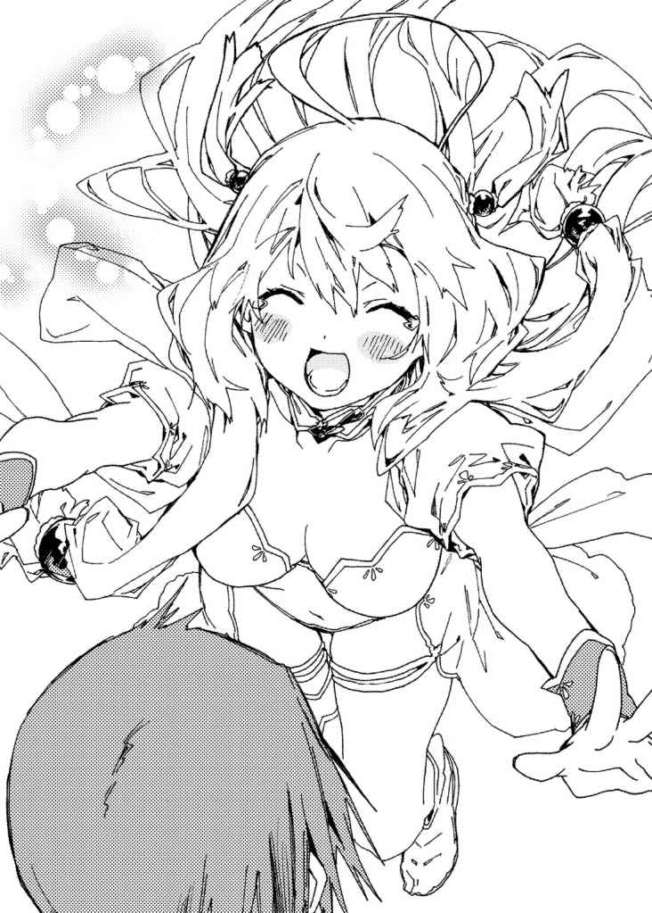
得意満面に喜びを爆発させるアイリスのうしろには、スノウが佇 んでいた。負けたとは思えないほどの清 々 しい笑 みを浮かべ、
「アイリスお姉ちゃん、強かったのっ！ 楽しかったの！」
「よかったですね、スノウ様」
明るく笑うスノウを見て、シャロンも満足そうだ。
これにて嫁トーナメントは無事終 了 ――。結婚式は『アイリス』『スノウ』『ミスト』『リリー』『シャーロット』『カトレア』『ジュナ』『ミモザ』『ルメリア』『カンナ』の順となった。
「わし、いますぐに結婚式がしたいのじゃ！ 翔真とキスするのじゃ！ 赤ちゃん作るのじゃ！」
アイリスは大興奮だ。いますぐベッドに倒 れこみ、その場で子作りを始めそうな気迫を感じる。
「落ち着け。今日はゆっくり寝 て疲れを落としたほうがいいぜ。お前、寝不足だろ？」
「じゃ、じゃが、そなたとキスしたいのじゃ！」
「俺もだ。けど、せっかくの晴れ舞台なんだ。いまでも綺 麗 だが――しっかり寝て、目の下のくまを消して、結婚式で綺麗な顔を見せてくれ」
アイリスの白い頬に、さっと朱 が差した。
「そ、そなたがそう言うのなら、今日は寝るのじゃ。じゃ、じゃが、明日がいいのじゃ。明日、そなたとキスしたいのじゃ！」
「いいぜ」
「やったーっ！ 楽しみなのじゃ！ いよいよ明日、そなたとキスできるのじゃ！ ......ところで、なぜ全員集まっておるのじゃ？」
「宝箱の中身を確 認 しようと思ってな」
「そうじゃった。すっかり忘れておったのじゃ。なにが入っておるのじゃろうなぁ」
アイリスがわくわくとした眼差しを向けてくる。
そうして全員の視線が集まるなか、翔真は宝箱を具現化させた。玉手箱のように厳重に封がされたそれを、翔真は慎重な手つきで開ける。
そして......嫁たちは、ほうけたように目をまるくした。
そこに入っていたのは――歴史を感じるモノクロ写真だったのだ。
「......なによ、これ？」
「吾 輩 が見たところ、女性なのだよ」
「よ、よかったのだ。えっちな下着だったら、どうしようと思っていたのだ」
「これが宝じゃと......？」
予期せぬ宝の登場に、嫁たちは戸 惑 っている。
そんななか――
（もしかしてとは思っていたが......まさか、本当にこれを宝にするとはな）
翔真だけが、納得したように苦 笑 していた。
モノクロ写真に写っている、大きな瞳が印象的な和服を纏 った女性。
それは、敦盛の愛妻にして翔真の祖母――竜 胆 綾 女 であった。
若かりし頃の写真を見るのは本当にひさしぶりだったため、最初は戸惑ってしまったが......
意味を理解した瞬間、敦盛の愛妻家ぶりに思わずにやけてしまう。
（じいちゃん......あんた、ばあちゃんのこと好きすぎだろ）
この宝は、最高神に勝利した褒美と同等の価値があるものとして隠 されていたのだ。
そして敦盛は、宝箱に竜胆綾女の写真を隠した。
なぜなら敦盛は、竜胆綾女を世界一の美女だと信じているから。
――綾女の写真は、宝と称 するに相応 しい。
――その価値は、どんな財宝にも勝っている。
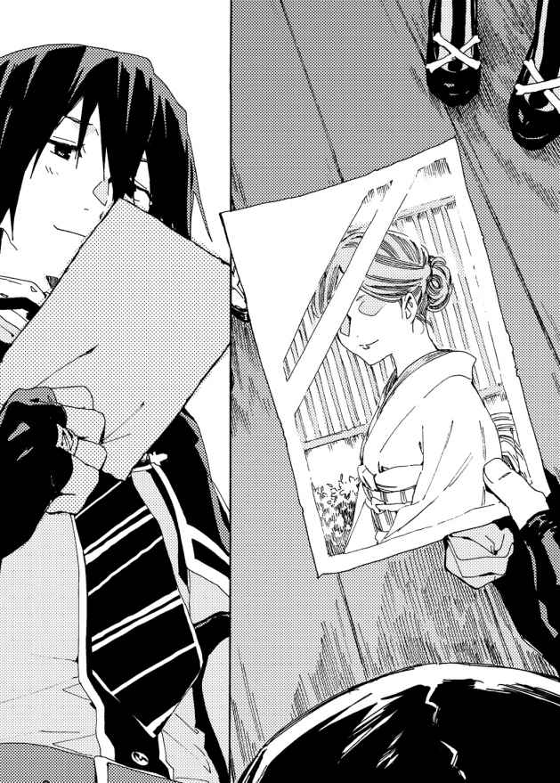
――美しすぎる綾女の写真を手に入れた者は、泣いて喜ぶに違 いない。
敦盛は、心の底からそう信じていたのである。
「ねえ。どうしてこれを嫁 全員で見なきゃならないわけ？」
シャーロットは戸惑っている。
嫁がいる場合は見ないほうがいい。
その警告は『竜胆綾女を見ると叶わぬ恋をしてしまい、一生浮気心に悩 まされることになる』という意味を持つ。
心から嫁を愛しているなら一 緒 に見ろ。
その忠告は『そばに愛する嫁がいれば、綾女に恋心を抱 かずにすむ』と思ってのことだ。
翔真は祖母に恋心など抱かないが......
「なぜわしらの顔を見るのじゃ？」
嫁たちの顔を見ると、アイリスたちがきょとんとする。
敦盛にとって、嫁の存在こそが宝である。その気持ちが、いまの翔真にはよくわかる。
翔真を心から愛し、競いあってまで結婚式の順番を決めた嫁たち――。
いくら大金を積もうと、どんな魔札を使おうと、愛を手に入れることはできないのだ。
かけがえのない嫁たちがそばにいると思うだけで、翔真は幸せな気持ちに包まれる。
嫁たちを幸せにするためにも、まずは明日の結婚式を成功へと導かなければ。
敦盛の遺 した家族写真を見て――幸せそうにほほ笑む祖母の姿を見て、翔真は嫁たちを一生大事にしようと誓うのであった。
《 第五幕 祝砲 》
嫁トーナメントから一夜明けても、クヌル平野のお祭り騒ぎが収まることはなかった。商業区のいたるところに露 店 がひしめき、朝から大 賑 わいである。
なぜなら今日から連日で全権代理者 の結婚式が催 されるのだから。
おまけに翔 真 の結 婚 相手は各門派 の全権代理者――アストラル史上初となる全権代理者同士の結婚式が連日行われるのだ。
異種族共存を謳 うクヌル平野の民 にとっては、寝る間も惜 しんで祝福するべきイベントなのである。
もっとも、初日の結婚相手のアイリスは全権代理者ではないが――彼 女 は翔真とともにクヌル平野を開 拓 した功労者だ。アイリスの門出を祝いたいという民は大勢いる。
挙式を終えたふたりが披露宴と称して大通りを歩きまわる噂 はあっという間に広まり、民は翔真とアイリスが通りかかるのをいまかいまかと待ちながら、お祭り騒ぎを楽しんでいるのであった。
実際にその光景を目にしたわけではないが――クヌル平野が幸せムードに包まれていることは、屋内にいるシャーロットにも伝わってきた。
（ほんと、賑やかな町ね。最近まで荒 野 だったなんて信じられないわ）
屋外から聞こえてくる賑々しい声に、シャーロットは思わず唇をほころばせる。
この騒ぎを耳にしていると、嫁トーナメントに負けた悔しさなど吹 き飛んでしまう。
今日は心からアイリスを祝福できそうだ。
（だけど、いつ始まるのかしら？）
シャーロットがこの場にやってきて一時間近く経 つが、アイリスと翔真はいまだに姿を現していない。
もっとも、それも無理からぬ話である。なにせ急遽決まった結婚式なのだから。
嫁トーナメントが終わったあと、シャーロットたちはひとまず自治区 へと引き返した。そして自分たちの結婚式の予定を立てていると、翔真が〈碧落からの語りかけ 〉で明日のスケジュールを伝えてきたのだ。
スケジュールといっても、聞かされたのは集合時間だけ――日が昇って間もないうちに集合しろとのお達しだった。
参加者の都合などお構いなしの集合時間。間違いなくアイリスが立てたスケジュールだ。
とはいえアイリスには翔真がついているのだ。頼りがいのある翔真なら、急遽決まった結 婚 式 を成功へ導くことができるはずだ。
クヌル平野を訪 れ、結婚式場を目にした瞬間、シャーロットは結婚式の成功を確信した。
（ほんと、翔真っていろんな魔札 を持ってるわね）
クヌル平野に悠 然 と佇む古びた城――。そのそばに立派な造りの神殿が佇んでいたのだ。
急遽建設したとは思えないし、翔真の魔導指輪 に保管されていたに違いない。こんなに立派な神殿で挙式をすれば、どれだけ段取りが悪かろうと、神聖な儀式に感じられるのだ。
「シャーロット殿。私の服装に変なところはないだろうか？」
となりに座るミストが、そわそわしながらたずねてきた。いつもの胸当てを外し、落ち着いたドレスに身を包んでいる。
「心配しなくても似合ってるわよ。派手すぎないし、ちっとも変じゃないわ」
今日の主役はアイリスなのだ。花嫁以上に目立つ格好をするのは避 けたほうがいい。
目立つ格好をして翔真の気を引いてしまうと、アイリスは嫉 妬 するはずだ。
いつもならアイリスの嫉妬などお構いなしに翔真を誘 惑 するところだが、今日は一生に一度の晴れ舞 台 なのだ。
シャーロットたちも結婚式を成功させたいのである。
「で、では髪はどうだろうか？」
「ちゃんと整ってるわ」
「そ、そうか。ならば顔はどうだろうか？」
「顔色もばっちりよ」
「よ、よかったのだ。ならば――」
「ああもうっ！ あんた気にしすぎよ！」
シャーロットがあきれたようにため息をつくと、ミストは毅然とした態度で言う。
「アイリス殿は、我らの大事な友人なのだ。その結婚式を台無しにしないよう、ちゃんとした装いをしなければならぬのでな」
「わかってるわよ。あいつ、今日という日を楽しみにしてたんだもの」
「うむ。ゆえに、我らは心からアイリス殿を祝福するのだ。我らの両手が腫れ上がるまで、拍手を送ってあげるのだ」
「そうね。それくらいしないと、ものすごく静かな結婚式になっちゃいそうだものね」
なにせ参加者はごくわずかなのだから。
真っ白なバージンロードが扉から祭壇までまっすぐに延び、それを挟むようにして横長椅子が並んでいる。
詰めて座れば一〇〇人以上を収容できるが、室内には一二人しかいなかった。
ルメリアに、ミストに、スノウに、シャロンに、シャーロットに、ジュナに、ミモザに、カトレアに、カンナに、ボタン。
最前列には青みがかった髪 の娘 ――アイリスの妹のティナが座り、祭壇のそばでは審判精霊のニンファがそわそわしている。
何度となく正妻だと豪語していたし、あんなに結婚式を待ち遠しそうにしていたのだ。てっきり大勢の前で堂々と正妻を名乗り、翔真と口づけを交わすと思っていたのだが......アイリスは、ごく親しい友人しか誘っていないようだ。
そのうちのひとりに選ばれたことが、シャーロットは嬉しかった。......まあ、嫁たちにキスを見せつけたいだけかもしれないが。
「少人数でお祝いするのもいいけど、あたしはもっと大々的にしたいわ。そっちのほうが結婚式って感じがするもの」
「私はこれくらいのほうがいいのだ。大勢に口づけを見られるのは恥ずかしいのでな」
「......たしかにそうね」
夢にまで見た翔真との口づけだが、いざその瞬間が近づくと緊張してしまう。
大勢に見られるのだと思うと、恥ずかしさは倍増だ。
（でも、キスで恥ずかしがってるようじゃ、赤ちゃんなんて作れないわ）
シャーロットは翔真との子作りを待ち望んでいるのだ。あと数日で愛する翔真に抱いてもらえるのだと思うと、恥ずかしい気持ち以上に喜びが湧いてくる。
できることなら結婚式が終わってすぐに子作りをしたいところだが......
「ねえ、ミスト。あんたって赤ちゃん作るの？」
ミストが咳きこんだ。
「な、なぜそんなことを訊 くのだっ!? 」
「いいから教えてちょうだい。これは大事なことなのよ」
有無を言わさぬ真 剣 な眼差しで見つめると......ミストは伏 し目 がちになり、うなずいた。
「......私も、赤ちゃんがほしいのだ」
「それって、結婚式が終わった日に翔真に抱いてもらうってこと？」
「そっ、それは......」
かあああっと顔を赤らめるミスト。
「......そ、そのつもりなのだ。私には床 の作法などわからぬが......翔真殿に身を委ねれば、なんとかなると思うのでな」
「そう......。てことは、あたしのときはくたくたになってるかもしれないってことね」
翔真は今日、アイリスと子作りするだろう。さすがにスノウを抱きはしないだろうが、そのあとミストにリリーと二夜連続で子作りに励むのだ。
シャーロットの順番がまわってくる頃には、さすがの翔真もへとへとになっているかもしれない。
だとしても、翔真には頑張ってもらわなければならないのだ。
（アイリスに、ミストに、リリーに......三人ともすごいおっぱいしてるし、あたしの裸 を見ても興奮してくれないかもしれないけど......でも、ぜったいに興奮させてやるわっ！ それに翔真が疲 れてるなら、あたしが動けばいいだけだし......気持ちよくなってきたら、翔真も頑張ってくれるはずだし......）
妄 想 を繰り広げていると、身体 がじわじわと火 照 ってきた。
神聖な日に神聖な場所でえっちな妄想を膨 らませてしまうなんて、罰 当 たりにもほどがあるが......いけないことだと考えれば考えるほど、イメージが膨らんでしまうのだ。
「シャーロットお姉ちゃん、おトイレ我 慢 してるの？」
黙 っているのが退 屈 だったのか、前列に座 っていたスノウが会話に参加したそうに身を乗り出してきた。
シャーロットはびくっと震 える。
「が、我慢なんてしてないわよ」
「じゃあ、どうしてもじもじしてるの？」
「こ、これは......違うわ。ただの癖 よ」
シャーロットは咄 嗟 に誤 魔 化 す。友人の結婚式でえっちな妄想をしていたことがばれてしまうと、末代までの恥である。
「ところで、スノウはまだ赤ちゃん産んだりしないわよね？」
ちょうどいい機会なので、シャーロットはたずねてみた。
スノウは幼く、どう見ても出産できるとは思えないが......愛しあうことはできるのだ。
スノウと愛しあえば、シャーロットを抱く頃には翔真はへとへとになっているはずだ。翔真に一晩中愛してもらうためにも、一日くらい休 憩 させたほうがいいだろう。
「わたしも赤ちゃん産むのっ！」
スノウが元気よく叫ぶと、となりに腰 かけていたシャロンが思いきり咳きこんだ。
「な、なにを言ってるんですかスノウ様!? 赤ちゃんなんて五年早いですよ！」
「だいじょうぶなのっ。おっぱいはシャロンに出してもらうのっ！」
「おっぱいの問題ではありません！ それに私は出ません！」
スノウは意外そうに目をまるくした。
「どうして出ないの？」
「そ、それは......赤ちゃんがいないからです」
「赤ちゃんを産めばおっぱい出るの？ じゃあ、わたしがおっぱいあげるのっ！」
シャロンは頭を抱 える。疲れたようにため息をつき、
「いいですか。スノウ様は、まだ赤ちゃんを産むことができないんです」
「でも、わたしは翔真お兄ちゃんとちゅーするのっ。ちゅーしたら赤ちゃんできるって、シャロンが教えてくれたのっ」
「い、言いましたけど......実を言うと、ちゅーしても赤ちゃんはできないんです」
「どうしたら赤ちゃんできるの？」
「そ、それはですね......うぅ」
シャロンはたじたじだ。困ったように眉 根 を下げ、助けを求めるようにシャーロットを見つめてきた。
シャーロットはため息をつき、スノウに優 しく語りかける。
「スノウは、翔真のことが好きなのよね？」
「大好きなの！ だって翔真お兄ちゃん、かっこいいの！ 頭を撫で撫でしてもらったら、気持ちいいの！」
「そう......。だったら、あと五年はふたりきりで過ごしたほうがいいんじゃないかしら？ 赤ちゃんができると、翔真に頭を撫でてもらえなくなるわよ？」
スノウは悲しげな顔をする。
「どうしてなの？ 翔真お兄ちゃん、わたしのこと嫌いになっちゃうの？」
「嫌いになんてならないわよ。ただ、翔真は赤ちゃんを撫でるので忙しくなっちゃうの。スノウは、もっと翔真に甘 えたいんじゃない？」
スノウはこくりとうなずく。
「わたし、もっと甘えたいのっ！ だから......赤ちゃん、我慢するの！ だってわたし、もっと翔真お兄ちゃんに撫でてほしいの！」
スノウが明るく笑って言うと、シャロンが安 堵 したようにため息をついた。ぺこぺこと感謝するように頭を下げられ、シャーロットは「あんたも大変ね」と苦笑する。
そのとき。
「悪 ぃ！ 遅くなっちまった！」
扉が開かれ、リリーが慌 ただしく駆けこんできた。スカートをひらひらと揺 らしながら、シャーロットたちのうしろに座る。
「誰かと思ったのだよ」
カトレアが、となりに腰かけたリリーをじろじろと見てからかうような口調で言った。シャーロットは同意するようにうなずき、
「ほんと、リリーがスカートなんて珍しいわね」
「あ、あんまりじろじろ見るなよな。すっげー恥 ずかしいんだからさ」
「だけど似合ってるわよ」
「うむ。可愛 いのだよ」
シャーロットとカトレアに茶化され、リリーは照れくさそうにはにかんだ。
「ありがとよ。ま、考えてみりゃ明後日 には花嫁衣装を着るわけだしな。それに比べればスカートなんざ恥ずかしくねえぜ」
「花嫁衣装って、もう用意してるわけ？」
「まあな。あたしの趣味じゃねえが、せっかくの結婚式なんだ。できるだけ綺麗な格好をして、翔真に喜んでほしいしさ」
明後日に控える結婚式のことを思い浮 かべているのか、リリーは頬 を緩 ませる。そんな彼女を見ていると、シャーロットまで幸せな気持ちになってきた。
「あんたの結婚式が楽しみね。......あたしのことも、誘ってくれるのよね？」
「ったりめーだろ。おめーはあたしの大事なダチなんだからよ。もちろん、アイリスもな。そんなわけで、今日は思いきり祝ってやろうぜ！」
「もちろんよっ！」
アイリスはシャーロットのライバルであり、友達でもあるのだ。アイリスの門出となる今日という日を、シャーロットは心の底から祝福するのだ。
そうしてシャーロットたちは、結婚式の幕開けをいまかいまかと待ち侘 びるのであった。
◆
嫁たちが神殿に集まっていた頃、翔真は城内にいた。窓から差しこむ柔 らかな日差しに暖められた室内には、翔真のほかにふたりの娘の姿があった。
キルシュとミリアだ。
昨日は日が暮れるまでガーデニングに励んでいたため、ミリアはぐっすり眠 っているが、キルシュはベッドに腰かけていた。そのとなりに座ってキルシュを見つめると、切れ長の目の下にはうっすらとくまができていた。
今日という日に緊 張 し、寝つけなかったのだろう。
「なぜここにいるんだい？ 今日は結婚式だろう？」
キルシュが戸惑いの眼 差 しを向けてくる。
「おう。見ての通り、結婚式だぜ」
いつも黒い衣装に身を包んでいる翔真は装いを新たにしていた。裁縫上手な妖 精 を生み出す〈妖精の仕立て屋 〉に真っ白なタキシードを作らせたのだ。アイリスにも同じ魔札を渡 したため、いまごろは美しい衣装に身を包んでいるはずだ。
「だったら、アイリスのもとへ行かなくていいのかい？」
「あいつは着付けの真っ最中だからな。俺 がいてもやることはないぜ」
アイリスは神殿内の更衣室にて精 霊 に囲まれ、着付けをしてもらっている。ただでさえ芸術的な美しさを誇るアイリスが、特別に気合いを入れて着飾るのだ。いったいどれほど美しい姿になるのか......顔を合わせるのがいまから楽しみである。
「時間になったらニンファから連 絡 が入るからな。それまではのんびりさせてもらうぜ」
結婚式が始まれば、いまだかつてないほど忙しくなるのだ。結婚式ラッシュが幕を開け、スノウ以外との子作りが待っている。
途方もない疲 労 感 に襲われるのは目に見えていた。
だが、それ以上に幸福感があるのだ。
可愛い嫁たちと愛しあえるのだと思うと、力が湧 いてくるのである。
「一応言っておくけど......僕 は女だよ？」
「見ればわかるぜ」
「結婚式の直前にほかの女の寝 室 にいて......アイリスは嫉妬しないかい？」
「さすがのアイリスも、姉妹としゃべったくらいで嫉妬したりしないさ。ま、お前が俺を誘惑するってんなら話はべつだがな」
「誘惑なんてしないさ。僕はもう、アイリスに嫌われたくないからね」
キルシュは心からアイリスを愛している――妹たちを愛しているのだ。
妹たちが嫌がることは二度としない。その真剣な想いが伝わったからこそ、キルシュはアイリスとティナに許されたのだ。
「心配しなくても、アイリスもティナもお前のことを嫌 ったりしないさ。いまのお前は妹想いの優しい姉ちゃんだぜ」
翔真がそう告げると、キルシュは嬉しげにほほ笑んだ。
「きみの目にそう見えているなら嬉しいよ。ところで、いまのうちに、きみに確かめたいことがあるんだけど......」
「なんだ？」
たずねると、キルシュは恥ずかしげに頬を染めた。
「......きみは今日、アイリスと愛しあうのかい？」
「そいつはアイリスしだいだが......ま、あいつはそうしたがるだろうな」
アイリスとは着付け前に別れたが、そのとき彼女は熱っぽい表情をしていた。言い方は悪くなってしまうが、アイリスは発情していたのだ。
結婚式が終わり、披露宴を済ませたら、すぐにでも子作りしたがるだろう。
「だとすると、僕たちはべつのところに移ったほうがいいんじゃないかな。あの娘 がどれくらい大きな声を出 すのかはわからないけど......僕たちに声を聞かれるんじゃないかって心配するだろうからね」
キルシュはそう言うと、ちらりとミリアを見た。
アイリスの喘ぎ声は〈密談空間 〉で防げるが――心の声を防ぐことはできない。城内にミリアがいれば、心の声を聞かれる怖 れがあるのだ。
「心配いらねえよ。俺とアイリスは、今日はべつのところに泊 まるからな」
キルシュは安堵したように頬を緩める。
「気を遣わせてしまったね」
「俺はべつに聞かれても構わねえけどな。ただ、アイリスがお前たちに気を遣わせるのを嫌がったんだ」
「アイリスが？」
「ああ。きっとお前らに居心地の悪さを感じてほしくなかったんだと思うぜ。アイリスも、お前らと同じ屋根の下で暮らせることを喜んでるからな」
「......そう」
キルシュは嬉しげに瞳 を潤 ませた。
「んぅ......」
と、ミリアが寝返りを打つ。
うっすらと目を開け、大きなあくびをもらした。
「あふ......おはよう、キルシュ姉様......っ」
くりっとした瞳で翔真を見つけた瞬 間 、ミリアは目を見開いた。
「ど、どうしてここにいるの？ アイリス姉様の結婚式じゃないの？」
「アイリスは着付けの真っ最中だ」
「で、でも、そばにいなくていいの？」
「もちろんそばに行くぜ。けど――」
『翔真さん！ そろそろお時間なのです！』
と、ふいにニンファの声が脳内に響 いた。アイリスの着付けが終わったらしい。翔真は脳内でニンファに返事をすると、キルシュとミリアの顔を見比べながら言う。
「アイリスのそばに行く前に、やることがあってな」
翔真は魔導指輪から四枚の魔札を取り出した。
それをふたりに渡すと、キルシュとミリアは顔を強 ばらせた。
「これ......」
戸惑うように目をまるくするキルシュに、翔真は告げる。
「そこに書いてある通り――そいつは〈千里眼 〉と〈祝砲〉の魔札だ」
ふたりに渡した〈祝砲〉は、アイリスが〈創造 〉の力で生み出したクラッカーのような音を奏でるオリジナル魔札だ。
アイリスが言うには、『遠く離 れていても聞こえる』らしく、この城で鳴らせば、その音は間 違 いなく神 殿 まで届くのだとか。
アイリスは、キルシュとミリアを結婚式に招待してもいいと考えていたが......しかし、ふたりが祝いの席に顔を出すことを遠慮することは目に見えていた。そこでアイリスは、翔真に〈祝砲〉を託したのである。
それを渡してくれと頼 まれ、翔真はキルシュたちのもとを訪れたのだった。
「〈千里眼〉で俺たちの結婚式を見て、俺とアイリスがキスしたら、そのときは遠慮なく〈祝砲〉を使ってくれ」
キルシュは、力なく首を振 る。
「ミリアはあの日、なにもしていないけど......僕にこれを使う資格はないよ......」
キルシュは〈祝砲〉を直視することすらできない様子だ。
キルシュは遥 か昔、アイリスの全権代理者就任式の日、強化に強化を重ねた〈祝砲〉で大勢の人生をめちゃくちゃにしてしまった。そんな前科がありながらアイリスの結婚式に再び〈祝砲〉を手にすることになったのだ。うろたえるのも無理はないのである。
暗い面 持 ちのキルシュとミリアに、翔真は真剣な眼差しを向ける。
「今日はアイリスにとってめでたい日だ。アイリスの幸せを、お前らは祝ってやることができるか？」
キルシュとミリアは顔を見合わせ......力強くうなずいた。
「祝うさ。僕は......できることなら、あの日をやりなおしたいと思っているよ」
「ミリアもだよ。ミリアも、ちゃんとお祝いすればよかったって思ってるよ」
キルシュとミリアは、遥か昔に犯した過ちを心から悔 いている。
翔真に心の声を聞く術 はないが、ふたりの真剣な想いははっきりと伝わってきた。
「どんな魔札を使おうと、人生をやりなおすことはできねえんだ」
「わかっているさ......」
顔を曇 らせるキルシュに、翔真は優しく微 笑 する。
「だが、やりなおすことはできねえが、出直すことはできる。だから今日は、アイリスを祝福してやってくれ」
翔真の言葉に、キルシュとミリアは涙を浮かべてうなずいた。
「ミリア、お祝いするよ！ だってミリア、アイリス姉様のこと好きだもん！」
「今度こそ......本当に、今度こそ、アイリスを心から祝福すると誓うよ」
キルシュとミリアの誓いに、翔真はにこりとほほ笑みかけるのであった。
◆
キルシュとミリアに〈祝砲〉を渡した翔真は、神殿内の更衣室へと瞬間移動 した。
「やっと来たのじゃ！ 待っておったのじゃからなっ！」
アイリスが安心したように声を上げる。
そんな彼女の姿を見て、翔真はすぐに返事をすることができなかった。
アイリスは、いつにも増して真っ白な装いだったのだ。
胸 元 は大胆に切り開かれ、豊穣たる胸の谷間が女性としての色気を感じさせる。
幾 層 にも重ねられたレースのスカートがふんわりと広がり、引 き締 められたウエストを美しく際立たせている。
上質な光 沢 を放つ衣装――ウエディングドレスに身を包 んだアイリスは、この世のものとは思えないほどの美しさであった。
「ニンファから連絡が来たのになかなか姿を見せぬから、心配しておったのじゃぞっ！」
「悪いな。ちょっとキルシュたちと話しこんでてさ」
幻想的な嫁の姿に思わず見入っていた翔真は、気を取りなおすように笑みを浮かべる。
するとアイリスは、期待と不安の織り混ざった顔で見つめてきた。
「キルシュとミリアは......受け取ってくれたじゃろうか？」
「おう。祝ってくれるって言ってたぜ」
ぱあっと顔を輝 かせるアイリス。安心したように表情を緩ませると、甘えるようにすり寄ってきた。
そしてそのまま押し倒される形で、翔真はソファに腰かけた。アイリスがとなりに座り、ほっそりとした両 腕 を首に絡めてくる。
互いの息がかかる距 離 にまで顔を近づけ、甘くささやいてくる。
「なかなかそなたが来ないから、寂しかったのじゃからな」
翔真はアイリスの髪を撫 でながら、
「抱きつくのは構わねえが、せっかくのウエディングドレスが乱れねえか？」
「そなたが乱してくれるなら、わしは構わぬのじゃ......」
瞳を潤ませ、誘惑するような眼差しを向けてくる。
「のぅ......わし、可愛いじゃろうか？」
「おう。可愛いぜ」
「色っぽいじゃろうか？」
「色っぽいぜ」
「だ、抱きたくなったじゃろうか......？」
「抱きたくなったぜ」
素 直 に想いを告げると、アイリスがじわじわと頬を紅潮させる。翔真の耳に唇 を近づけ、熱い吐 息 を吹きつけてくる。
「あとちょっとだけ我慢するのじゃ。それとも......いまここで愛してくれるのじゃろうか......？」
言い方は悪いが、やはりアイリスは発情してしまっている。結婚式を直前に控え、抑えこんでいた感情が決壊寸前になっているのだ。
そろそろ式場に入場することになるのだ。いまここでアイリスを抱くわけにはいかない。
「お前を抱くのはすべてが終わったあとだ。今日までずっと我慢してきたんだ。あと半日くらい我慢できるよな？」
「わ、わし、無理かもしれぬ......」
「あとちょっとの辛抱だぜ？」
「わ、わかっておるのじゃ。じゃが......き、昨日から身体が熱くてしかたがないのじゃ。身体が疼 いてしかたがないのじゃ......。わ、わし、変態なのじゃろうか？」
結婚式の直前に交わすような会話ではないが、アイリスは真剣に悩んでいるのだ。
結婚式を成功させるためにも、アイリスを落ち着かせなければ。
「たとえ変態だろうと、俺はお前のことを嫌いになったりしないさ。それに俺だって早くお前を抱きたいからな」
「で、では、もう抱いてほしいのじゃ......。わし、頭がおかしくなりそうなのじゃ......」
「残念ながら、いまここでアイリスを抱くことはできねえんだ。理由はわかるな？」
「わ、わかるのじゃ。だって、もう結婚式が始まるのじゃからな......。で、でも、身体が疼くのじゃ......」
アイリスがとろんとした表情で嘆く。
「お前はどうしてほしいんだ？」
「抱いてほしいのじゃ」
「それ以外でだ。それ以外なら、なんでもしてやるぜ」
アイリスの感情を鎮めるには、とにかく満足させるしかないのだ。もちろん抱く以外の方法で。
「で、では......抱きしめてほしいのじゃ」
「それでいいのか？」
「うむ。強く強く......背骨が砕けるくらい、思いきり抱きしめてほしいのじゃ」
「それくらいならお安い御 用 だ」
翔真はアイリスの手を取って立ち上がると、ほっそりとした身体を強く抱きしめた。
手 触 りの良 いレース生地の感触を楽しみつつ、ぎゅっと抱きしめていると......しだいにアイリスの荒っぽい呼吸が静まっていく。
力強く抱 擁 されることで、抱かれているような気分になってくるのだろう。
「落ち着いたか？」
そっと抱擁を解いて見つめると、アイリスは頬を紅潮させたままうなずいた。
「う、うむ。落ち着いたのじゃ。......じゃが、もうしばらくしたら、また火照りそうなのじゃ」
期待するような視線を送られ、翔真はにこりとほほ笑 んだ。
「そのときは、望むままにしてやるぜ」
「うむっ。わし、早くそなたに抱 かれたいのじゃっ」
アイリスはうきうきとした口調でそう言うと、満面の笑みになる。その顔を見ていると、こっちまで幸せになってくる。
「幸せそうだな」
「うむっ！ わしは幸せじゃ！ そなたがわしを幸せにしてくれたのじゃっ！ じゃからわしも、翔真を幸せにしてあげるのじゃ！」
「俺はもう充 分 幸せにしてもらったぜ」
アイリスは魔札の生みの親だ。
アイリスがいなければ、翔真は敦 盛 に魔札で遊んでもらうことができなかった。両親の死から立ちなおることができず、鬱 屈 とした人生を歩むことになっていたのだ。
翔真が明るく振る舞 えるのは、アイリスのおかげなのである。
「もう充分幸せなら、もっともっと幸せにしてあげるのじゃっ」
「だったら、子どもを作らねえとな」
「うむっ！ わし、元気な赤ちゃんを産むのじゃ！ そしてそなたと幸せな家庭を築くのじゃ！」
幸せそうにほほ笑むアイリスを見ていると、翔真は自然と幸福感に包まれる。
と、そのとき。
『そろそろお時間なのです！ いつでも来ていいのです！』
翔真の脳内にニンファの声が響いた。アイリスの頭にも届いたらしく、急にそわそわし始めた。
翔真はアイリスの手をぎゅっと握り、ほほ笑みかける。
「じゃ、行こうぜ」
「うむっ。行くのじゃ！」
翔真とアイリスは手を繋 いだまま更衣室をあとにすると、そのままの足取りで扉 のほうへと歩いていく。
式場へと通じる重 厚 な造りをした扉の前には、ふたりの精霊が佇 んでいた。翔真たちの姿を視認した精霊はぺこりと一礼し、ぶつぶつとつぶやいた。どうやらニンファに連絡を取ったらしく、
『それでは――新郎新婦のご入場なのです！』
室内から聞こえた幼い声に、精霊たちが扉を開ける。
その途 端 、拍手が巻き起こった。
一三人の拍手とは思えない大きさだ。ひとりひとりが一生懸命に手を叩いてくれている――祝福してくれているのだ。
その想いが伝わったのか、アイリスは感極まったように涙 ぐんでいた。祭壇の前に到着する頃 には、号 泣 しているかもしれない。
「泣くのはまだ早いぜ」
「わ、わかっておるのじゃ。こ、これでよいじゃろ」
小声で告げると、アイリスはにかっと笑う。
翔真はにこりとほほ笑みかけると......真っ白な絨 毯 の上を、アイリスの歩調にあわせてゆっくりと進んでいく。
「本日はまことにおめでとうございます！」
祭壇前にたどりつくと、ニンファがうわずった声で言った。
これまで何度も神託遊戯 をジャッジしてくれたニンファだが、さすがに結婚式の司会を務めるのははじめてらしい。
「え、と......新郎は竜 胆 翔真さん！ 新婦はアイリスさんなのですっ！」
たどたどしい口調ながらも、結婚式を成功させようという気持ちが伝わってくる。
とはいえ、結婚式の司会を務めるのははじめてだろうが、それほど難しいことではない。
なにせアイリスたっての希望で――
「それでは最後に――おふたりに誓いのキスをしてもらうのです！」
キスして終わりという、シンプル極まりない挙式になったのだから。
ニンファの言葉に、室内がしんと静まりかえる。
無言で見つめてくるアイリスを、翔真は見つめ返した。
熱っぽく瞳を潤ませていたアイリスは、そっと目を閉ざすと、唇を尖 らせるようにして、翔真に向けてくる。
艶々とした小さな唇に、翔真は自分のそれを近づけていき――
「愛の誓いを立てたおふたりに、盛大な拍手をお願いするのです！」
パァン、パァン、とどこからともなく祝砲が聞こえてくるなか、式場は割れんばかりの拍手に包まれたのであった。
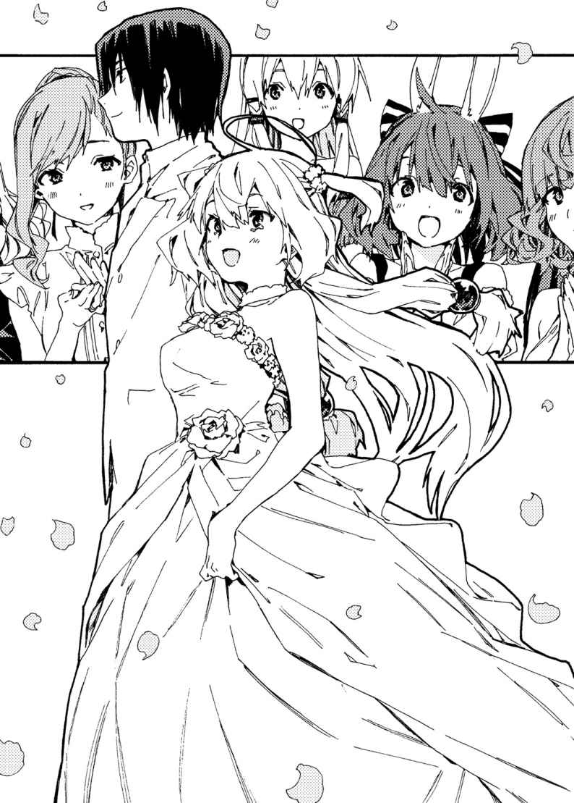
《 終幕 幸せな日常 》
クヌル平野で一、二を争う人気の食事処 〈うさぎ亭 〉――。その窓 際 の席に、対照的な髪の色をしたふたりの男女が腰かけていた。
「ごちそうさん。さすがカンナの手料理なだけあって、すげえ美味 かったぜ」
満足げに笑みを浮かべたのは、黒いマントを羽織り、革製のブーツを履いた青年だった。
あまり見かけない黒髪に、がっしりと引き締まった体つき。前髪は目にかかるほど長く、黒い瞳を優しげに細めている。
「うむうむ。カンナの手料理は美味しかったのぅ。お手本のような味付けじゃ！ わしもいつかは、こういう料理を作れるようになりたいのぅ」
美しい声で同意したのは、雪のように白い娘である。真っ白な衣装に華 奢 な身体を包みこみ、白みがかった銀 髪 を腰のあたりまで伸 ばしている。
ふたりに料理を絶賛され、うさぎのような耳としっぽを持つ娘――〈うさぎ亭〉の初代看 板 娘 であるカンナは、嬉 しげにはにかんだ。
「ありがとっ！ 翔 真 くんとアイリスさんに褒 めてもらえて、すっごく嬉しいよ！」
「ママ、おめでと！」
四歳 ほどの小さな女の子が、カンナの足もとではしゃいでいる。赤みがかった髪 の毛 を肩 口 で切り揃え、真っ黒なうさぎのような耳を頭の上で揺らしている。
食事処〈うさぎ亭〉の二代目看板娘として客たちに愛される彼 女 は、翔真とカンナの娘 である。
「うん！ ママ、パパに褒められちゃった！」
「パパにすごいってゆわれた！」
「うん！ すごいって言われちゃった！」
「ママ、すごい！ パパもすごい？」
小首を傾 げる愛 娘 に、カンナはにっこりとほほ笑む。
「うん！ パパはすごいよ！」
「パパ、すごい！」
ぱあっと顔を明るくさせる愛娘。
その頭を、翔真は優しく撫でてやる。
カンナとのあいだに娘が生まれて早四年。翔真はほとんど毎日〈うさぎ亭〉に足を運び、愛する嫁 と娘の元気な姿を目に焼きつけているのであった。
「おばちゃんも、すごい？」
「わ、わしはおばちゃんではないのじゃ......というか、けっこう頻繁に顔を合わせておるのに、わしの名前は覚えてくれぬのじゃな......」
「すごくない？」
悲しげな顔を向けられ、アイリスは無理やりな笑みを浮かべる。
「わしもすごいのじゃ！」
「おばちゃん、すごい！」
ぱちぱちと拍手され、アイリスはまんざらでもない様子だ。
「んじゃ、俺たちはそろそろ行くぜ」
席を立つと、翔真はカンナの頬にキスをする。カンナは嬉しげに頬を緩め......客たちがにやにやしながら見ていることに気づいたのか、じんわりと頬を赤らめた。
「パパ！ ちゅーがいい！」
「はいはい。いくらでもちゅーしてやるぜ」
ぴょんぴょんと跳ねながら手を伸ばしてくる娘を抱きかかえると、翔真は柔らかな頬にキスをする。
それから嫁と娘に見送られ、翔真とアイリスは〈うさぎ亭〉をあとにする。
店を出ると、通りはひとで賑 わっていた。今日は平日だというのに、嫁トーナメントのとき以上の人通りである。
以前はクヌル平野の中心部――翔真の居城に近ければ近いほど栄えていたが、いまではほとんど大差ない。どこへ行っても多くの店が軒を連ね、ここと同じように賑わっている。
全権代理者 たちの第二の故郷ということで興味を引かれたのだろう、ほかの自治区 から引っ越 してきた者もいるが――クヌル平野の人口が増えた最たる要因は、出産ラッシュだ。
共同作業で親 睦 を深めた民 たちは次々と結 婚 していき、子どもを産んだのである。
そのため大通りには子連れが多く、異種族同士の結婚も珍しくないため、混血種 も散見できた。かつては珍しい存在だった混血種だが、いまでは奇異の視線に晒 されることなく、平和に楽しく暮らしているのであった。
「おおっ！ 翔真じゃねえか」
そうして賑 々 しい声が飛び交う道を歩いていると、狼 のような風 貌 の男――フレイクとばったり出くわした。
「よォ、フレイクじゃねえか。お前も飯か？」
「飯っつーか、デザートを食いに来たんだ。こいつらと一 緒 にな」
フレイクのうしろには、いかつい顔つきの男たちが佇んでいた。翔真とアイリスに深く頭を下げ、フレイクに尊敬の眼差しを向ける。
「フレイクさん、全権代理者様とダチってマジだったんすね！」
「すげえ親しげに話してるじゃないっすか！ マジすげえっす！」
「まあな！ オレと翔真は神託遊戯 をした仲だからな！」
男たちに尊敬され、フレイクはご機 嫌 だ。
するとアイリスが目を細め、茶化すように言った。
「そなた、ぼこぼこにやられておったがのぅ」
「そ、それを言うんじゃねえよ！」
「フレイクさん、ぼこぼこにされたってマジっすか！」
「マジだよ！ オレは神託遊戯が弱いんだよ！ 文句あっか!? 」
「文句なんてないっす！ 俺、フレイクさんの技術に惚れたんすから！」
「フレイクさんの建てた家、マジでおしゃれっすからね！ 尊敬っす！」
「まあな！ オレのセンスはずば抜 けてるからな！」
男たちに絶賛され、フレイクは気分を良くした様子だ。
かつてはまったく人望がなかったフレイクだが、いまでは多くの部下に慕 われていた。
フレイクは毎日必死に仕事をこなし、数 ヶ 月 前に独立を決意した。親方たちもフレイクならやっていけると確信したのか、快く送り出してくれたようで――フレイクのセンスに惚れた男たちが集まり、彼 は一〇人近い部下を率いる棟梁になったのである。
「ぐだぐだしゃべってねえで、さっさと店に入りやがれ！」
男たちのなかから怒号が飛んだ。うしろのほうに佇んでいたクマのような風貌の巨漢、グズマが怒鳴ったのだ。
フレイクが苛立たしげにグズマを睨みつける。
「うるせえッ！ おめーのわがままを聞いて、わざわざ店から遠いここまで来てやったんじゃねえか！ ちったぁ感謝しやがれ！」
「実績のある建築店でもよかったのに、昔のよしみでおめーんとこに店を建ててくれって依頼してやったんだぞ!? おめーこそ感謝しやがれ！」
「こっちこそ昔のよしみで割引価格で引き受けてやったんだ！ 感謝しやがれ！」
「そのお礼にデザート代はオレが払 うって言っただろうが！ 感謝しやがれ！」
「さっきから黙 って聞いてりゃ生意気な口叩 きやがって！ オレのことを『フレイク様』って呼んでた昔のおめーはどこに行っちまったんだ！」
「過去の栄光をいつまでも引きずってんじゃねえ！ おめーのことを様づけで呼ぶのは、インディだけだ！」
「インディはもう様づけで呼んでくれねえよ！ 結婚してガキができたから父親の威厳を出したいとか言って、様づけで呼んでくれなくなっちまったんだよ！」
「結婚したのになんでオレに報告が来ねえんだよ！ クロッカスの野郎はちゃんと報 せてくれたぜ!? ガキの顔も見せてくれたぜ!? 」
「オレが知るかよ！」
「お前ら、喧嘩しに来たのか？」
「というか、なぜ喧嘩しておるのじゃ？」
翔真とアイリスがあきれたように言うと、フレイクは愚 痴 をこぼすように言う。
「聞いてくれよ翔真！ グズマの奴 、『最高のお菓子屋を建てるには、最高のデザートを食う必要がある』とかわけのわからねえこと言いやがるんだぜ！」
「わけのわからねえことじゃねえッ！ オレはなぁ、一目見ただけで『最高のデザートを扱 ってる』ってわかる店を建ててほしいんだよ！ けど『最高のデザート』ってだけじゃイメージがぼんやりしすぎるから、おめーらに最高のデザートを振る舞ってやろうと気を利かせてやったんだよ！ 『こういうデザートを扱ってる店を建てればいいんだな』って思ってほしかったんだよ！」
怒声を飛ばすグズマを、フレイクが睨みつける。
「だったらおめーの土地に〈うさぎ亭〉を建てちまうぞッ!? おめーにとって、この店のデザートが『最高のデザート』なんだろ!? 」
「まったく同じ店を建てたら、お客様が二号店だと勘 違 いするかもしれねえだろうが！ そしたら〈うさぎ亭〉の方々に迷 惑 がかかっちまうだろうが！」
かつて〈うさぎ亭〉に多大な迷惑をかけた男の言葉とは思えないが、グズマはこの店に心酔しているのだ。
空腹に倒 れそうになりつつも〈うさぎ亭〉を訪 れ、翔真たちに謝罪した日。グズマは、カンナにデザートを一品おまけしてもらい、その味に惚れたのである。
ちなみにグズマの兄貴分だったウィードは肉料理の美味さに感動し、〈うさぎ亭〉で皿洗いをしつつ料理のコツを教わっているらしい。その子分たちもまた、グズマたちと同じように、それぞれの人生を謳歌しているようだ。
「喧嘩するのはいいが、店のなかでは静かにしろよな。俺の嫁と娘がいるんだからさ」
フレイクとグズマに釘を刺し、翔真はアイリスをつれて通りを歩いていく。
綺 麗 に整備された石 畳 ――。清 掃 が行き届きつつもどこか殺風景だった道の端々には、昨年頃からいろいろな花が咲いている。
二人組の若い娘が――キルシュとミリアが毎日道を見まわって手入れをしているため、道 端 の花々は美しく咲き誇っている。
ふたりが手塩にかけて育てた花に彩 られた道は、クヌル平野の民に愛されているのだ。家に飾るため、キルシュのもとまで足を運び、花を譲り受ける者もいるし――日がな一日花道を歩いて過ごす者もいるほどだ。
ほかならぬアイリスも、そのうちのひとりである。
「綺麗じゃのぅ」
花道を歩きつつ、アイリスはうっとりしている。
目的地まで飛んでいったほうが楽だが......アイリスの喜ぶ顔を見ることができるため、翔真は徒歩で帰路についているのであった。
そうしてのんびり歩いていたところ、
「あっ！ 師 匠 ！」
と、ふいに目の前に若い娘が降り立った。
空を飛びまわっていたようで、灰色がかった髪はぼさぼさになっている。
「どうしたボタン？」
「実は私、最強のコンボを思いついちゃいました！ これから精霊の管 轄 区 までコンボに必要な魔札 を買いに行きます！ 師匠も一緒に行きましょうっ！」
興奮気味にまくし立ててくるボタンに、翔真は期待の眼 差 しを向ける。
「最強ってのは本当か？」
「本当です！ ぜったいに負けないコンボです！」
「そんなこと言って、そなたこないだも翔真に負けておったではないか」
アイリスが茶化すように言った。
「だな。しかもノーダメージだったぜ」
「それはそうですけど！ で、でも今回は最強なんです！ だから神託遊戯しましょうよ、師匠！」
甘 えるような口調でおねだりしてくるボタンに、翔真は肩をすくめてみせた。
「いいぜ。何度だって神託遊戯してやるぜ！」
「やった！ さっすが師匠！ じゃ、一緒に精霊管轄区に行きましょう！」
「悪いが、一緒に行くことはできねえぜ。これから用事があるからな」
「魔札専門店に行くより大事な用事があるんですか!? 」
ボタンは衝撃を受けたようにあとずさった。
「今日は俺 の可愛 い嫁と子どもが城に集まるからな」
「なるほど！ だったらしょうがないですね！」
ボタンは納得したように笑う。
「師匠は神託遊戯が大好きですけど、奥 さんと子どものことも大好きですもんねっ！」
「おう。弟 子 のことも愛してるぜ」
「私も師匠のこと愛してますよ！ 師匠は私に神託遊戯のコツを伝授してくれた恩人ですからね！」
「だったら俺にダメージを与 えられるくらい強くなってくれ。それが最高の恩返しだぜ」
発破をかけると、ボタンは力強くうなずいた。
「私、今度のコンボでぜったい師匠にダメージを与えてみせますよ！」
それが虚勢ではないことを、翔真はよく知っている。
ボタンのコンボはいまのところ翔真に通用していないが、誰 にも通じなかったわけではないのだ。
全権代理者として忙 しい日々を過ごしているため頻繁にとはいかないが、ボタンは三年ほど前からスノウと神託遊戯しているのである。
三年前はスノウにダメージすら与えることができなかったが、二年前から攻 撃 がヒットするようになり、一年前からはスノウを追いこめるようになったのだ。
依然としてスノウを相手に勝利を掴み取ることはできていないが――ボタンがスノウに勝利する日もそう遠くはないだろう。
そのときこそ、ボタンは翔真のライバルになるのだ。
「お前のコンボ、期待して待ってるぜ！」
「はい！ 期待しててください！ じゃ、明日には帰ってきますからね！」
やる気を漲 らせ、ボタンは屋根の向こうへ飛んでいった。
「あいかわらず元気じゃのぅ」
「そこがボタンの長所だぜ」
「ボタンもじゃが、そなたも元気すぎるのじゃ。だってそなたら、ほとんど毎日神託遊戯しておるじゃろ。そんなに頭を使って、なぜ疲 れぬのじゃ？」
「そりゃ、俺とボタンは神託遊戯を愛しているからな。疲れるどころか力が漲るぜ！」
明日の神託遊戯を楽しみにしながら、翔真とアイリスは悠 然 と佇む城を目指して、花に彩られた道を歩いていくのであった。
◆
城の正門を抜けたところで、翔真の耳に賑々しい声が届いた。
「みんな来ておるようじゃな」
「待たせちまったかもしれねえな」
今日は昼から嫁たちと顔を合わせる予定だったが、カンナたちと別れるのが惜しくなり、〈うさぎ亭〉に長居しすぎたのだ。
「午前中からずっと〈うさぎ亭〉におったからのぅ。そういえばそなた、カンナとなにを話しておったのじゃ？ 途 中 、一〇分くらいどこかに行っておったじゃろ？」
「カンナに甘えられてたぜ」
アイリスはぎょっとする。探 りを入れるように、
「......あの短いあいだに、抱いたのではあるまいな？」
「さすがに仕事中にはしないぜ。ちょっとキスしてただけだ」
「そ、そうじゃよな」
「それにカンナは昨日抱いたばかりだしな」
「き、昨日じゃと!? い、いつじゃ!? 夜中はずっとわしのそばにおったじゃろ！」
「昼だ」
「ひ、昼じゃと!? そなた、昼間っからカンナといちゃついておったのか!? 」
「昨日はカンナの仕事が休みだったからな。遠出する予定だったんだ」
家族旅行をするつもりが、娘が昼 寝 を始めてしまい、カンナにおねだりされたのである。
「わし、そなたが疲れてるように見えたから遠慮したのじゃぞ？ なのにまさかカンナを抱いて疲れておったとは......」
アイリスはすっかり拗 ねてしまったようだ。深々とため息をつき、
「もしかして、わしに愛想尽きてない？」
翔真は苦 笑 する。
「尽きるわけないだろ。いまも昔も愛してるからな」
「では......愛を確かめるのじゃ」
アイリスが唇を突き出してくる。翔真が自分のそれを重ねると、彼女は満足したようにほほ笑んだ。
「翔真様。アイリス様」
そうして歩きだそうとしたところ、うしろから呼びかけられた。振り返 ると、そこにはルメリアが立っていた。
「よォ、ルメリア。いま帰りか？」
「はい。お母様に、またたくさんお土産をいただきました」
ルメリアの母であるダリアは城のそばに暮らしている。ルメリアは週に一度は顔を出し、そのたびに食べ物をもらって帰ってくるのだ。
「そなたの母の手料理は美味じゃからな。また食べたいのじゃ。どこにあるのじゃ？」
「魔導指輪 に保管しています。両手が塞がっておりますので」
ルメリアは娘をおんぶしていた。
ダリアとのおしゃべりが退 屈 だったのか、ぐっすり眠 ってしまっている。
「重いだろ？ 代わろうか？」
安心しきった表情で眠る我が子を愛 おしげに眺 め、翔真が告げる。
「いえ。降ろすと起きてしまうかもしれませんので......」
ルメリアの娘はとてつもなく元気がいいのだ。
ひとたび目覚めるとそこらじゅうを走りまわり、手がつけられないのである。......まあ、走りまわるぶん、寝付きもいいのだが。
「昼寝したら夜は遅くまで起きてるかもしれねえな。ひとりだと疲れるだろうし、一緒に寝かしつけるぜ」
「翔真様がいてくださると心強いです。ですが、このあと走りまわるかもしれませんので、案外早く寝るかもしれません」
たしかにこのまま賑々しい場所につれていけば、すぐに目覚めそうである。
「ま、そのときはルメリアといちゃつくとするさ」
ルメリアはなにかを期待するように、上 目 遣 いに翔真を見る。
「また、愛してくださるのですか？」
「ルメリアがそうしてほしいならな」
「......はい。翔真様に愛していただきたいです」
「一ヶ月ぶりだな。今夜が楽しみだぜ」
「私も......楽しみです」
「わしの見ている前で、そんな約束をしないでほしいのじゃが......」
蚊帳 の外だったアイリスは、不満げに頬 を膨 らませている。
「悪いな。けど、アイリスのことも愛してるぜ？ それはさっき証明しただろ？」
「......もう一回、確かめたいのじゃ」
おねだりされ、翔真はアイリスにキスをする。
それから翔真たちは色とりどりの花が咲き誇る石畳を歩いていく。
美しい花々が咲き乱れる中庭にたどりつくと、そこには多くの美女と幼い娘たちがいた。木陰で寝ている娘もいるし、ボールをぶつけあっている娘もいるし、追いかけっこをしている娘もいる。
「翔真くんなの！」
「あーっ！ ほんとだね！」
「パパだーっ！」
追いかけっこをしていた娘たちが真っ先に翔真に気づいた。先頭の娘のあとを追いかけ、短い足をばたばた動かして駆 け寄 ってくる。
「パパおかえり！」
「おかえりなさい！」
小さな娘が、一生懸命に手を伸ばして抱っこをねだってくる。
とんでもなく可愛い以外に特 徴 らしい特徴が見当たらないふたりの娘――。
ひとりはミストとのあいだに生まれた娘で、もうひとりはジュナとのあいだに授 かった娘である。
身長を自由に変化できる指輪型の魔札を身につけているため、ふたりとも同じくらいの背丈であった。
「スノウに遊んでもらえてよかったな」
ふたりを交 互 に抱っこしつつほほ笑みかけると、娘たちは嬉しそうにうなずいた。
「遊んでくれてありがとな、スノウ」
「わたしも楽しかったからいいの！ でも、翔真くんが一緒に遊んでくれたほうが、この娘たちも喜ぶのっ！」
スノウはかがみこみ、ふたりの頭を撫 でる。
はじめて会った日は幼かったが――あれから五年以上の歳月が流れ、スノウはすっかり大人びた身体 になっていた。かがんだことで、胸の谷間がチラチラと見えるほどだ。
「スノウ殿 が遊び相手になってくれて助かっているのだ」
「スノウさん、子どもをあやすのが上手だものね」
と、ミストとジュナがほほ笑んだ。
「わたし、子どもが大好きなの！ 翔真くんのことも大好きなのっ！ だから......」
スノウが恥 ずかしげにもじもじしながら見つめてくる。翔真はオレンジがかった彼女の頭を撫でてやる。
するとスノウは、少し拗ねたように唇 を尖らせた。
「違 うのっ。撫でられるのも好きだけど、違うのっ！」
「わかってるさ。子どもはスノウが一六歳になったらな」
「ほんとなのっ？」
顔を輝 かせるスノウに、翔真はうなずいた。
そうしてスノウの機嫌を取ったところ、
「おー、遅かったじゃねえか！」
「きみがなかなか来ないから、心配していたのだよ」
「アイリスは抜け駆 けが得意だものね」
リリーとカトレアとシャーロットが歩み寄ってくる。
「わしは抜け駆けしておらぬっ！ どちらかというと、カンナに抜け駆けされたのじゃ！――ひゃっ」
ぼんっと背中にボールがぶつかり、アイリスは素っ頓狂な悲鳴を上げる。
「わあっ、あたっちゃった！」
「ごめんなさーい！」
「お、怒 られちゃう......？」
小さな娘たちがボールを追いかけてやってくる。リリーとカトレアとシャーロットとのあいだに授かった娘たちだ。
「構わぬっ。元気がいいのはなによりじゃからなっ。ところで......わしの可愛いリコリスちゃんはどこじゃ？ そなたらの声は部屋に届いておるはずじゃが......部屋から出てきておらぬのか？」
子どもたちにボールを返したアイリスは、きょろきょろとあたりを見まわす。
「リコリスは日に当たるのが嫌いだからな。部屋にいるんじゃねえか？」
幼子をひとりにさせるのは心配だが、リコリスがひとりになることはない。リコリスのそばに信 頼 できる人物がいるからこそ、翔真とアイリスはふたりきりで食事に出かけたのである。
「ならば外につれてきて、木陰で本を読んであげるのじゃっ！ 少しくらい日に当たったほうが健康的じゃからな！ 近くで本を読めば、あやつらも起きるじゃろうしな！」
木陰には、尾 ひれのような下半身を持つ美女と幼子の姿があった。ふたりとも、起こすのが申し訳なくなるくらい気持ちよさそうに眠っている。
「翔真よ、一緒にリコリスを迎 えに行くのじゃ！ そしてお帰りのちゅーをしてもらうのじゃ！」
アイリスは翔真の手を握り、城内へと駆けこんだ。
階段を駆け上がり、とある部屋の前で立ち止まると、アイリスが勢いよく扉を開く。
「リコリスぅー！ ママが帰ってきたのじゃぞぉーっ！」
「あっ、パパだー！」
両手を伸ばすアイリスの横を通り抜け、まっしろな娘が翔真の胸に飛びこんでくる。
翔真の胸 元 にすりすりと頬ずりすると、黒い瞳 でじぃっと見つめてきた。
「おかえり、パパ！」
そして小さな唇で、翔真の頬にキスしてくる。
「ただいま、リコリス。元気にしてたか？」
アイリスとのあいだに授かった娘――リコリスは、元気いっぱいにうなずいた。
「うん！ あのね！ キルシュおばちゃんとね、ミリアおばちゃんがね、いっぱい遊んでくれたんだよ！」
リコリスはそう言うと、ベッドのほうを指さした。
遊び疲れてくたくたになったのか、ミリアはベッドに倒れこんでいる。キルシュはまだ余 裕 があるようで、オモチャを持っていつでもリコリスと遊べるようにしていた。
リコリスは、いつも遊び相手になってくれるキルシュとミリアに懐 いているのだ。
「そっか。遊んでもらえてよかったな」
「うんっ。リコね、キルシュおばちゃんとね、ミリアおばちゃんのことね、大好きっ！ ティナおばちゃんもね、リコと遊んでくれるからね、大好きっ！ あとね、パパのことも、大好きなんだよっ！」
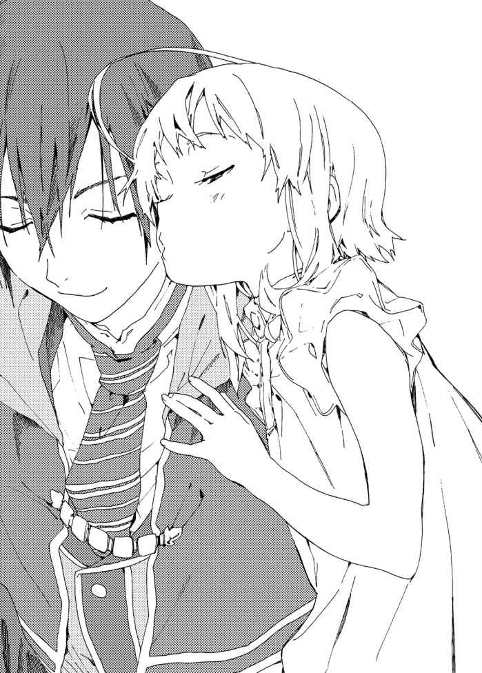
「わしは!? 」
アイリスは涙目だ。
するとリコリスはアイリスの髪を撫でながら、
「ママのこともね、大好きだよっ」
「わしもじゃぁ！ わしもじゃよぉ！」
アイリスは感動したようにリコリスに抱 きついた。
リコリスはくすぐったそうに目を細め、アイリスのほっぺたにキスをする。
「リコリスに好かれてよかったな」
「おめでとう、アイリス」
「うむっ！ わし、すっごく嬉しいのじゃ！」
翔真とキルシュに祝福され、アイリスは幸せそうにほほ笑むのであった。
《 あとがき 》
おひさしぶりです、猫又ぬこです。
このたびは『アイテムチートな奴隷ハーレム建国記』六巻を手に取っていただきまして、まことにありがとうございます。
二〇一六年の三月からスタートしたこのシリーズも、これにて完結となります。途中で打ち切りとなるケースもあるなか、こうして書きたいことを書ききって完走できたのも、これまで応援してくださった皆様のおかげです。
新シリーズも二〇一八年の夏頃発売に向けて鋭意制作中ですので、これからも応援していただけますと幸いです。
それでは謝辞を。
本作の出版にあたっては、多くの方々にご尽力いただきました。
担当さんをはじめとするＨＪ文庫編集部の皆様。これからも頑張りますので、今後ともよろしくお願いします。
イラストレーターの奈津ナツナ様。お忙しいなか素晴らしいイラストを描いてくださり、まことにありがとうございます。
校正様、デザイナー様、本作に関わってくださった多くの関係者の皆様。いつも本当にありがとうございます。
そしてなにより本作をご購入くださった読者の皆様に最上級の感謝を。皆様に少しでもお楽しみいただけたなら、これ以上の幸せはありません。
それでは次回作でお会いできることを祈りつつ。
二〇一八年とても寒い日 猫又ぬこ
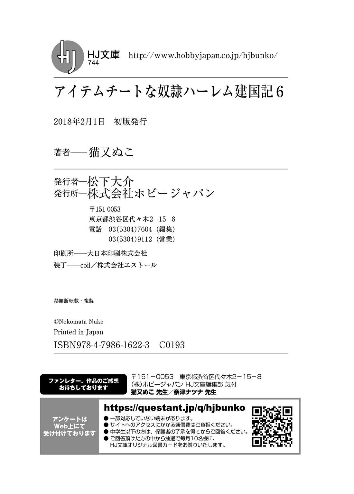